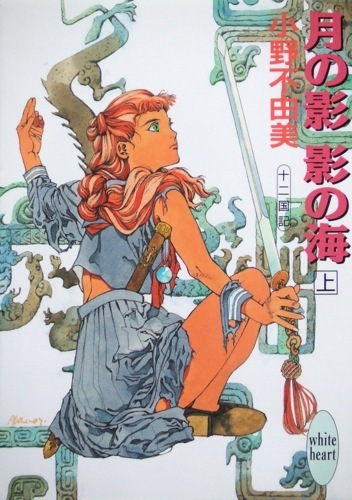
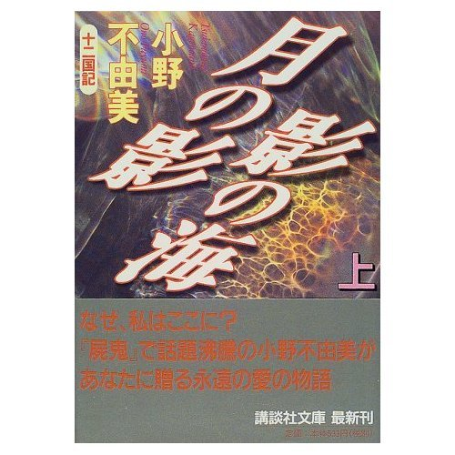

| [小野不由美] 十二国記シリーズ01 | |
| 小野不由美 | |
| (2015) | |
|
十二国記シリーズ 月の影 影の海（上）
小野不由美
|


|
月の影 影の海(上) 十二国記 |
一 章
１
漆黒の闇だった。
彼女はその中に立ちすくんでいる。
どこからか高く澄んだ音色で、滴が水面をたたく音がしていた。ほそい音は闇にこだまして、まるでまっくらな洞窟の中にでもいるようだが、そうでないことを彼女は知っていた。闇は深く、広い。その天もなく地もない闇の中に、薄く紅蓮のあかりがともった。闇のかなたに炎でも燃えさかっているように、紅蓮の光は形を変え、踊る。
赤い光を背にして無数の影が見えた。異形の獣の群れだった。
こちらはほんとうに踊りながら、あかりのほうから駆けてくる。猿がいて鼠がいて鳥がいる。さまざまな種類の獣の姿をしていたが、どの獣もどこかがすこしずつ図鑑で見る姿とはちがっていた。しかもそのどれもが、実際の何倍も大きい。赤い獣と黒い獣と青い獣と。
前肢をふりあげ、小走りに駆ける。あるいは跳躍し、宙を旋回し、まるで陽気な祭の行列でも近づいてくるようだった。陽気といえば陽気には違いなく、祭といえば祭にはちがいない。
異形の者たちは犠牲者をめがけて走っているのだ。生け贄を血祭りにあげる歓喜に、小躍りしながら駆けてくる。
その証拠に殺意が風のように吹き付けてきていた。異形の群の先頭まで、もう四百メートルもない。どの獣も大きく口を開けて、声はいっさい聞こえなかったが、歓声を上げているのだと表情でわかる。声もなく足音もなく、ただ洞窟で水がしたたるような音だけがつづく。
彼女は駆けてくる影をただ目を見開いて見つめていた。
──あれが、来たら殺される。
そう理解できても、身動きできない。おそらくは八つ裂にされ、喰われるのだろうと思ったが、まったく体が動かなかった。たとえ体が動いたにしても、逃げる場所もなく戦う方法もない。
体の中で血液が逆流する気がする。その音が耳に聞こえるような気がする。それはひどく潮騒に似ていた。
見つめるあいだに、距離は三百メートルに縮まった。
陽子は飛び起きた。
こめかみを汗がつたう感触がして、目に強い酸味を感じる。あわてて何度もまばたきをして、そうしてやっと深い息をついた。
「夢......」
声に出したのは確認しておきたかったからだった。ちゃんと確認をして、自分に言い聞かせていないと不安になる。
「あれは、夢なんだ」
夢に過ぎない。たとえそれが、このところひと月にわたって続いている夢だろうと。
陽子はゆっくりと首をふる。部屋のなかは厚いカーテンのせいで暗い。枕元の時計を引き寄せてみると、起きる時間にはすこし早かった。体が重い。手を動かすのにも足を動かすのにも粘りついたような抵抗を感じた。
あの夢をはじめてみたのはひと月ほど前だった。
最初はたんなる闇でしかなかった。高くうつろに水滴の音がして、まっくらな闇のなかに自分がただ一人でたたずんでいる。不安で不安で動きたくても身動きができない。
闇の中に紅蓮のあかりが見えたのは、同じ夢が三日続いた後だった。夢のなかの陽子は、あかりのほうから怖いものが来ることを知っていた。ただ闇のなかに光がある、それだけの夢に悲鳴をあげて飛び起きて、それを五日も続けたころに影が見えた。
最初は赤い光のなかに浮かんだシミのように見えた。何日か同じ夢を見るうちに、それが近づいてくるのだとわかった。それがなにかの群れだとわかるまでに数日がかかり、異形の獣だとわかるまでにさらに数日を要した。
そうして、と陽子はベッドの上のぬいぐるみを引きよせた。
──もうあんなに近い。
ひと月をかけて地平線からの距離を連中は駆けぬける。おそらく明日か、明後日には陽子のそばにたどりつく。
──そうしたら、自分はどうなるのだろう。
そう考えて陽子は頭をふった。
──あれは夢だ。
たとえひと月続いていても、ましてや日ごとにすすむ夢でも、夢は夢でしかないはずだ。
言い聞かせても不安は胸を去らない。鼓動は速くて、耳の奥で血液が駆け巡る潮騒のような音がしている。荒い呼吸がのどを灼いた。しばらくのあいだ陽子は、すがるようにしてぬいぐるみを抱きしめていた。
寝不足と疲労で重い体をむりに起こして、制服に着がえて下に下りた。なにをするのもひどくおっくうで、おざなりに顔を洗ってダイニング・キッチンに行く。
「......おはよ」
流しにむかって朝食の用意をしている母親に声をかけた。
「もう起きたの？ 最近早いのね」
母親は言って陽子をふりかえる。チラリと投げられた視線が陽子に止まって、すぐに険しい色になった。
「陽子、また赤くなったんじゃない？」
一瞬、なんのことを言われたのかわからずに陽子はきょとんとし、それからあわてて髪を手で束ねた。いつもならきっちり編んでからダイニングに顔を出すのだが、今朝は眠る前に編んだ髪をほどいて櫛を入れただけだった。
「ちょっとだけ染めてみたら？」
陽子はただ頭をふった。ほどけた髪がふわふわと頬をくすぐった。
陽子の髪は赤い。もともと色が薄いうえに、日に焼けてもプールに入ってもすぐに色が抜けてしまう。背中まで髪を伸ばしているが、伸ばすと毛先の色がぬける。おかげでほんとうに脱色したような色になってしまっていた。
「でなきゃ、もっと短く切る、とか」
陽子は無言でうつむく。うつむいたまま大急ぎで髪を編んだ。きっちり三つ編にすると、すこしだけ色が濃く見える。
「誰に似たのかしら......」
母親は険しい顔でためいきをついた。
「このあいだ、先生にも聞かれたわよ。ほんとうに生まれつきなんですか、って。だから染めてしまいなさい、って言ってるのに」
「染めるのは禁止されてるから」
「だったらうんと短く切れば？ そうしたら、すこしはめだたなくなるわよ」
陽子はうつむく。母親はコーヒーを入れながら、冷たい口調でつづけた。
「女の子は清楚なのがいちばんいいのよ。目立たず、おとなしくしてるのがいいの。わざわざ目立つよう、はでな格好をしているんじゃないか、なんて疑われるのは恥ずかしいことよ。あなたの人間性まで疑われてる、ってことなんだから」
陽子は黙ってテーブルクロスを見つめる。
「その髪を見て不良だと思うひともいると思うの。遊んでる、っておもわれるのもいやでしょ。お金をあげるから、帰りに切ってらっしゃい」
陽子はひそかにためいきをつく。
「陽子、聞いてるの？」
「......うん」
答えながら窓のそとに目をやった。ゆううつな色の冬空が広がっていた。二月なかば、まだまだ寒さは厳しい。
２
陽子が通っているのは平凡な女子校だった。女子校であるということ以外、なんの特徴もない私立高校。父親が断固として選んだ学校だった。
陽子の中学時代の成績は比較的よいほうだったから、もっと上のレベルの学校も狙えたし、事実教師は強くほかの学校をすすめたのだが、父親はゆずらなかった。家から近いこと、悪い気風も、反対に華やかな校風もないことが気に入ったらしい。
最初は模試の成績表を見て惜しそうにしていた母親も、すぐに父親に賛成した。両親がうなずけば陽子には選択の余地がない。すこし離れたところに制服が気に入っている学校があったが、制服にこだわってダダをこねるのも気がとがめたので、だまってそれにしたがった。そのせいかどうか、入学して一年になろうとしている学校には、今も特に愛着がわかない。
「おっはよー」
陽子が教室に入ると、あかるい声がした。二、三の女の子が陽子にむかって手を上げている。なかのひとりが駆けよってきた。
「中嶋さん、数学のプリントやってる？」
「うん」
「ごめーん。見せて」
陽子はうなずく。窓際にある自分の席についてからプリントを引っぱり出した。数人の女の子が机のまわりに集まって、さっそくそれを写しはじめる。
「中嶋さんってまじめなんだねぇ。さっすが、委員長」
言われて陽子はあいまいに微笑う。
「ホント、まじめ。あたし宿題なんてきらいだから、すぐ忘れちゃう」
「そう、そう。やろうと思ってもよくわかんないし。ダラダラ時間かかって、それで眠くなっちゃうんだよね。頭のいいひとはいいよなぁ」
「こんなの、一瞬で終わっちゃうんでしょ」
陽子はあわてて首をふる。
「そ、そんなことない」
「じゃ、勉強が好きなんだ」
「まさか」
陽子は笑ってみせた。
「うち、母親が厳しくて」
それは事実ではなかったが、こう言っておいたほうがカドがたたない。
「寝る前にいちいちチェックするから、いやになっちゃう」
母親はむしろ陽子が勉強することをきらう。成績などどうでもいいというわけではなかったが、塾に行く時間があったら家事を覚えなさい、というのが母親の言い分だった。それでもまじめに勉強をするのは、好きだからというわけではない。ただ教師に叱られるのが怖いからだった。
「ひゃあ。教育ママなんだ」
「そうなの。勉強、勉強ってうるさくて」
「わかる、わかる。ウチもだよぉ。人の顔見ると、勉強ってさぁ。自分はそんなに勉強が好きだったのか、ってーの」
「だよね」
どこかほっとしながら陽子がうなずいたとき、女の子のひとりが小さな声をあげた。
「あ、杉本だ」
教室にひとりの少女が入ってくるところだった。
チラチラと全員の視線が向けられて、そうしてすぐに離れていった。しんとそらぞらしい空気が流れる。
その生徒を無視するのが、ここ半年ほどクラスではやっている遊びだった。彼女はそんなクラスの様子を上目づかいに見わたしてから深くうつむいた。おずおずと陽子のほうに歩いてくると左隣の席に腰をおろす。
「中嶋さん、おはよう」
遠慮がちに声をかけられて陽子はとっさに返事をしそうになり、あわててそれをのみこんだ。いつだったか、うっかり返事をして、あとでクラスメイトに皮肉を言われたことがある。
それでもだまったまま気がつかなかったふりをした。くすくすと周囲でしのび笑いがおこる。
笑われたほうは傷ついたようにうつむいたが、物言いたげに陽子に視線をよこすのをやめなかった。それを感じながら、陽子は周囲の会話に相づちをうつ。無視される彼女を哀れに思うけれど、情けをかけて周囲に逆らえば今度は自分が被害者になる。
「あの......中嶋さん」
隣からおずおずとした声が聞こえたが、陽子はこれにも気がつかなかったふりをした。故意に無視する気分はにがい。それでも陽子には、ほかにどうすればいいのかわからなかった。
「中嶋さん」
彼女は辛抱づよく何度もくりかえす。そのたびに周囲の声がとぎれ、やがてその場に集まっていた全員が彼女のほうに冷たい視線を向けた。陽子もそれ以上無視することができなくて、上目づかいに自分を見ている相手に目を向ける。視線を向けたが、返答はしなかった。
「あの......数学の予習やってる？」
彼女のおずおずとした声に、陽子の周囲がどっと笑いくずれた。
「......いちおう」
「悪いけど、見せてくれない？」
数学の教師は授業で当てる生徒を前もって指名する。そういえば彼女が今日指名されていたことを陽子は思い出した。
陽子は視線を友人たちに向ける。誰もなにも言わず、同じ色の視線でそれにこたえた。全員が、彼女を拒絶する陽子の言葉を期待しているのだとわかる。陽子はにがいものをのみこんだ。
「まだ、見直しをしたいところがあるから」
婉曲な拒絶は観客の気に入らなかったようだった。すぐさま声がかかる。
「中嶋さんって、やさしーい」
ふがいない、と暗に責めている声だ。陽子は無意識のうちに見をすくめた。別の生徒がそれに同意する。
「中嶋さん、ピシャッと言えばいいのに」
「そうそう。あんたなんかに、声をかけられるの、迷惑だって」
「世の中にはハッキリ言わないとわからないバカっているからさぁ」
陽子は返答に困る。周囲の期待を裏切る勇気は持てないけれど、同時にまた、隣の席でうつむいているクラスメイトにあえてひどい言葉を投げつける勇気も持てなかった。それで陽子はただ困ったように微笑う。
「......うーん」
「ホントにら中嶋さんって、ひとがいいんだから。だから誰かさんみたいなのに、アテにされるんだって」
「あたし、いちおう委員長だし......」
「当たるのがわかってるのに、やってこないほうが悪いんだって。そんな奴のめんどうまでみることないよぉ」
「そう。──だいいち」
と言った生徒は酷薄な笑みをうかべた。
「杉本なんかにノートを貸したら、ノートが汚れるじゃない」
「あ、それは困るかも」
「でしょお？」
どっ、と再び全員が笑いくずれる。いっしに笑いながら陽子は視線のすみで隣の席の様子をうかがう。深くうつむいた少女は涙をこぼしはじめた。
──杉本さんにも、責任はある。
陽子はそう自分に言い聞かせる。誰もが理由もなく被害者を決めるわけではない。被害者になったからには、彼女の中にそれなりの要因があるのだ。
３
──天もなく地もない闇のなかに、高く高くうつろに水滴の音がする。
陽子はその闇のなかに立っていた。
顔が向いた方向に、薄く紅蓮のあかりが見える。その光を背に無数の影が蠢いている。異形の獣の群れが踊りながら駆けてくる。
群れと自分のあいだはもう二百メートルほどしかない。異形のものたちが大きいだけに、それは恐ろしく短い距離に見える。哄笑の形に口をあけた大きな猿の、赤い毛並みが光を弾いて、跳躍するたびに盛り上がってはのびる筋肉の動きが見てとれる。もうそれだけの距離しかない。
体を動かすことも声をあげることもできなかった。まなじりが裂けるほど目を見張って、近づいてくる群れを見守っているしかない。
走る。跳躍する。踊るように駆けてくる。吹きつけてくる殺意は突風のように呼吸を詰まらせた。
──起きなきゃ。
あれがたどりつく前に、夢から覚めなければ。
そう念じても目覚める方法がわからない。意志の力で起きることができるのなら、とっくにそうしている。
なすすべもなく見つめるあいだに、距離はさらに半分に縮まった。
──起きなきゃ。
歯ぎしりするほどの焦燥に襲われる。身内でうずまいて肌を突き破りそうだ。荒い呼吸と速い鼓動と、駆けめぐる血潮が海鳴りに似た音を立てる。
──どうにかして、ここから逃げなければ。
そう思ったとき、突然頭上に気配を感じた。殺意が陽子を押しつぶす勢いで落下してくる。陽子は夢のなかで初めて身動きをした。頭上をふりあおいだ。
茶色の翼が見えた。同じく茶色のたくましい脚と、おそろしく鋭い太い爪と。
逃げる、という意志さえ念頭に浮かぶ暇がなかった。一瞬、体の中の潮騒が強くなって、陽子はただ悲鳴をあげた。
「中嶋さん！」
陽子はとっさにその場を逃げた。体が逃げることを切望していて、思わずそれに従ってしまった。逃げた後でようやく周囲の様子が目に入る。
あきれた表情の女教師と、同じくあきれた表情の生徒たち。一拍送れて、どっと笑いがわいた。
ほっと息をついてから、陽子はにわかに赤くなった。
眠っていたのだ。このところ夢のせいで寝つきが悪く、眠りも常に浅かった。ずっと寝不足ぎみだったから授業中にトロトロしたことはよくあるが、夢を見たのははじめてだった。
ツカツカと女教師が近づいてきた。どういうわけだが陽子を目のかたきにしている教師だった。よりによって、と陽子は唇をかむ。陽子はおおむね教師にうけがよかったが、いくら従順にふるまっても、この教師とだけはうまくやっていくことができなかった。
「......まったく」
彼女はそう言って英語の教科書で陽子の机を叩く。
「いねむりをする生徒ならいますけどね、寝ぼけるほどゆっくりお休みいただいたのは、はじめてですよ」
陽子はうなだれて席に戻る。
「あなたは、なにをしに学校へ来てるんですか。眠いんだったら家で寝ていればいいでしょう。授業がいやなら、なにもむりに来ていただかなくてもいいんですよ」
「......すみません」
教師は教科書の角で机を叩く。
「それとも、そんなに夜遊びでいそがしいの？」
どっと生徒たちが笑った。てらいもなく笑った生徒のなかには、友達の姿も混じっている。聞こえよがしの笑い声が左隣からも聞こえた。
女教師はかるく、ひとつに編んで背中にたらした陽子の髪を引っ張った。
「これ、生まれつきなんですって？」
「......はい」
「そう？ わたしの高校の友達にもいたわね、こういう髪のひとが。なんだか彼女を思い出すわ」
そう言ってから教師は笑う。
「もっとも、その人はあなたと違って脱色してたんだけど。三年のときに補導されて学校を辞めちゃったの。今ごろどうしてるかしら。なつかしいわ」
教室のあちこちで、しのび笑う声がおこる。
「──それで？ 授業をうける気があるの？ ないの？」
「......あります」
「そう？ じゃ、時間中立ってなさい。そうすれば起きてられるでしょう？」
教師はそう命じてふくみのある笑い方をしてから、教壇に戻った。
立ったまま授業を受けたその時間中、教室の中ではしのび笑いが絶えることがなかった。
陽子はその日の放課後、担任の呼び出しをうけた。どうやら英語の時間の所業が耳に入ったらしい。
職員室に呼び出されて、どういう生活をしているのか長々と問いただされた。
「夜遊びをしてるんだろう、と言う先生もいるしな」
中年の担任はそう言って顔をしかめる。
「どうなんだ？ なにか夜ふかしをするような事情でもあるのか」
「......いえ」
まさかあんな夢の話を他人にできない。
「夜遅くまでテレビでも見てるのか」
「いえ、あの......」
陽子はあわてて理由を探す。
「中間テストで成績が落ちたので......」
担任はあっさり納得したようだった。
「ああ、そういやちょっと悪かったな。それでか。──だがな、中嶋」
「はい」
「いくら家で夜遅くまで勉強しても、かんじんの授業を聞いてなきゃ意味がないぞ」
「すみません」
「あやまってもらうようなことじゃないが。中嶋は誤解されやすいんだよ。けっこうその髪の毛が目立つんだよなぁ。それ、なんとかならんか？」
「今日、切ろうと思ってたんです......」
「そうか」
そう言って担任はうなずく。
「女の子だからなぁ。いやだろうけど、そのほうがおまえのためだとおもうぞ。先生は。染めてるだの、遊んでるだのと言う先生もいるしな」
「はい」
担任は陽子に手をふる。
「じゃ、帰っていいから」
「はい。失礼します」
陽子は頭を下げる。そのときだった。背後から声をかけられたのは。
４
「......見つけた」
声といっしょにかすかに海の匂いがした。
担任が不審そうに陽子の背後を見て、それで陽子もふりかえる。
陽子のうしろには若い男が立っていた。まったく見覚えのない顔だった。
「あなただ」
男はまっすぐ陽子を見て言う。年は二十代後半といったところだろう。ぽかんとするくらい奇妙な男だった。裾の長い着物に似た服を着ている。能面のような顔に髪を膝裏に届くほど長く伸ばして、それだけでも尋常でなく奇妙だというのに、その髪がとってつけたように薄い金色をしている。
「誰だ、君は」
担任がとがめるように聞く。男はそれを気にしたふうもなく、さらにあぜんとするようなことをやってのけた。陽子の足元に膝をついて、深く頭を下げたのだ。
「......お探し申しあげました」
「中嶋、おまえの知りあいか？」
担任に聞かれ、ぽかんとしていた陽子はあわてて首をふった。
「ちがいます」
あまりに異常な事態に、陽子はもちろん、担任もうまく反応ができないようだった。困惑した気分で見つめていると、男は立ち上がる。
「どうか私とおいでください」
「はぁ......？」
「中嶋、なんなんだ、こいつは」
「わかりません」
聞きたいのは陽子のほうだった。救いを求めて担任を見る。職員室に残っていたほかの教師たちがけげんそうに集まってきていた。
「なんだ、おまえは？ 校内は関係者以外は立ち入り禁止だぞ」
担任がやっとそれに思い至ったように強く言うと、男は無表情に教師を見返す。すこしも悪びれたところがなかった。
「あなたには関係がない」
冷たく言って周囲に集まった教師たちを見わたす。
「あなた方もです。さがりなさい」
あまりにも居丈高な物言いに誰もがまず驚いている。同じように驚くばかりの陽子を男は見すえた。
「事情なら、おいおい説明いたします。とにかく私とおいでください」
「失礼ですけど」
誰なんですか、と陽子が聞きかけたとき、ふいに間近で声が響いた。
「タイホ」
人を呼ぶ語調の声に男が顔をあげる。この奇妙な男の名前なのかもしれない。
「どうした」
眉をひそめて男が問い返した方向にはしかし、声の主は見当たらなかった。どこからともなく再び声が響いた。
「追っ手が。つけられていたようです」
能面のような顔が急に険しい表情になった。ただうなずいて陽子の手首をつかむ。
「失礼を。──ここは危険です。こちらへ」
「......危険、って」
「説明をする余裕はありません」
ぴしゃりといわれて陽子は思わず身をすくめる。
「すぐに敵が来ます」
「......敵？」
なんとはなしに不安を感じて問い返したときだった。もう一度近くで声がした。
「タイホ、来ました」
見回したけれど、やはり声の主の姿は見えない。教師たちが何かを言いかけるのと同時だった。
──裏庭側の窓ガラスが割れたのは。
割れたのは陽子の間近の一枚だった。とっさに目を閉じた陽子の耳に、ガラスの砕ける音に混じって悲鳴じみた叫びが聞こえた。
「なんだ！？」
担任の声に閉じた目を開くと、教師はガラスが割れた窓に駆け寄るようにして外を見回していた。広い川に面した窓からは冷たい風が吹き込んで、冷気といっしょに、なにか生臭い臭気を外から運んできていた。床には破片が散乱している。比較的窓のそばにいたにもかかわらず陽子が破片をかぶらずにすんだのは、奇妙な男が盾になってくれたからだった。
「なに......？」
状況がつかめずに問う陽子に、男がいくぶん冷ややかな声を出した。
「だから危険だと申しあげましたのに」
言って、あらためて陽子の腕をつかむ。
「こちらへ」
強い不安を感じた。つかまれた腕をふりほどこうとしたが、男はまったく離すふうがない。それどころかかえって強く引っ張る。たたらを踏んでよろめいた陽子の肩に手をかけた。
引っ張る男を押しとどめたのは、担任だった。
「これは、おまえのしわざか！？」
男は険をふくんだ目で担任を見る。あげた声は冷ややかで容赦がなかった。
「あなたには関係がない。さがっていなさい」
「えらそうに、なんだ、おまえは。うちの生徒になんの用だ？外に仲間でもいるのか！？」
男に向かって怒鳴ってから陽子をにらむ。
「中嶋、どういうことなんだ！？」
「......わかりません」
聞きたいのは陽子のほうだった。首をふる陽子を男は引っぱる。
「とにかく、ここは」
「いやです」
こういう誤解は恐ろしい。こんな男と仲間だなんて思われたら。身をよじって男の腕をふりほどくと同時に、再びどこか上のほうから声がした。
「タイホ」
緊張した声だった。教師たちが声の主を探すように周囲を見まわす。男はあきらかに顔をしかめた。
「まったく、頑迷な」
吐き捨てるように言ってから、男はいきなり膝をついた。反応する間も与えず陽子の足をつかまえる。
「ゴゼンヲハナレズチュウセイヲチカウトセイヤクスル」
早口に言うやいなや、陽子をにらみすえた。
「許す、と」
「なんなの！？」
「命が惜しくないのですか。──許す、とおっしゃい」
語気荒く言われ、けおされて陽子は思わずうなずいていた。
「許す......」
ついで男がとった行動は、陽子を呆然とさせるのにじゅうぶんだった。
一拍おいて、周囲からあきれたような声があがる。
「おまえら！」
「なにを考えてるんだ！」
陽子はひたすらあぜんとしていた。この見ず知らずの男は頭をたれて、つかまえた陽子の足の甲に額をあてたのだ。
「なにを──」
するの、と言いかけて陽子は言葉をとぎらせた。
たちくらみがした。なにかが自分のなかを駆け抜けていって、それが一瞬、目の前をまっくらにする。
「中嶋！ どういうことだ！？」
顔をまっかにした担任が怒声をあげるのと同時だった。
どん、と低い地響きのような音がして、裏庭側に残ったガラスというガラスが白く濁った。
５
その一瞬は、まるで大量の水が吹きこんでくるように見えた。
砕け散ったガラスの破片が鋭利な光を弾いて水平に殺到してくる。
とっさに目を閉じ、腕をあげて顔をそむけた。その腕に、顔に体に小さな痛みが吹きつけてくる。すさまじい音がしたはずだが、陽子の耳には届かなかった。
小石のぶつかるような感触が絶えたことを確認して目を開けると、教室はガラスの破片で光を撒いたように見えた。集まってきた教師たちがその場にうずくまっている。陽子の足もとには担任が身を伏せていた。
大丈夫ですか、と問いかけて、彼の体には無数の破片が刺さっているのを発見する。教師たちがあげているうめき声がようやく陽子の耳に入った。
陽子はとっさに自分の体を見おろす。担任の脇に立っていたにもかかわらず、陽子の体には傷ひとつなかった。
ただ驚くしかない陽子の足を担任がつかんだ。
「おまえ......なにをしんたんだ」
「あたしは、なにも」
その血だらけの手を引きはがしたのは男だった。
「行きましょう」
この男も無傷だった。
陽子は首を横にふる。ついてけいばほんとうに仲間だと思われてしまう。それでも手を引かれるままつい足を動かしてしまったのは、その場に残るのが恐ろしかったからだった。敵が来る、という言葉には現実感がない。それよりも怪我人だらけで血の臭いのたちこめた、この場所にとどまっていることが怖かった。
職員室を飛び出したところで駆けつけてきた教師に会った。
「どうした！？」
初老の教師は怒鳴り、陽子の脇にいる男に目をとめて眉をひそめる。陽子がなにを言うよりも早く、男が手を上げて職員室を示した。
「手当てを。怪我人がいる」
それだけを言って陽子の手を引く。背後で教師がなにかを叫んだが、なんと言ったのかはわからなかった。
「どこへ、行くんですか」
陽子が声をあげたのは、男が階段を下りようとせず上がろうとしたときだった。この場をとにかく逃げ出して家に帰りたかった。そう意図して階下を指さす陽子の腕を、男は上に向かって引く。
「そっちは屋上......」
「いいから、こちらへ。そちらからは人が来る」
「でも」
「我々が行くとかえって迷惑をかける」
「迷惑、って」
「無関係な物をまきこむことをお望みか」
男は屋上へ通じるドアを開く。強く陽子の手を引いた。
無関係な者をまきこむということは、陽子は無関係ではないということなのだろうか。男が言った「敵」とは、いったいなんだろう。聞きたかったが、なんとなく気後れがした。
手を引かれるまま、なかばよろめくようにして屋上へ出たとき、背後から奇声がとどろいた。
錆びた金具がたてたような声に、陽子は背後に視線を走らせる。今出てきたばかりのドアの上に影が見えた。
茶色の翼。毒々しい色合いの曲がった嘴が大きく開かれて、興奮した猫のような奇声をあげている。
両翼の先までが五メートルはあろうかという巨鳥だった。
──あれは。
からめとられたように身動きができなかった。
──あれは、夢のなかの。
建物の屋根から、奇声といっしょに濃厚な殺意が降ってくる。夜をむかえはじめた曇天の空は暗い。大きな襞をみせる雲に、どこからかもれた夕陽がかすかに赤い光を投げていた。
鷲に似たその鳥には角があった。首をふり、大きく一度羽ばたきすると、いやな臭気のする風が圧力をもって吹きつけてきた。夢と同じように、陽子はそれをただ見ていた。
巨鳥の身体が舞いあがる。ごくかるく浮きあがると、宙でもう一度羽ばたきし、そうして急に翼の角度を変えた。
急降下してくる態勢だ、と陽子は呆然と思った。太い脚が陽子をまっすぐに示している。茶色の羽毛におおわれた脚には、圧倒されるほど太く鋭い鉤爪が見えた。
陽子が立ち直るひまもなく、鳥の身体が落下してくる。悲鳴をあげることさえできなかった。
陽子の目は見開かれたままだったが、なにも見ていなかった。それで肩に鈍い衝撃が当たったときにも、それが自分を引き裂く鉤爪のせいなのだとすんなり納得した。
「ヒョウキ！」
どこからか声が響いて、目の前に暗い赤い色が流れた。
──血だ......。
そう思ったが、不思議にさほどの痛みは感じなかった。
陽子はようやく目を閉じる。想像していたよりも楽そうだ、と思った。死ぬことはもっと恐ろしいことだと思っていたのだけれど。
「しっかりなさい！」
強い声の主に肩をゆすられて、陽子は我に返った。
男が顔をのぞきこんでいた。背中にコンクリートの感触がして、左の肩にフェンスの堅い感触が食いこんでいる。
「自失している場合ではない！」
陽子は跳ね起きた。立っていたはずの場所から、かなり遠い場所に陽子は転がっている。
奇声が響いて、ドアの前で巨鳥が翼をふっているのが見えた。
羽ばたくたびに圧力のある風が吹く。鉤爪は屋上のコンクリートをえぐっていた。爪が深く床に食いこんで鳥は身動きがとれないようだった。
いらだったように大きく首をふる。その首に赤い獣が喰らいついているのが見えた。暗い赤の毛並みにおおわれた豹のような獣だった。
「......なに」
陽子は悲鳴をあげた。
「なんなの、あれは！」
「だから危険だと申しあげたのに」
男は陽子を引き起こす。陽子は一瞬だけ男と鳥を見くらべた。
鳥と獣はもつれ合うようにして競り合いを続けている。
「カイコ」
男の声に呼ばれたように、コンクリートの床から一人の女が現れた。まるで水面に浮かびあがってくるように羽毛におおわれた女の上半身が現れる。
女は鳥の翼のようなその腕に一本の剣を抱いていた。宝剣、といっていいような優美な鞘の剣だった。柄は金、鞘にも金の装飾がある。宝石らしい石を散らし、玉飾りをつけたその剣はとうてい実用に耐えるようには見えない。
男は女の腕から剣を取りあげる。手にとったそれをまっすぐ陽子に突きつけた。
「......なに」
「あなたのものです。これをお使いなさい」
陽子はとっさに男と剣を見くらべた。
「......あたしが？ あなたじゃなくて？」
男は不快げな顔をして剣を陽子の手に押しこんだ。
「私には剣をふるう趣味はない」
「こういう場合、あなたがそれで助けてくれるんじゃないの！？」
「あいにく剣技を知らない」
「そんな！」
手のなかの剣は見かけよりも重い。とうていふりまわせるとは思えなかった。
「あたしだって知らない」
「おとなしく殺されてさしあげるおつもりか」
「いや」
「ではそれをお使いなさい」
陽子の頭のなかは混乱の極致にあった。殺されたくない、という思念だけが強い。
だからといって剣をふりかざして戦う勇気はない。そんな力や技量があるはずがない。剣を使えという声と、使えるはずがないという声と、両極の声が陽子に第三の行動をとらせた。
つまり、剣を投げつけたのだ。
「なにを──おろかな！」
男の声には驚愕と怒りとが混じっている。
鳥をめがけて陽子が投げた剣は、目標に届きもしなかった。打ちふるう翼の先をわずかにかすめて巨鳥の足元に落ちる。
「まったく。──ヒョウキ！」
舌打ちするのが聞こえそうな声だった。
男の声に鳥の翼に爪をたてていた暗赤色の獣が離れる。離れざま身をかがめて落ちた剣をくわえると、矢のように陽子のほうへと駆け戻ってくる。
剣をうけとりながら男は獣に問う。
「持ちこたえられるか」
「なんとか」
驚いたことに返答したのは、まぎれもなくヒョウキと呼ばれた暗赤色の獣だった。
頼む、と短く言って男はだまってひかえていた鳥のような女に声をかける。
「カイコ」
女がうなずいたとき、細かな石が飛んできた。
巨鳥が爪を抜いてコンクリートの飛沫があがったところだった。
舞いあがろうとする巨鳥に赤い獣が跳びつく。いつの間にか全身を現して宙に舞い上がっていた女がそれに加わった。女の脚は人そのもの、ただし羽毛におおわれて、さらに長い尾がある。
「ハンキョ。ジュウサク」
男に呼ばれて女が現れたのと同じように、二頭の大きな獣が現れた。一方は大型犬に、一方は狒狒に似ている。
「ハンキョ、ここは任せる。ジュウサク、この方を」
「御意」
二頭の獣は頭を下げた。
うなずき返し、男は背を向ける。ためらいのない動きでフェンスに歩み寄ると、するりと姿をかき消した。
「......そんな！ 待って！」
叫んだときだった。狒狒に似た獣が腕を伸ばした。
陽子の身体に手をかけ、有無を言わさず抱え込む。陽子はとっさに悲鳴をあげた。それを無視して狒狒は陽子を小脇に抱える。その場を蹴ってフェンスの外に跳躍した。
６
狒狒は屋根から屋上へ、屋上から電柱へ、驚異的な跳躍を繰り返して風のように駆けた。
陽子がその乱暴な運送から開放されたのは街はずれの海岸、港に面した突堤の上だった。
狒狒は抱えた陽子を地面におろし、陽子が息をついているあいだに一言もなく消えうえせた。どこへ消えたのかと周囲を見渡していると、積みあげられた巨大なテトラポッドのあいだからすべり出るようにして宝剣をさげた男の姿が現れた。
「ごぶじか」
聞かれて陽子はうなずく。眩暈がするが、これは狒狒の跳躍に酔ったせい、そうして次々におこる常識はずれのできごとのせいだと自覚していた。
足腰がなえてその場に座りこむ。意味もなく涙がこぼれた。
「お泣きになっている場合ではない」
陽子はいつの間にか傍らに膝をついた男を見た。いったいなにがおこったのか。問うように男を見あげたが、男には説明する気がないようだった。
陽子は目を伏せる。男の態度はあまりにもそっけなくて、あえて質問をする勇気が出ない。それで震える手で膝を抱いた。
「......怖かった」
つぶやいた陽子に、男は強い口調で吐き捨てるように言う。
「なにを悠長なことを言っておられる。じきに追ってくる。ゆっくり息を整えている猶予はないのですよ」
「追って......くる？」
驚いて見あげると、男はうなずく。
「あなたがお斬りにならなかったのだから、しかたない。ヒョウキたちが足止めをしているが、おそらくそんなにはもたないでしょう」
「あの鳥のこと？ あの鳥はなんだったの？」
「コチョウ」
「コチョウって？」
男は軽蔑したような目つきをした。
「あれのことです」
陽子は身をすくめる。そんな説明ではわからない、という抗議は声にならなかった。
「あなたは、誰なんですか？ どうして助けてくれたんですか？」
短く言ったきり、それ以上の説明はない。陽子はかるくためいきをついた。タイホというのが名前ではないの、と聞きたかったが、とうてい聞けるようなムードではなかった。
こんな得体の知れない男の前から逃げ出して家に帰りたかったが、教室に鞄とコートをおいたままだった。とうていひとりで取りに戻る気にはなれないが、かといってこのまま家に帰るわけにもいかない。
「──もうよろしいか？」
とほうにくれた思いでうずくまっていると、唐突にそう聞かれた。
「よろしい、って」
「もう出発してもよろしいか、とお聞きした」
「出発ってどこへ？」
「あちらへ」
あちら、というのがどこなのか、陽子にはまったくわからなかった。ただほぼんやりしている陽子の手を男がつかんだ。腕を引かれて、これで何度目だろう、と思った。
どうしてこの男は満足な説明もなしに、陽子になにかを強制しようとするのだろう。
「......ちょっと待ってください」
「そんなひまはない」
男はいらだった口調で言う。
「じゅうぶんお待ち申しあげた。これ以上の余裕はない」
「それは、どこなんですか？ どれくらいの時間がかかるの」
「まっすぐに行けば、片道に一日」
「そんな、困ります」
「なにを」
とがめるように言われて、陽子をうつむく。とりあえずいってみようと思うには、男はあまりにも得体がしれない。
片道に一日というのも陽子にとっては論外の数字だった。両親になんと言って家を空ければよいのか。頭の固い両親が、陽子のひとり旅など許すはずがない。
「......困ります」
なんだか泣きたかった。なにひとつ陽子にはわからない。男はなにも説明してはくれない。それなのに、こんなむりな要求を怖い顔でつきつけるのだ。
泣けばまた叱られるだろうから、必死で涙をこらえた。
ひたすら膝を抱いてだまりこんでいると、突然またあの声が響いた。
「タイホ」
男は空を見あげる。
「コチョウか」
「はい」
ぞっ、と陽子の背筋を悪寒が走った。あの鳥が追ってきたのだ。
「......助けてください」
男の腕をつかむと、男は陽子をふりかえる。手にさげた剣を突きつけた。
「命がおしければ、これを」
「でもあたし、こんなの使えません」
「これはあなたにしか使えない」
「あたしには、むりです！」
「ではヒンマンをお貸しする。──ジョウユウ」
呼ばれて地面から男の顔が半分だけ現れた。
岩でできたような、顔色の悪い男で、くぼんだ目が血のように赤い。
するりと地中から抜け出したその首の下には身体がなかった。半透明のゼリー状のものがくらげのようにまといついているだけだ。
「......なに！？」
小さく悲鳴をあげた陽子をよそに、それは地中からすべり出る。まっすぐ陽子に向かって飛んできた。
「いや！」
逃げようとした陽子の腕をケイキがつかむ。
逃げ出すに逃げ出せない陽子の首のうしろに、ごとんと重いものが乗った。あの首が乗ったのだとわかった。冷たいぶよぶよとしたものが制服の衿の中へもぐりこんでくるのを感じて、陽子は悲鳴をあげた。
「いや！ とって！」
つかまれていない片腕をめちゃくちゃにふって、背中のものを払い落とそうとするとケイキがその腕までもつかむ。
「やめて！ いや！！」
「聞き分けのない。おちつかれよ」
「いや！ いやだってば！！」
冷えた糊のようなものが背中から腕を這う。同時に首のうしろに強くなにかが押しつけられるのを感じて、陽子はひたすら悲鳴をあげた。
膝が崩れて座りこみ、がむしゃらに男の腕をふりほどこうと身をよじって、腕が自由になるや、勢いあまってその場に転ぶ。なかばパニックをおこしながら両手で首のうしろを払ったときには、もうなんの手ごたえもなかった。
「なに？ なんなの！？」
「ジョウユウが憑依しただけです」
「憑依って」
陽子は身体中を両手でこする。身体のどこにも、あのいやな感触はない。
「剣の使い方はジョウユウが知っている。これをお使いなさい」
そう冷淡に言って男は剣をさしだす。
「コチョウは速い。あれだけでも斬っていただかねば、追いつかれる」
「あれ......だけ？」
だけ、ということはほかにも追ってくるものがあるということだろうか。あの夢のなかの光景のように。
「あたし......できない。それより、さっきのジョウユウとかヒンマンとかいうばけものは、どこへ行ったの」
男は答えずに空を見あげる。
「来た」
７
陽子がふりかえるより先に、背後から奇声が聞こえた。
声のほうを見あげる陽子の手のなかに、剣が押しこまれる。それにはかまわず陽子はふりかえる。背後の上空に翼を広げた巨鳥の姿が降下してくるのが見えた。
悲鳴をあげた。逃げられない、ととっさに思った。
逃げるよりも落下してくる鳥のほうが速い。剣なんて使えない。あんな、ばけものに対峙する勇気なんてない。身を守る方法がない。
太い脚の鉤爪が視野いっぱいに広がった。目を閉じたかったが、できなかった。
目の前を白い光が走って、堅い激しい音がした。岩と岩とを打ちつけたような音をたてて、斧のように重量感のある鉤爪が顔のすぐ前で止まった。
とめたのは剣、剣を鞘からなかばまで引き抜いて目の前にかかげたのは、ほかでもない自分の両腕だった。
なに？ と自問するひまもなかった。
陽子の腕が残りの刀身を引き抜いて、抜きざまコチョウの脚を払う。
赤い血が散って、生暖かな温度をともなって陽子の顔に噴きつけた。
陽子は呆然としているしかなかった。
断じて剣を使っているのは陽子ではない。手足が勝手に動いて、狼狽したように浮上するコチョウの片脚を斬って落とす。
また鮮血が飛沫いて顔を汚した。ぬるいものが顎から首をつたって、衿のなかに入ってくる。その感触に陽子は震えた。
陽子の足は血飛沫をかわすようにその場をさがった。
宙へ逃げ出した巨鳥は、すぐさま態勢を立て直して突っ込んできた。
その翼に斬りつけながら、陽子は自分の体が動くたび、動きにしたがって冷えたぞろぞろとする感触が身体をつたうのを感じる。
──あれだ。あの、ジョウユウとかいうばけもの。
翼を傷つけられた巨鳥が、奇声をあげながら地に突っ込む。
それを視野にとらえながら、陽子は悟る。
あのジョウユウとかいうばけものが自分の手足を動かしているのだ。
身悶えするように羽ばたいた巨鳥は、地を巨大な両翼で叩くようにして陽子に向かってきた。
陽子の身体はよどみなく動いて、身をかわしざま、その胴を深く斬って捨てる。
生暖かい血糊を頭からかぶって、手には肉と骨を断つおぞけのするような感触が残った。
「いや」
口は陽子の意思によってつぶやいたが、身体は動きをやめなかった。
血糊が身体をつたうのもかまわず、地面に落ちてあがくコチョウの翼に深く剣を突き立てる。刺し貫いた剣をそのまま引いて大きな翼を斬り裂いた。
そのまま陽子の身体はきびすを返して、奇声をあげ血泡を噴いてのたうつ首に向かった。
「いや。......やめて」
巨鳥は転がるようにして傷ついた翼を大きく打ちふるっていたが、翼はもはやその体重を浮上させることができなかった。
陽子の腕は、音をたてて宙を扇ぐ翼を避けて胴を刺し貫いた。とっさに目をそむけたが、ぶよぶよとした抵抗を斬り裂く感触が手に残る。
その剣を抜きざま振り上げ、躊躇なくその首にふりおろした。首の骨に当たって剣が止まる。
あらためて粘る血肉から引き抜いてふりあげ、赤く染まった首を今度は完全に斬り落とし、そのまだ痙攣している翼で剣をぬぐったところで手足の勝手な動きが止まった。
陽子は悲鳴をあげて、やっと剣を投げ捨てた。
突堤の端から身を乗り出して陽子は吐いた。
泣きじゃくりながら海中投げこまれたテトラポッドをつたって水のなかに飛びこむ。今は二月もなかばで、海の水は身を切るほど冷たいことは、まったく念頭に浮かばなかった。とにかく、頭からかぶった血糊を洗い落としてしまいたかった。
無我夢中で水をかぶって、それでようやく落ちつくと、水のなかから這いのぼることさえできないほど震えた。
のろのろと這いのぼって突堤に戻り、そこであらためて声をあげて泣いた。恐怖と嫌悪で泣かずにはおれなかった。
声が嗄れるほど泣いて、泣く気力さえつきたころにようやくケイキが声をかけてきた。
「もう、よろしいか」
「......なに......」
ぼんやりと顔をあげると、ケイキの表情にはなんの色もない。
「これが追っ手のすべてではありません。じきに次の追っ手が来る」
「......それで？」
神経のどこかが麻痺したようだった。追っ手という言葉に恐怖を感じず、男をまっこうからにらむことにも気後れを感じなかった。
「追っ手は手ごわい。お守り申しあげるには、私ときていただくほかはありません」
陽子はそっけなく返した。
「いや」
「分別のないことをおっしゃる」
「もうたくさん。あたし、家に帰る」
「家に帰ったからといって、決して安全ではない」
「もういいの、どうだって。寒いから家に帰る。......ばけものを取ってよ」
男は陽子を見すえた。その目を陽子も淡々と見返す。
「あたしの身体に張りついてるんでしょ。ジョウユウとかいうばけものを取って」
「それは当面、あなたに必要なものだ」
「必要ない。あたし、家に帰るから」
「どこまでおろかな方か！」
怒鳴られて、陽子は目を見開く。
「死んでいただいては困る。否とおっしゃるなら、むりにでもおいでいただきます」
「勝手なことばかり言わないで！」
陽子は叫んだ。他人を怒鳴りつけたのは記憶にある限り、生まれてはじめてのことだったが、いったん叫んでしまうと、身内には奇妙な高揚感があった。
「あたしがなにをしたっていうのよ！ あたしは、家に帰るの。こんなことに巻き込まれるのはもういや。どこへも行かない。家に帰る」
突きつけられた剣を、陽子は乱暴に手で払いのけた。
「あたしは、家に帰りたいの！ あなたに指図なんかさせない！」
「危険だと申しあげているのがおわかりにならないか！」
陽子は薄く笑ってみせる。
「危険でもいい。あなたには関係ないでしょ」
「関係なくはない」
男は低く吐き捨てて、陽子の背後に目線でうなずく。まえぶれもなく背後から二本の白い腕が伸びて、陽子の腕をつかんだ。
「なにをするのよ！？」
ふりかえると、最初に剣を持って現れた鳥のような女だった。女は陽子の腕をつかんで無理やり剣を抱かせる。そのまま羽交いじめにするようにして抱きかかえた。
「放して！」
「あなたは私の主です」
言われて陽子はケイキを見あげる。
「主？」
「主命とあれば、どのようなことでもお聞きするが、あなたの命がかかっている。今はお許しいただきます。まずはお身の安全を図り、事情をお聞きいただいて、その上でお帰りになりたいとおっしゃるのなら必ずお送り申しあげます」
「あたしがいつあなたの主人になったの？ 勝手にやってきて、なんの説明もなしに勝手なことばかり。ふざけないでよ！」
「説明申しあげる猶予はありません」
言ってケイキは、底冷えのする視線を陽子に向ける。
「私としてもこんな主人は願い下げだが、こればかりは私の意のままにならない。主人を見捨てることは許されない。ましてや無関係な人々をまきこむことは絶対に避けねば。否というなら力ずくでもおいでいただく。──カイコ。そのままお連れせよ」
「いや！ 放して！」
ケイキは陽子をふりかえらない。
「ハンキョ」
呼ばれて赤い毛並みの獣が物陰から現れる。
「離れて飛べ。血の臭いが移る」
次いでヒョウキ、と呼ばれて巨大な豹に似た獣が姿を現した。女は陽子を羽交いじめにしたままその背を跨ぎ越す。
ふうわりと、同じようにハンキョに跨った男に陽子は訴えた。
「冗談じゃないわよ！ 家に帰して！ せめてあの、ばけものを取って！！」
「別に邪魔になるわけではないでしょう。ジョウユウが憑いていたからといって、なにかを感じるわけではないはずだ」
「それでも気味が悪いの！ 取りなさいよ！」
ジョウユウ、と陽子のほうをふり向いて男は命じる。
「決して姿を現さず、ないものとしてふるまえ」
これに対して返答はなかった。
ケイキがうなずくと、陽子を乗せた獣が立ちあがった。とっさに自分を抱えた女の腕にしがみつくと同時に、獣は音もなく跳躍する。
「......いやだってば！」
陽子の叫びを無視して獣は抵抗なく宙へ向かって駆けあがった。
まるでゆるやかに宙を泳ぐようにして高度を増す。地面が眼下を遠ざかっていかなければ、動いていないのかと錯覚するほど獣の動きは穏やかだった。
獣は宙を駆ける。夢のように地上は遠ざかって、日暮れた街の姿をあらわにした。
８
天には凍えた満天の星。地には都市の輪郭を作る一面の星。
獣は海上に踊り出た。
宙を泳ぐように翔て、それでいながらあきれるほど速い。どういうわけか風を切る感触はしないので、さほどでもない気がするが、背後の夜景が遠ざかるスピードを見れば尋常でない速度なのがわかる。
なにを叫んで訴えても、こたえてくれる者はいなかった。ついには哀願さえしたが、返答はない。
暗い海上のこと、高さを暗示するものは見えないので高度に対する恐怖は薄いが、行方に対する恐怖がある。
獣はまっすぐに沖へ向かった。ケイキを乗せたもう一頭の獣の姿は近くには見えない。ケイキの言葉どおり離れているのだろう。
そろそろと背筋を投げやりな気分が這いあがってきて、陽子はようやく叫ぶことをやめた。あきらめてしまえば、思い出したように四肢を動かして宙を駆ける獣の背は心地よかった。背後から回された女の腕が冷えた身体に温かい。
陽子はためらい、そうしてようやく背後の女に聞いてみる。
「あの......追ってきてる？」
半身をひねるようにして聞くと、女はうなずいた。
「はい。追っ手の妖魔が多数」
女の声は耳にまろく優しかった。それに陽子は安堵する。
「あなたたちは......何者？」
「我々はタイホの僕です。──どうぞ、前を。お落としすると叱られます」
「......うん」
陽子はしぶしぶ前を向く。
視界に映るのは暗い海と暗い空、薄く光る星と波、天高く凍えた月、それでぜんぶだった。
「しっかり剣をお持ちになって。決してお身体からお離しになりませんよう」
その声に陽子は怯えた。またさっきのような吐き気のする戦いをしなければならないのだろうか。
「......敵が来そう？」
「追ってきてはおりますが、ヒョウキのほうが速い。心配はございません」
「......じゃあ？」
「万が一にも剣や鞘をなくされませんよう」
「剣と、鞘？」
「その剣は鞘と離してはなりません。鞘についております珠は、あなたさまのお身を守ります」
陽子は腕のなかの剣を見た。鞘には飾り紐のようなものがついていて、その先にピンポン玉大の青い石がついている。
「これ？」
「はい。お寒いのでしたら、珠を握ってごらんなさいませ」
言われるままに手のなかに握りこんでみると、掌からじんわりと暖気がしみてくる。
「......暖かい」
「怪我や病気、疲労にも役に立ちます。剣も珠も秘蔵の宝重。決してなくされませんよう」
うなずいて、次の質問を考えようとしたとき、急に獣の高度が下がった。
まっくらな海に白く月が影を映している。波の上に縫いとめられたその影が、勢いを増して近づいていた。海上がその勢いに押されたように泡立つ。
さらに下降すれば、海面は沸騰したように水柱をあげて荒れているのがわかった。
獣はその荒れる海の上に輝く、光の円の中へ飛び込もうとしている。それを感じて陽子は悲鳴をあげた。
「あたし、泳げない！」
白い腕にしがみつくと、女はやんわりと腕に力をこめる。
「大事ございません」
「でも！」
それ以上を言うひまはなかった。海面が前に塞がって、陽子は悲鳴をあげた。
光の中に飛び込んだ瞬間、叩きつけられる衝撃を覚悟したが、そんなものはまったくなかった。
逆巻いた波の飛沫も、水の冷たさも感じない。ただ光の中にとけこむように、閉じた瞼の下に白銀の光がさしこんできただけだった。
ごく薄い布で顔をなでる感触がして目を開けると、そこは光のトンネルだった。少なくとも陽子には、そのように見えた。音もなく風もない。たださえざえとした光だけが満ちている。
頭から飛び込んできた足元では、月の形に白い光が闇を切りとっていた。その表面が大きく波立っているのが見て取れる。
「なに......これ」
もぐるように進む頭上には、足元と同じように丸い光が見える。
頭上にある光の円盤が、足元に白く光を投げかけているのか、それとも逆に、足元にある円盤が頭上に光を投げているのだろうか。いずれにしてもそれが出口だとしたら、このトンネルはひどく短い。
煌煌とした光の中をあっという間に駆け抜けて、陽子を乗せた獣は丸い光の中に飛び込んだ。再び薄い布で体をなでたような感触があって、そうして踊り出たそこは、海の上だった。
突然に耳に音が戻る。鈍い光を弾く海面、目をあげるとそれが見わたす限り続いている。入ったときと同じように、まっくらな海上の月の影から陽子たちは滑り出ていたのだ。
海面の、はるか向こうはわからない。ただ暗い海ばかりが、月の光を浴びてどこまでも広がっているように見えた。
月の影から出ると同時に獣を中心に大きな波が同心円を描いて広がりはじめる。海面はみるみるうちに泡立って、嵐のように荒れ狂う波を打ちあげはじめた。
波頭の飛沫がちぎれていく様子を見れば、恐ろしいほどの風が吹いているのがわかる。ずっと無風に近かった獣のまわりでも、ゆるやかな風が逆巻きはじめ、頭上には雲が流れはじめた。
獣は高度を増して宙を駆ける。荒れた海の上に縫いとめられた月の影が、月の影そのものにしか見えなくなるほど遠ざかってから、ふいに女が声をあげた。
「ヒョウキ」
堅い声に陽子は女をふりかえり、そうして彼女の視線を追って背後を見た。夜の海の上、白い月の影から無数の黒い影が踊り出てくるのが見えた。
光を宿したのは天頂の月とその影だけ、それもかき消すように雲におおわれ、やがて完全な闇が訪れた。──まさしく、漆黒の闇。
天も地もない闇のなかに薄く紅蓮のあかりが見える。月の影が落ちていた方角だった。その薄いあかりは、炎でも燃えさかっているように形を変え、踊る。
その光を背に無数の影が見えた。異形の獣の群れだった。
こちらはほんとうに躍りながら、あかりのほうからこちらへむけと駆けてくる。猿がいて鼠がいて鳥がいる。赤い獣と黒い獣と赤い獣と。
陽子は呆然とした。
「あれは......」
あれは。この風景は──。
陽子は悲鳴をあげた。
「やだ！ 逃げてーっ」
女の手があやすように陽子をゆすった。
「そうしております。どうぞご安じくださいまし」
「いや！」
女は陽子の身体を伏せさせる。
「しっかりヒョウキにつかまって」
「あなたは？」
「すこしでも連中の足を止めにまいります。しっかりヒョウキにしがみついて、なによりも決して剣をお放しになりませんよう」
陽子がうなずくのを見て、女は腕を放した。
そのまま漆黒の宙を蹴って背後に向かって駆けてゆく。金茶の縞がある背が、あっという間にのまれていった。
陽子の周囲にはすでに闇よりほかになにひとつ見えない。風が巻いて、陽子を揺さぶり始めた。
「ヒ......ヒョウキ、さん」
陽子はしっかり背に伏せたまま声をかけた。
「なにか」
「逃げられそう？」
「さて。どうですか」
ごく緊張感のない声が答えてから、
「上！ ご注意を！」
「え？」
ふり仰いだ陽子の目に、赤いほのかな光が映った。
「ゴユウが」
しがみついた腕の下の獣が、言うやいなや体をかわして宙を横に跳んだ。その脇を恐ろしい勢いでなにかが墜落していく。
「なに？ どうしたの！？」
ヒョウキは宙を左右に跳びながら急激に高度を下げていく。
「剣を。──伏兵が。はさまれました」
「そんな！」
叫んだ陽子の目の前の闇に、うっすらと赤い光がともった。その光を背に黒いなにかの影が見える。踊るようにして近づいてくる、なにかの群れ。
「いや！ 逃げてーっ！！」
剣をつかうのはいやだ、そう思った瞬間、そろりと足を冷たいものがなでた感触がした。
獣に跨った陽子の両膝が音がするほど強くヒョウキの体を挟む。背筋を冷たいものが這って、陽子の上体をむりにもヒョウキの背から引きはがして起こさせる。
腕が勝手に戦闘の準備を始める。両手をヒョウキから放し、剣を鞘から抜き放つと鞘だけを背中へ、スカートのベルトにはさみこんだ。
「......いや。やめて！」
右手は剣を構える。左手がヒョウキの毛並みを毟るようにしてつかむ。
「お願い、やめて！！」
近づいてくる群れと、近づいていくヒョウキと、双方が疾風のように突進して交わった。
ヒョウキは異形の群れのなかに躍りこむ。当然のように殺到する巨大な獣を、陽子の手が斬り捨てた。
「いや！」
陽子は目を閉じた。叫ぶことと目を閉じることだけが陽子の意のままになる。
生き物を殺したことなどない。理科の解剖でさえ直視することができなかった。そんな自分に殺生を要求しないで欲しい。
剣の動きが止まった。ヒョウキの声が響く。
「目を閉じるな！ それではジョウユウが動けない！！」
「いやっ！！」
がく、と首がのけぞるほどの勢いで獣が横に跳躍する。
前後に左右に去りまわされながら、陽子は堅く目を閉じていた。殺し合いなどみたくない。目をつむることで剣が止まるなら、断じて目など開けるものか。
ヒョウキが強く左に跳ぶ。
突然に、壁にでも突き当たったような衝撃を感じた。ちょうど犬があげる悲鳴のような短い声を聞いて、陽子はとっさに目を開ける。瞳が深い漆黒だけをとらえた。
なにがおこったのか考える間もなく、ヒョウキの体が大きく傾き、両膝の間から毛並みの感触が消えうせた。
悲鳴をあげる余裕もなかった。陽子は宙に投げ出されていた。
驚いて見開いた目に、突進してくる猪に似た獣が見えて、右手に肉を斬った重い衝撃を感じた。陽子の耳に刺さったのは獣の咆哮と、自分の悲鳴。
それを最後に五感までもが闇のなかに墜落していった。
二 章
１
荒れた波が打ち寄せる砂浜だった。
ふと気がつくと、陽子は波打ち際に倒れていた。
陽子が倒れた場所から波が砂を濡らしている場所まではすこしだけ距離があったが、水の打ち寄せる勢いが激しい。しぶきが陽子の顔にかかって、それで目を覚ましたのだと分かった。
陽子は顔をあげる。ひときわ大きな波が押し寄せてきて、砂の上を這った水が倒れた陽子の爪先を濡らした。不思議に冷たい気はしなかったので、陽子はそのままそこに横たわっている。爪先を波が洗うにまかせた。
濃く潮の匂いがする。潮の臭いは、血の臭いに似ている、と陽子はぼんやりそう思った。ひとの体の中には海水が流れている。だから、耳を澄ますと身内から潮騒の音がする。そんな、気がする。
また大きな波が打ち寄せてきて、陽子の膝のあたりまで水が押し寄せてきた。波にさらわれた砂が膝をくすぐる。濃厚な潮の匂いがした。
ぼんやりと足元をながめていた陽子は、引いていく水に赤い色が混じっているのに気づいた。ふと目線を沖へ向ける。そこには灰色の海と灰色の空が広がるばかり、赤い色はどこにもない。
また波が打ち寄せてきた。引いてく水がやはり赤い。色の出どころを探して、陽子は目を見開いた。
「......あ」
赤い色の出どころは自分の足だった。波が洗う爪先から、すねから、赤い色が溶け出している。
あわてて両手をついて体を起こした。よくよく見てみると手も足も真っ赤で、制服までが赤黒い色に変色してしまっている。
陽子は小さく悲鳴をあげた。
──血だ。
全身が、浴びた返り血で真っ赤に染まっている。両手はほとんど黒く見えるほど赤くて、かるく手をにぎってみると恐ろしく粘った。そっと触れると、顔も髪も同じように粘つくものでおおわれている。
陽子の悲鳴に合わせたように、またひときわ高い波が打ち寄せてきた。
今度は身を起こした陽子の周りを波が洗っていく。打ち寄せる水は濁った灰色で、引いていく水は赤い色を溶かしこんでいた。
その水をすくって、陽子は両手を洗う。指の間からしたたる水は、血液そのものの色をしていた。
波が打ち寄せるたびに水をすくって手を洗った。洗っても洗っても、両手は白い色をとりもどさなかった。いつの間にか水は、座り込んだ陽子の腰のあたりに達している。腰の周りから赤い色がにじみ出て、周囲の水面は赤く染まっていた。しかもその赤は徐々に大きく広がっている。灰色ばかりの風景の中で、赤い色が鮮やかだった。
ふと陽子は、自分の手に変化が起こったのをみつけた。赤い手を目の前にかざす。爪が伸びていた。
とがった鋭利な爪が、指の第一関節ほども長く伸びている。
「......どうして」
しみじみと見つめて、さらに変化を悟る。手の甲に無数のひび割れができていた。
「なに......？」
ぱら、とちいさな赤い破片が落ちた。風に流されて沖へ飛んでいく。
小さな破片がはがれた、その下から現れたのは、ひとつまみの赤い毛だった。ごく短い毛が小さな面積にびっしりと生えている。
「まさか......」
かるく手をこする。ぱらぱらと破片が落ちて、さらに赤い毛並みが現れる。身動きするたびに足からも顔からも破片が落ちて、かわりに赤い毛並みが現れてゆく。
荒い波に現れて、制服が朽ちたようにちぎれていった。その下から現れたのも、やはり赤い毛並みだった。水がさらにその毛並みを洗う。赤い色を溶かし出して、すでに周囲は見わたすかぎり赤い色に染まっている。
凶器のような爪。赤い毛並み。──まるで獣に変化していこうとしているように。
「──うそ！」
叫んだ声はひび割れた。
──ばかな。どうして、こんな。
制服がちぎれ落ちたあとに現れた腕は、奇妙な形にねじれている。それは犬か猫の前肢のように見えた。
──返り血。
──きっと、返り血のせいだ。
ばけものの返り血が、身体を変えていこうとしている。
──ばけものに、なる。
(そんな、ばかな)
──いやだ。
「いや──っ！！」
叫んだ言葉は聞こえなかった。
陽子の耳は荒れる海の波の音と、一匹の獣の咆哮だけを聞いた。
──陽子が目を開けると、青白い闇のなかにいた。
息をしたとたん、全身が痛んだ。特に胸の痛みがひどい。
とっさに両手を顔の前にかざして、陽子はかるく息をついた。そこには爪も、赤い毛並みも見えなかった。
「..................」
声にならない安堵のため息をつく。なにが自分におこったのか原因を思い出そうとして、はたと記憶がよみがえった。あわてて体を起こそうとしたが、身体が硬直したように強ばって動かない。
ゆっくりと何度か息をして、それからそろそろと身を起こした。深い息をくりかえすあいだに、痛みはゆるやかに引いていく。半身をおこした陽子の身体からパラパラと松の葉がこぼれ落ちた。
──松。
確かに松葉のようだった。周囲を見わたすと松林、頭上を見あげると折れた枝の断面が白い。そこから墜落してきたのだろうとわかった。
右手はしっかり今もなお、剣の柄をにぎりしめていた。よくも放さなかったものだと思い、ついで自分の身体をあらためて、よくも怪我をせずにすんだものだと思う。細かいかすり傷は無数にあったが、怪我と呼べるほどの傷は見当たらなかった。ついでに、なんの変化もない。
陽子はそろそろと背中を探る。スカートのベルトにはさまれて失いもせずにすんだ鞘を引き出すと、それに剣を収めた。
白い靄が薄く流れている。夜明け前の空気が漂っていた。波の音が響いている。
「それであんな夢をみたんだ......」
気味の悪い返り血の感触と、バケモノと戦わされた経験、そうして、波の音。
「......最低」
つぶやいて、陽子は周囲を見わたした。
あたりは浜辺によくある松林に見える。海の近く、夜明け前。そして自分は死にもせず身動きできぬほどの怪我も受けていない。──それが陽子の得た情報のすべてだった。
林にはなんの気配もなかった。おそらく敵も近くにはいない。そうして──味方も近くにはいない。
海面に映った月の影からすべり出たとき、月は高いところにあった。今は夜明け。それほどの時間、自分がひとりで放っておかれたからには、ケイキたちとはぐれたのにちがいない。
──迷子になったときは動かないこと。
陽子は小さく口の中でひとりごちた。
きっとケイキたちが探してくれるだろう。あんなにえらそうに守ると言っていたのだから。軽はずみに動けば、かえってすれちがってしまうおそれがある。
そう考えて身体を近くの幹にもたせかけると、さやにむすびつけられた珠をにぎってみる。あちこちの痛みがそれでゆっくりと引いていった。
不思議だと、そう思う。
あらためて珠を見ても、ただの石にしか見えない。ガラスっぽい光沢の、とろりとした青をしていた。青い翡翠があるとすれば、こんなものかもしれない。
そんなことを考えてから、堅く珠をにぎりなおす。じっとそこに座ったまま目を閉じていた。
目を閉じているあいだにほんのすこしだけ眠ったのだろう、次に陽子が目を開けると、あたりには薄い光が満ちて、風景は早朝の色をしていた。
「遅い......」
彼らはなにをしているのだろう。どうして自分をこんなに長時間放っておくのだろう。ケイキは、カイコは、ヒョウキは。
陽子は迷ったすえに口に出してみる。
「......ジョウユウ、さん」
まだ自分の身体にとり憑いているはずだ。そう思って声をかけたが、返答はなかった。自分の体をあらためてみても、そこにジョウユウのいる感触はない。もともと剣をふるうときでなければ、いるのかいないのかわからない相手だから、はぐれたのかどうかわからなかった。
「いるの？ ケイキさんたちはどうしたの？」
何度聞いてみても、なんの応答も気配もない。
不安が頭をもたげた。ひょっとしたらケイキたちは、陽子を探したくても探せないのではないだろうか。墜落する直前に聞いた悲鳴がよみがえった。敵の群れのなかに残してしまったヒョウキはぶじなのだろうか。
不安に押されて立ちあがった。ギシギシ悲鳴をあげる身体をなだめて立ちあがり、あたりを見わたす。周囲は松の林、すぐに右手に林の切れ目が見える。とりあえずそこまで行くのは危険なことではないだろう。
林の外はボコボコとした荒地だった。白茶けた土に低い潅木がしがみついている。
その先は断崖だった。断崖の向こうは黒い海が見える。昨夜見た海も黒かったが、夜のせいだと思っていた。夜が開けた今になってもあんなに暗いのは、海の色じたいが相当に深いからなのだろう。
陽子は引きよせられるように崖へ向かって歩いた。
デパートの屋上から見おろしたほども崖の高さはある。そこから海を見て、しばらく陽子は呆然としていた。
高さのせいではない。足元に広がる海の異様さに打たれて。
海は限りなく黒に近い紺に見えた。水面に下っていく崖の線をたどってみると、水に色がついてるわけではない。むしろ恐ろしく澄んでいる。
それは想像を絶するほどふかい海の、深海にわだかまる闇が透明な水のせいであらわになったような印象を与えた。光が届かないほど深い底を見おろしている、という感覚。
そのふかい海の、深いところに小さな光がともっている。それがなんなのかわからないが、砂粒ほどに見える光が点々とともり、あるいは集まって薄い光の集団を作っている。
──星のように。
目暈がして陽子は崖に座り込んだ。
それはまさしく宇宙の景観だった。写真で見た星や星団や星雲や、そういったものが自分の足元に広がっている。
──ここは知らない場所だ。
突然にわきあがってきた思考。直視しないようにしてきたものが噴き出してきて止められない。
ここは陽子の知る世界ではない。こんな海を陽子は知らない。まさしく陽子は別世界に紛れこんでしまったのだ。
──いやだ。
「うそでしょう......」
ここはどこで、どういうところなのか。危険なのか安全なのか。これからいったいどうすればいいのか。
どうしてこんなことになってしまったのか。
「......ジョウユウ、さん」
陽子は目を閉じて声をあげる。
「ジョウユウ！ お願い、返事をして！」
身体の中には潮騒のような音だけ。憑依したはずの者からは返答がない。
「いないの！？ 誰か、助けてよ！！」
一晩がすでにたった。家では母親がさぞ心配しているだろう。父親は今ごろひどく怒っているにちがいない。
「......帰る」
つぶやくと涙がこぼれた。
「あたし、家に帰る......っ」
いったん、あふれ始めると止まらなかった。陽子は膝を抱いて顔を伏せる。声をあげて泣き始めた。
額が熱を持つほど泣いてから、ようやく陽子は顔をあげた。泣きたいだけ泣いて、すこしだけ落ちついた。
ゆっくりと目を開けてみる。目の前には宇宙のように見える海が広がっている。
「......不思議」
星空を見おろしている気分がした。満天の星空。水の中で星雲はゆるやかに回転している。
「不思議できれい......」
ようやく落ちついた自分を自覚した。
陽子はぼんやりと水の中の星を見つめていた。
２
太陽が天頂を越えるまで、陽子はそこで海を見ていた。
ここはいったいどういう世界で、どんな場所なのだろう。
こちらに来るのには月の影を通ってきたが、あれじたいがそもそもおかしい。月の影をつかまえるなど、夕陽をつかまえるのと同様にできるはずのないことだ。
ケイキと、その周りにいた不可解な獣たち。陽子の世界にあんな獣はいない。まちがいなく、あれはこちらの生き物だろう。──そこまでは理解できるのだけど。
ケイキはいったい、なにを思って陽子をここへ連れてきたのか。危険だといい、守ると言ったが、陽子はこうして放置されている。
ケイキたちはどうしたのか。あの敵はいったい何者で、なにを目的に陽子を襲ったのだろう。それがぜんぶ夢にそっくりだったのはどういうわけなのだろう。──そもそも陽子はなぜひと月もあんな夢を見つづけたのか。
考えはじめるとわからないことばかりで、思考が迷子になりそうだった。ケイキに出会ってからというもの、なにもかもが疑問符でできていて、陽子に理解できることのほうが少ない。
ケイキがうらめしくてならなかった。
突然現れて陽子の事情にはかまわず、得体の知れない世界に無理やり引きずり込んだ。ケイキにさえ会わなければ、こんなところに来ることもなかったし、バケモノとはいえ生き物を殺すような事態にだってならなかったはずだ。
だからなつかしいとは思えないが、ケイキ以外に頼るものがない。なのにケイキたちは陽子を迎えに来ない。あの戦闘でなにかがおこって迎えに来たくても来れないのか、それともなにか事情があるのか。
それでいっそう自分のおかれた状況が困難なものに思えた。
──どうして自分がこんな思いをしなければならないのだろう。
陽子はなにをしたわけでもない。ぜんぶケイキのせいだ。そう考えると、バケモノに襲われたのまでケイキのせいのような気がする。
職員室で聞いた声は「つけられていた」と言わなかったか。ケイキは「敵」と言っていたが、それは陽子の敵という意味ではないはずだ。陽子にはバケモノに敵を作る心当たりなどない。
陽子はケイキの主だという。それがそもそもの原因だという気がした。陽子がケイキの主だから、ケイキの敵に狙われた。その敵から身を守るために剣を使わなければならなかったし、こんなところに来なければならなかった。
しかし、主になった覚えなど、陽子にはないのだ。
主と呼ばれるいわれがあるとは思えなかった。だとしたら、ケイキの誤解か、勝手な思いこみだろう。
ケイキは「探した」と言っていた。きっと彼は主を探していて、なにか重大な間違いを犯してしまったのだ。
「なにが、守る、よ」
陽子は小声で毒づく。
「ぜんぶ、あんたのせいじゃない」
短かった影が伸び始めて、ようやく陽子は腰をあげた。ここにずっと座ってケイキに毒づいていても、どうにもならないことだけは確実だった。
陽子は左右を見わたす。崖はどちらの方向へ行っても、切れ目がなさそうに見えた。しかたなくきびすを返し、もといた松林のほうへ戻る。コートはなかったがさほど寒いとは感じなかった。ここは、陽子が住んでいた街よりも気候が良いようだった。
さして深くもない林は、台風のあとのように折れた枝が散乱している。そこを抜けると、沼地が広がっていた。
「......･･･？」
よく見れば、そこは沼地ではなく泥が流れ込んだ田圃だった。
ところどころ水面に、まっすぐに整備された畦が顔を出していた。丈の低い緑の植物が頭だけを泥の上に出して、吹き倒されてしまっている。
見わたす限り泥の海で、離れたところに人家が小さな集落を作っているのが見える。その向こうは険しい山だった。
電柱や鉄柱のようなものは見えない。遠くにある集落にも電線のようなものはいっさい見えないし、建物の屋根にアンテナのようなものもなかった。
屋根は黒い瓦、壁は黄ばんだ土壁に見えた。集落の周りを取り囲むようにして背の低い木が植えられていたが、ほとんどが倒れてしまっている。
覚悟していたような異常な風景があるわけでもなく、建物があるわけでもなく、陽子はひそかに胸をなでおろした。すこしばかり雰囲気は違うが、それは気抜けするくらい日本のあちこちで見かける田園風景に似ていた。
安堵してよくよくあたりを見わたすと、松林からはかなり遠いところに数人の人影が見える。背格好は定かではないが、べつにバケモノじみたシルエットには見えない。田圃で作業をしているようだった。
「よかった......」
思わず声がもれた。最初にあの海を見てすっかり狼狽してしまったがこの風景はそれほど異常には見えない。電気が来ていないようだ、という点を無視すれば日本のどこかにありそうな村だ。
陽子はふかく息をつき、それから遠くに見える人々に声をかけてみることに決めた。見ず知らずの人に話し掛けるのは気後れするが、陽子ひとりではどうにもならない。言葉が通じるかどうか、ふと疑問に思ったが、とにかく誰かに助けを求めなければならなかった。
怖じけづく気分を励ますようにして、陽子は口の中で唱える。
「事情を説明して、ケイキたちを見なかったか聞いてみる」
とにかくそれしか陽子にできることはなかった。
なんとか歩ける畦を探して、陽子は農作業を続ける人影のほうへ歩いていった。近づくにつれ、彼らが少なくとも日本人でないことはわかった。
茶色い髪の女がいて、赤い髪の男がいる。ひどくケイキに似た雰囲気があった。
顔立ちや体つきはすこしも白人のようでないのに、とってつけたように髪の色だけが違うせいだろう。その点を除けばごく普通の男女のようだった。
着ているものは着物に似たすこし変わった服で、男の全員が髪を伸ばしてくくってはいたが、それ以外に特に異常は見当たらない。彼らはシャベルのようなものを突き立てて、畦を壊そうとしているようだった。
作業をしていた男のひとりが顔をあげた。陽子を見て周囲の人間をつつく。なにか声をかけていたが、特に耳なれない音には聞こえなかった。その場にいた八人ほどの男女が陽子のほうを見て、陽子はかるく頭を下げた。ほかにどうすればいいか思いつかなかった。
すぐに三十前後の黒髪の男がひとり、畦にあがってきた。
「......あんた、どこから来たんだね」
日本語を聞いて、陽子は心底ほっとした。自然に笑みが浮かぶ。思ったほどひどい状況ではないようだ。
「崖のほうからです」
ほかの男女は手を止めて、陽子と男を見守っている。
「崖のほう？ ......郷里は」
東京です、と言いかけて陽子は口をつぐんだ。事情を話す、と簡単に考えていたが、果たして正直に事情を話して信じてもらえるのだろうか。
陽子が迷っているうちに、男が重ねて聞いてきた。
「妙な格好をしているが、まさか海から来たのかい」
それは事実ではなかったが、かなり事実に近かったので陽子はうなずいた。男が目を丸くする。
「なるほど、そういうことかい。こいつは驚いた」
男は皮肉な笑みを浮かべて、陽子には理解できない納得のしかたをした。不穏な目つきでにらむようにしてから、陽子の右手に視線をとめた。
「たいそうなもんを持ってるな。それはどうしたんだ？」
さげたままの剣のことを言っているのだとわかった。
「これは......もらったんです」
「誰に」
「ケイキというひとです」
男は陽子のすぐそばまで歩み寄ってくる。陽子はなんとなく一歩さがった。
「あんたには重そうだな。──よこしな。俺が預かってやろう」
陽子は男の目つきにすこし怯える。親切だけで言っているとは思えなかった。それで剣を胸に抱いて首を横にふる。
「......だいじょうぶです。それより、ここはどこなんですか？」
「ここはハイロウだ。人にものを聞くのに、そんな物騒なものをちらつかせるもんじゃない。それをよこしな」
陽子はあとじさった。
「放してはいけないといわれているんです」
「よこせ」
強く言われて陽子はおじけた。いやです、と言い通す覇気を持てなくて、しぶしぶ剣を男に向かってさしだす。男はひったくるようにうけとって、剣をしみじみ眺めた。
「たいした造作だ。これをくれた男は金持ちだったろう」
見守っていた男女が集まってきた。
「どうした。カイキャクか」
「そのようだ。みろや、たいそうなしろものだ」
男は笑って剣を抜こうとする。しかし、どうしたわけか刀身は鞘を動かなかった。
「飾りもんか。──まぁ、いい」
男は笑って剣を腰の帯に差す。それからいきなり腕を伸ばして陽子の腕をつかんだ。陽子が悲鳴をあげるのもかまわず、男は乱暴に陽子の腕をねじりあげる。
「......痛い！ 放して！」
「そうはいかないなぁ。カイキャクは県知事に届けるのが決まりだ」
笑いながら言って、男は陽子を押し出す。
「さ、歩きな。なぁに、悪いようにはしないからよ」
男は陽子をむりやり歩かせて、周囲のものに声をかける。
「誰か手伝ってくれ。つれて行こう」
──腕が痛い。この男は正体が知れない。どこへ連れて行かれるのか不安を感じる。
心底放してほしいと思った。思ったとたん、手足に冷たい感触がつたって、陽子は男の手をふりほどいていた。腕が勝手に伸びて男の腰の剣を鞘ごと引き抜く。大きく跳んであとじさった。
「......てめえ」
すごむ男に周囲の人間が声をかける。
「気をつけろ、剣を──」
「なぁに。あれは飾りもんさ。おい、娘。おとなしくこっちへ来い」
陽子は首をふった。
「......いや」
「引きずっていかれたいのか？ いきがったまねをせずにこっちへ来い」
「......いやです」
遠くからも人が集まりはじめていた。
男が踏み出す。陽子の手は剣を鞘から抜いていた。
「なにぃ！？」
「近づかないで......ください」
棒を飲んだように動けない人々を見わたして、陽子はあとじさる。身をひるがえして逃げ出すと、背後から追ってくる足音がした。
「来ないで！」
ふりかえって追ってくる男たちを認めるやいなや、身体が動いてその場に踏みとどまった。剣が身構えるようにあがる。音を立てて血の気が引いた。
「やめて......！」
突っこんでくる男に向かって剣が動く。
「ジョウユウ、やめて！」
──だめだ。それだけは、できない。
切っ先が鮮やかな弧を描いた。
「人殺しはいやぁっ！！」
叫んで堅く目を閉じた。ぴた、と腕の動きがとまった。
同時に強い力で引き倒される。誰かが馬乗りになって剣をむしり取った。痛みよりも安堵で涙がにじんだ。
「ふざけた娘だ」
乱暴にこづかれたが、痛みを感じる余裕はなかった。引きずるように立たされて、二人の男に両腕をうしろ手にねじりあげられる。
抵抗する気にはなれなかった。ひたすら心の中で、動かないで、とジョウユウに願う。
「村につれていけ。その妙な剣もだ。それごと県知事に届けるんだ」
どんな男が言ったのか、目を閉じた陽子にはわからなかった。
３
陽子は引き立てられ、田圃のあいだをうねって続く細い道を歩かされた。
十五分ほど歩いてたどりついたのは、高い塀に囲まれた小さな街だった。
さっき見た集落は何軒かの家が集まっただけだったが、ここは高さが四メートル近くもありそうな塀が町の周囲を取りまいていて、四角いその外周の一方に大きな門がある。いかにも頑丈そうな門扉は内側に向かって開かれていて、そのむこうに赤く塗られ、何かの絵を描いた壁が見える。壁の手前には、どうしたわけか誰も座っていない木製の椅子がひとつ置き去りにされていた。
背後から押されて陽子は街のなかに踏みこむ。赤い壁を迂回すると門前の通りが一望できた。
その街の風景は、どこかで見たようで、同時にひどく異質な感じがした。
どこかで見たことがあるような気がするのは、建物の雰囲気が東洋的だからだろう。白い漆喰の壁、黒い瓦屋根、枝を差しかけたひねくれた形の樹木。にもかかわらずすこしも親近感を感じないのは、まったく人の気配がないからにちがいない。
門前からは正面に広い道が、左右に細い道が伸びていたが、そこには人の姿まったくなかった。建物は一階建て、道に面しては軒の高さの白い塀が続いている。その塀が一定の間隔で切れて、そこから小さな庭をへだてて建物が見えた。
どの家も大きさに大差はなく、建物の外観も細部は違ってるもののよく似ている。それでひどく無機的な感じがした。
家によっては窓が開いていて、そとへ向かって押しあげる板戸を竹の棒で支えてあったが、窓が開いているのがかえって白々しいほど街はみごとに人の気配がない。道にも家にも犬一匹見あたらなかったし、なんの物音もしなかった。
正面の広い通りは長さが百メートルほどしかなくて、突き当りには広場がある。白い石に鮮やかな彩色をほどこした建物が見えたが、鮮やかな色がひどくそらぞらしい感じがした。左右の細い道は三十メートルほどで直角に曲がって、突き当たりは街の外壁。その曲がり角の向こうからも人の気配は伝わってこない。
見わたしてみても抜きん出て高い屋根はなかった。黒い瓦の屋根の上に、街の外壁がのぞいている。視線をめぐらせれば、外壁の形が見て取れる。それは奥行きの深い細長い四角形をしていた。
窒息しそうなほど狭い街だった。広さはおそらく、陽子が通っていた高校の半分もないだろう。街の広さに対して外壁があまりに高い。
まるで水槽のなかのようだ、と陽子は思った。大きな水槽の、水の底で眠りについた廃墟のような街だった。
陽子は、正面に見えた広場を囲むように建った建物のなかにつれて行かれた。
この建物は中華街の建物を思わせる。赤く塗られた柱、鮮やかな色の装飾、なのにどこかそらぞらしい感じがするのは街の雰囲気と変わらない。建物のなかには細長い廊下が真一文字に通っていたが、これも暗く、やはり人の気配はなかった。
陽子をつれてきた男たちは、なにごとかを相談してからこづくようにして陽子を歩かせ、小さな部屋の中に押しこめた。
陽子が閉じ込められた部屋の印象は、一言で言うなら牢獄だった。
床には瓦のようなタイルを敷きつめてあったが、割れたり欠けたりしたものが多い。壁はすすけてひびの入った土壁で、高いところに小さな窓がひとつ、そこには格子がはまっている。ドアがひとつ。このドアにも格子のついた窓があって、そこからドアの前に建った男たちが見えた。
木製の椅子がひとつと小さな机がひとつ、畳一枚分の大きさの台があって、それで家具はぜんぶだった。台の上には厚い布が貼ってある。どうやらそれが寝台のようだった。
ここはどこで、どういう場所なのか、自分はこれからどうなるのか、聞きたいことは山ほどあったが、監視者にそれを聞く気にはなれない。男たちのほうも陽子に話しかけるつもりはないようだった。それで寝台に座り、だまってうつむいている。それよりほかにできることがなかった。
建物のなかで人の気配がしたのは、ずいぶんと時間がたってからだった。ドアの前に誰かがやってきて、見張りが代わった。新しい見張りはふたりの男で、どちらも剣道の防具のような青い革の鎧をつけているから、警備員か警察官のようなものなのかもしれない。これからなにがおこるのかと息をつめたが、鎧の男たちは険しい視線を陽子に向けただけで、話しかけてくるわけでもなかった。
それが多少ひどいことでも、なにかがおこっているあいだはいい。放置されていると不安で不安でたまらなかった。何度か外の兵士たちに話しかけてみようとしたが、どうしても声にならない。
叫びたくなるほど長い時間がたって、陽も落ち、牢獄の中がまっくらになってから三人の女がやってきた。先頭に立ってあかりを持った白髪の老婆は、いつか映画で見た古い中国ふうの着物を着ている。
やっと人に会えたこと、それがいかつい男ではなく女であることに陽子は安堵した。
「おまえたちは、おさがり」
老婆は、いろいろなものをたずさえていっしょに入ってきた女たちに言う。ふたりの女は荷物を床におろすと、深く頭を下げて牢獄を出ていった。老婆はそれを見送ってから机を寝台のそばに引きよせ、ランプに似た燭台を机の上におく。さらに水の入った桶をおいた。
「とにかく、顔を洗いなさい」
陽子はただうなずいた。のろのろと顔を洗って手足を洗う。手は赤黒く汚れていたが、洗うとすぐにもとの色をとりもどした。
陽子は今になって、手足が重く強ばっているのに気がついた。おそらくはジョウユウのせいだろう。陽子の能力を超えた動きを何度もしたせいで、あちこちの筋肉が硬直してしまっている。
できるだけゆっくりと手足を洗うと、細かい傷に水がしみた。髪を梳こうとして、うしろでひとつにまとめて三つ編みにしていたのをほどいた。異変に気づいたのはそのときだった。
「......なに、これ」
陽子はまじまじと自分の髪を見る。
陽子の髪は赤い。特に毛先は脱色したような色になってしまっていた。──しかし。
三つ編みをほどいた髪はかすかに波打っている。その髪の色。
この異常な色はどうだろう。
それは、赤だった。血糊を染めつけたように、深い深い紅に変色している。赤毛という言葉があるが、この色がとうてい赤毛と呼べるとは思えなかった。ありえない色だ。こんな異常な。
それは陽子を震えさせた。自分が獣になる夢の中でみた、赤い毛並みの色にあまりにもよく似ていた。
「どうしたんだね？」
老婆が聞いてくるのに、髪の色が変だ、と訴えた。老婆は陽子の言葉に顔をかたむける。
「どうしたんだい？ べつになにも変じゃないよ。珍しいけれどきれいな赤だよ」
老婆が言うのに首をふって、陽子は制服のポケットの中を探った。手鏡を引っ張り出す。そうして、間違いなく真紅に変色した自分の髪を確認し、ついでそこにいる他人を見つけた。
陽子には一瞬、それがどういう意味なのかわからなかった。手をあげておそるおそる顔をなで、その動きにつれて鏡のなかの人物の手も動いて、それが自分なのだとわかって愕然とした。
──これはあたしの顔じゃない。
髪の色が変わって雰囲気が変わっていることを差し引いても、これは他人の顔だった。その顔の美醜はこの際たいした問題ではない。問題は明らかに他人の顔になっている自分、日に焼けたような肌と、深い緑色に変色した瞳だった。
「これ、あたしじゃない」
狼狽して叫んだ陽子に、老婆はけげんそうな顔をした。
「なんだって？」
「こんなの、あたしじゃない！」
４
とりみだした陽子の手から、老婆は手鏡を取りあげた。ごく落ちついた動作で鏡をのぞきこみ、それから陽子に手鏡を返す。
「鏡がゆがんてるわけじゃないようだね」
「でも、あたしはこんな顔じゃないんです」
そういえば、声もなんだかちがう気がする。まるで別人になってしまったようだ。獣でもバケモノでもない。だが、しかし──。
「それじゃあ、あんたの姿がゆがんでるんだろうね」
微笑いまじりの声に陽子は老婆をふりあおいだ。
「......どうして？」
言って陽子はもう一度鏡を見直す。自分がいるべき場所に他人がいるのは妙な気がした。
「さてねえ。それはあたしなんかにはわからないね」
老婆はそう言って、陽子の手をとる。腕についた小さな傷に、なにかを浸した布を当てた。
鏡のなかの自分は、よく見てみるとかすかに見なれた面影を残していた。ほんとうに、ごくかすかにではあったけれど。
陽子は鏡をおいた。もう二度と見ないと決めた。鏡をのぞいてみるのでなければ、自分がどんな顔をしているか関係のないことだ。髪は鏡を使わなくても見えるが、それは染めたと思えば我慢できるだろう。べつに自分の容姿を気に入っていたわけではないが、この変化を二度と直視する勇気が陽子にはなかった。
「あたしにはわからないが、そういうこともあるんだろうさ。そのうち気分が落ち着いたら、なれるだろうよ」
老婆はそう言って机から桶をおろすと、かわりに大きなどんぶりをおく。餅のようなものが沈んだスープが入っていた。
「おあがり。たりなければ、もっとあるからね」
陽子は首を横にふった。とうてい食事をする気分ではない。
「......食べないのかね？」
「ほしくありません」
「口をつけてみると、意外におなかがすいていたりするものだよ」
陽子はだまって首をふった。老婆はかるく息をついて、背の高い水差しのような土瓶からお茶を注いでくれた。
「あっちから来たんだね？」
聞きながら老婆は椅子を引きよせて腰をおろす。陽子は目をあげた。
「あっち？」
「海の向こうさ。キョカイを渡ってきたんだろう？」
「......キョカイって、なんですか？」
「崖の下の海だよ。なんにもない、まっくらな海」
あれはキョカイというのか、と陽子はその音を頭のなかにしまった。
老婆は机の上に紙を広げた。硯の入った箱をおく。筆を取って陽子にさしだした。
「あんた、名前は？」
陽子はとまどいつつも、おとなしく筆をうけとって名前を書きつけた。
「中嶋、陽子です」
「日本の名前だね」
「......ここは中国なんですか」
陽子が聞くと老婆は首をかたむける。
「ここは巧国だ。正確には巧州国だね」
言いながら老婆は別の筆をとって文字を欠きつけてゆく。
「ここは淳州符楊郡、廬江郷槙県配浪。あたしは配浪の長老だ」
書きつけられた文字は、すこしだけ細部がちがっている。それでも漢字にちがいなかった。
「ここでは漢字をつかうんですか？」
「文字ならつかうともさ。あんたはいくつだね」
「十六です。じゃ、キョカイというのも漢字が？」
「虚無の海と書くね。──仕事は？」
「学生です」
陽子が答えると、老婆はかるく息をつく。
「言葉はしゃべれるようだね。文字も読めるようだし。あの妙な剣のほかに、なにを持ってる？」
問われるまま、陽子はポケットの中をあらためた。ハンカチと櫛、手鏡と生徒手帳、壊れた腕時計、それでぜんぶだった。
ならべてみせると、老婆はどういう意味なのか、頭をふる。ため息をつくようにして机の上の品物を着物の懐におさめた。
「あたし、これからどうなるんですか」
「さてね。そんなのは上の人が決めることだ」
「あたし、なにか悪いことをしたんですか？」
まるで罪人のようにあつかわれている、と陽子は思う。
「べつに悪いことをしたわけじゃない。ただ、カイキャクは県知事へ届けるのが決まりでね。悪く思わないでおくれ」
「カイキャク？」
「海から来る来訪人のことさ。海の客、と書く。虚海のずっと東のほうから来ると、そう言われている。虚海の東の果てには日本という国があるそうだ。べつにたしかめた者がいるわけじゃないけど、実際に海客が流れてくるんだからそうなんだろうね」
老婆は言って陽子を見た。
「日本の人間がときおりショクに巻きこまれて東の海岸に流れつく。あんたのようにね。それを海客というんだよ」
「ショク？」
「食べる、に虫と書くんだ。そうだね、嵐みたいなものかね。嵐とはちがって、突然はじまって、突然終わる。そのあとで海客が流れつくんだ」
言って老婆は困ったような微笑いを浮かべる。
「たいがいは死体だけどね。海客は生きていても死んでいても上へ届けることになってる。上のほうのえらい人があんたをどうするか決めるんだ」
「どうするか？」
「どういうことになるのか、ほんとうのことは知らないよ。ここに生きている海客が流れついたのは、あたしのお祖母さんのとき以来のことだからね。その海客は県庁に送られる前に死んだそうだ。あんたは溺れずにたどりついた。運がよかったね」
「あの......」
「なんだえ」
「ここはいったい、どこなんですか？」
「淳州だよ。さっき、ここに」
地名を書きつけた場所を示す老婆を制した。
「そうじゃありません！」
キョトンとする老婆に向かって陽子は訴える。
「あたし、虚海なんて知りません。巧国なんて国、知りません。こんな世界、知らない。ここはどこなんですか！？」
困ったように息をついただけで、老婆はそれに答えなかった。
「......帰る方法を教えてください」
あっさり言われて、陽子は両手をにぎりしめる。
「ない、って」
「人は虚海を越えられないのさ。来ることはできても、行くことはできない。こちらから向こうへ行った人間も、帰った海客もいない」
言葉が胸の底に落ちつくまでにすこしかかった。
「......帰れない？ そんなバカな」
「むりだね」
「だって、あたし」
涙がこぼれた。
「両親だって、いるんです。学校にだっていかなきゃならないし。ゆうべだって外泊だし、今日だって無断欠席だし、きっとみんな心配して」
老婆は気まずそうに視線をそらす。立ちあがって、あたりのものをかたづけはじめた。
「......あきらめるしかないね」
「だってあたし、こんなところに来るつもりなんて、ぜんぜんなかった！」
「海客はみんなそうだよ」
「ぜんぶむこうにあるんです。なにひとつ持ってこなかった。なのに帰っちゃいけないの！？あたし......」
それ以上は言葉にならなかった。声をあげて泣きはじめた陽子にはかまわず、老婆は部屋を出ていく。運び込まれたものが運び出されて、ひとすじの光さえなかった。
「あたし、家に帰りたい......！」
体をおこしていることが困難で、寝台に身体を丸めた。そのまま声をあげて泣いて、やがて泣き疲れて気を失うように眠りについた。
夢は、見なかった。
５
「起きろ」
そう言って陽子は叩き起こされた。
泣き疲れた瞼が重い。ひどく光が目にしみた。疲労と飢えで深い脱力を感じたが、なにかを食べたいとは思わなかった。
牢に入ってきて陽子を起こした男たちは、陽子の身体にかるく縄をかけた。そのままそとに押し出される。建物から出たところにある広場には馬車が待っていた。
二頭の馬に荷車をつないだ馬車の上に乗せられ、そこから周囲を見わたすと広場のあちこちや道のかどに大勢の人間が集まって陽子のほうを見ていた。
これだけの人間が、昨日見た廃墟のような街のどこにひそんでいたのだろう。
誰もが東洋人のようだが、髪の色がちがう。大勢集まると、それがひどく奇異な感じがした。誰もが好奇心や嫌悪をないまぜにした表情をしている。ほんとうに護送される犯人のようだと陽子は思う。
目を開けてから、ほんとうに目覚めるまでの一瞬のあいだに、ぜんぶが夢だったらどんなにいいだろうか、と心から念じた。それはすぐに陽子を乱暴に引きずりおこす男の手によって破られたのだけれど。
身づくろいするひまも、顔を洗うひまも機会も与えられなかった。海に飛び込んでそのままの制服は、淀んだ海の臭気を漂わせている。
男がひとり、陽子の隣に乗りこんで、御者が馬に手綱を繰り出す。それを見ながら、お風呂に入りたいな、と陽子はボンヤリ思った。たっぷりのお湯のなかに身体を沈めて、いい匂いのするソープで身体を洗って。新しい下着とパジャマに着替えて、自分のベッドで眠りたい。
目が覚めたらお母さんの作ったご飯を食べて、学校へ行く。友達とあいさつをして、たあいのないおしゃべりをして。そういえば化学の宿題が半分残っていた。図書館から借りた本ももう返さなくてはならない。ゆうべ、ずっと見ていたドラマがあったのに見逃してしまった。母親が思い出して録画しておいてくれるといいのだけれど。
考えていると虚しくて、どっと涙があふれた。陽子はあわててうつむく。顔をおおいたかったが、うしろ手に縛られていてそれもできなかった。
──あきらめるしかないね。
そんな言葉は信じない。ケイキだって戻れないとは言わなかった。
ずっとこのままでなんてあるはずがない。着がえることも顔を洗うこともできなくて、罪人のように縄をかけられて汚い馬車に乗せられて。たしかに陽子は聖人のように善良ではなかったが、こんな仕打ちをうけるほどの悪人でもなかったはずだ。
頭上を後ろへさがっていく門を見ながら、陽子は縛られたままの肩口に頬を寄せて涙をぬぐった。隣に座った三十がらみの男は胸に布袋を抱いて淡々と風景を見ている。
「あの......どこへ行くんですか」
おそるおそる陽子が声をかけると、疑うような目つきで見返してきた。
「しゃべれるのかい」
「はい。......あたしはこれから、どこへ行くんですか？」
「どこって。県庁だ。県知事のところにつれて行く」
「それからどうなるんですか？ 裁判かなにか、あるんですか」
どうしても自分が罪人だという考えが消えない。
「おまえが良い海客か、悪い海客か、それがはっきりするまでどこかに閉じ込められることになるな」
男の突き放すような物言いに、陽子は首をかたむけた。
「良い海客と、悪い海客？」
「そうだ。おまえが良い海客なら、しかるべきお方が後見人について、おまえは適当な場所で生活することになるだろうよ。悪いほうなら幽閉か、あるいは死刑」
陽子は反射的に身をすくめた。背筋に冷たい汗が浮く。
「......死刑？」
「悪い海客は国を滅ぼす。おまえが凶事の前ぶれなら、首を刎ねられる」
「凶事の前ぶれって？」
「海客が戦乱や災害をつれて来ることがある。そういうときは、早く殺してしまわなくては、国が滅ぶ」
「それをどうやって見きわめるんです？」
男はうっすらと皮肉な色の笑みを浮かべた。
「しばらく閉じこめておけばわかる。おまえが来て、それから悪いことがおこれば、おまえは凶事の先触れだ。もっとも」
男は剣呑な目つきで陽子を見る。
「おまえはどちらかというと凶事を運んできそうだな」
「......そんなこと」
「おまえが来たあの蝕で、どれだけの田圃が泥に沈んだと思う。配浪の今年の収穫は全滅だ」
陽子は目を閉じた。ああ、それで、と思う。それで自分は罪人のようにあつかわれているのか。村人にとってすでに陽子は凶事の前ぶれなのだ。
怖い、と切実に思った。死ぬのは怖い。殺されるのはもっと怖い。こんな異境でもしも死んだとしても、誰も惜しまず泣いてもくれない。たとえ死体だけにしても家に帰ることさえできないのだ。
──どうしてこんなことに。
どうしてもこれが陽子の命運だとは信じられなかった。一昨日にはいつものように家を出たのだ。母親には行ってきます、とだけ言った。いつものように始まって、いつものように終わるはずだった一日。いったいどこで、なにを踏みちがえてしまったのだろう。
村人に声をかけたのがいけなかったのか。そもそも崖でじっとしているべきだったのか、陽子をこちらにつれてきた、あの連中とはぐれたのがいけなかったのだろうか。──それとも、そもそもあの連中についてきたのがいけなかったのか。
しかし陽子には選択の余地などなかったのだ。ケイキは力ずくでもつれて行く、と言った。ばけものに追われて、陽子だってなんとかして身を守らねばならなかった。
まるでなにかの罠の中にはまりこんでしまったようだ。ごくあたりまえに見えたあの朝にはすでになにかの罠のなかにあって、それが時間と共に引き絞られた。おかしいと思ったときにはすでにぬきさしがならなかった。
──逃げなきゃ。
陽子は身体だけが焦って暴れだしそうになるのを抑える。失敗は許されない。逃げそびれたりしたら、どんな仕打ちを受けるかわからない。機会をうかがって、どうにかしてこの窮地から逃げ出さなければ。
陽子の頭のなかで、なにかが猛烈な勢いで回転をはじめた。こんな速度でものを考えたことは生まれて初めてかもしれない。
「......県庁まではどれくらいかるんですか？」
「馬車なら半日、ってところかな」
陽子は頭上を見あげた。空は台風のあとのような青、太陽はすでに真上にある。陽が落ちる前になんとしても逃げ出す機会を見つけなければならない。県庁がどんなところかは知らないが、少なくともこの馬車よりは逃げることが難しいだろう。
「あたしの荷物はどうなったんだてすか」
男はあやしむような目つきで陽子を見た。
「海客が持ってきたものは届け出るのがきまりだ」
「剣も？」
男はさらにあやしげな顔をする。警戒するのがわかった。
「......聞いてどうする」
「あれは大切なものなんです」
かるく背後で手をにぎった。
「あたしをつかまえた男の人が、とてもほしそうにしていたから。ひょっとして彼に盗まれたんじゃないかと思って」
男は鼻を鳴らした。
「そうかしら。あれは飾りものだけど、とても高価なものなんです」
男は陽子の顔を見て、それから膝の上の布袋を開いた。中から鮮やかに光を弾いて宝剣が現れた。
「飾りものなのか、これは？」
「そうです」
少なくとも身近にあることに安堵しながら、陽子は男を見つめた。男が柄に手をかける。どうぞ、抜けないで、と祈った。田圃で会った男には抜けなかった。ケイキはそれが陽子にしか使えないと言っていた。ひょっとしたら陽子以外には抜けないのではないかと、そう思ったが確信はない。
男が手に力をこめる。柄は鞘から寸分も動かなかった。
「へえ。ほんとうに飾りもんだ」
「返してください」
陽子が訴えると男は皮肉な色で笑う。
「届けるのが決まりなんでな。それにおまえも首を斬られちゃ、用がないだろう。眺めようにも眺める目をつむっちゃぁな」
陽子は唇をかむ。この縄さえなければ取り戻すことができるのに。ひょっとしてジョウユウがなんとかしてはくれないか、と思ったが、力をこめてみても縄はもちろん切れなかった。べつに怪力になったわけではないらしい。
なんとか縄を切って剣を取り戻す方法はないものか、とあたりを見回したとき、流れていく風景の中に金色の光を見つけた。
馬車は山道にさしかかろうとしていた。なにかの樹を整然と植えた暗い林のなかに、見覚えのある色を見つけて陽子は目を見開いた。同時にぞろり、とジョウユウの気配が肌を這う。
林のなかに人がいた。長い金色の髪と白い顔、裾の長い着物に似た服。
──ケイキ。
陽子が心の中でつぶやくのと同時に、たしかに陽子のものではない声が頭のなかで聞こえた。
──タイホ。
６
「とめて！」
陽子は馬車から身を乗り出して叫んだ。
「ケイキ！ 助けて！！」
隣の男が陽子の肩をつかんで押さえつけた。
「こら」
陽子は男をふりかえる。
「馬車をとめて。知り合いがいるんです！」
「おまえの知り合いはここにはいねえよ」
「いたの！ ケイキだった！ お願い、とめて！！」
馬の歩みが落ちた。
ふりかえると、すでに金色の光は遠い。それでもそこにはたしかに人がいること、その人のすぐ横にもうひとり誰かがいること、その人物が頭から死神のように暗い色の布をかぶっていること、なにかの獣を幾頭かつれていることは見てとれた。
「ケイキ！！」
叫んで身を乗り出す陽子の肩を男が強く引いた。思わず尻餅をつき、あらためて顔をあげたときには、もう金色の光は見えなかった。いたはずの場所はまだ見える。そこにいた人物のほうが姿を消してしまってた。
「ケイキ！？」
「いい加減にしろ！」
男が乱暴に陽子を引きずる。
「どこに人がいる。そんなことでだまそうたって、そうはいかねえぞ」
「いたの！」
「やかましい！」
怒鳴られて陽子は身を縮める。動きつづける馬車の上からあきらめ悪く視線だけを投げた。やはりそこには、なんの姿もなかった。
──なぜ。
ケイキだと思った瞬間聞こえた声は、きっとジョウユウのものだろう。あれはケイキに間違いない。獣の姿も見えた。ケイキたちはぶじだったのだ。
──だったらなぜ、助けてくれない？
混乱した思いでただ視線をさまよわせる。どこかにもう一度、あの金の光が見えないか。
そのときだった。視線を向けていた林のなかから声が聞こえたのだ。
陽子は声のしたほうを見やり、ついでに隣にいる男が顔をそちらへ向けた。
赤ん坊の泣き声だった。どこかで子供がとぎれとぎれに泣いているのが聞こえる。
「おい......？」
泣き声のする方向を指差して男が声をかけたのは、それまで無言で馬車を御していた男だった。御者はちらりと陽子たちを見やってから、手綱を繰り出す。馬の足が速まった。
「赤ん坊が」
「構うな。山の中で赤ん坊の声がしたら、近づかないほうがいい」
「しかし、な」
赤ん坊は火がついたように泣きはじめた。人がみすごすことを許さないような、切迫した声だった。声のありかを探すように馬車の縁から身を乗り出した男に、御者は強い声をかける。
「無視しろ。山の中で人を喰らう妖魔は、赤ん坊の声で鳴くそうだ」
妖魔、の言葉に陽子は背筋を緊張させた。
男は納得のいかない顔で、林と御者を見くらべている。御者は硬い顔でさらに手綱を打った。両側の林のせいでかげった坂道を、馬車は大きく揺れながら走りはじめる。
一瞬だけ、ケイキが自分を助けるためになにかをしているのだろうか、と思ったが、ジョウユウの感触が濃厚で、恐ろしく全身が緊張している。助けだと単純に喜ぶわけには、とうていいかなかった。
おああ、と赤ん坊の声がすぐ間近から聞こえた。それは明らかに近づいてきている。その声に応えるようにべつの方向から泣き声がする。あちらからもこちらからも泣き声が聞こえて、馬車の周囲を取りまくように張りつめた声が坂道に響きあった。
「ひ......」
男は身を硬直させて周囲を見回す。疾走する馬車の速度を意に介さないように、声はただ近づいてくる。赤ん坊ではない。子供ではありえない。陽子は身をよじった。鼓動が跳ねあがる。身内に何かが充満する。それはジョウユウの気配だけではなく、潮騒のような音をたてる何かだ。
「縄をほどいて！」
男は目を見開いたまま陽子を見やり、首を横にふった。
「襲われたら身を守る方法はあるの？」
これにも狼狽したように頭をふるだけ。
「縄をほどいて。その剣をあたしにください」
馬車を取り囲んだ声は、徐々にその半径をせばめている。馬は疾走する。車は乗り手をふり落とすように何度も跳ねた。
「早く！！」
陽子が怒鳴ると、男はなにかに突かれたように身動きした。その瞬間だった。ひときわ大きな衝撃が突きあげてきた。
てひどく地面に投げ出されて、陽子はようやく馬車が転倒したことに気がついた。つまった息とともに、軽い吐き気がこみあげるのをやり過ごしてから見ると、馬車も車もきれいに横倒しになってしまっていた。
間近に投げ出された男が頭をふりながら身をおこす。それでも彼はしっかり布の袋を抱きしめていた。赤ん坊の声は林の縁から聞こえた。
「お願い！ 縄をほどいて！！」
叫ぶやいなや、馬が悲痛な声をあげるのが聞こえた。あわてて目をやると馬の一頭に黒い毛並みの大きな犬が襲いかかっていた。犬はおそろしく顎が発達している。口を開けると顔面がふたつに裂けたように見えた。その鼻面は白い。それが一瞬のうちに赤く染まった。男たちが悲鳴をあげる。
「これをほどいて剣をよこして！」
男にはもう、陽子の声は聞こえていないようだった。あわてふためいて立ちあがり、しっかり袋を抱いたまま片手で宙を掻くようにして坂を下へ走っていく。
その背に向かって林の中から数匹の黒い獣が飛び出してきた。
男の姿と黒い獣の姿が交錯する。獣が地に降り立ち、あとには立ちすくんだ男が残された。
──いや、たちすくんでいるのではない。男の身体には、すでに首と片腕がなかった。一瞬の後にその身体が倒れる。放水のように噴き出した鮮血がくっきりと軌跡を描いて、あたり一面に赤く水滴を降らせた。陽子の背後で馬が高く嘶いた。
陽子は馬車に身を寄せる。その肩になにかが触れて、驚いてふりかえると御者だった。
彼は陽子のうしろ手にくくられた手をつかむ。小刀をにぎっているのが見えた。
「逃げな。今なら奴らのそばをすりぬけられる」
言って御者は立ちあがる。陽子を拘束していた戒めがゆるんだ。
御者は陽子を引き立て、坂の下へ向かって押し出した。坂の上には馬に群がった犬がいる。坂の下には倒れた男に群がった犬。身体の上に小山を作った黒い獣を、すこし離れた場所から首だけが見つめていた。
この降って湧いたような殺戮に身をすくめる陽子には関係なく、戒めをとかれた身体は戦闘の準備をする。手近の石をかき集めるようにして拾いあげた。
──そんな小石でなにができるの。
陽子の身体は立ちあがる。坂の下に向かった。がつがつといやな音をさせている毛皮の群れから、その音に調子をあわせて揺れる男の足が見えていた。目が毛皮の数を数える。一、二、......、五、六。
陽子は群れに近づく。あたりは赤ん坊の声がやんで、今は骨肉をかむ音だけが満ちていた。
ふいに犬の一頭が顔をあげた。白いはずの鼻面は真っ赤に染まっている。その犬が声をかけでもしたように、次々とほかの犬が頭をあげた。
──どうするの。
陽子の身体は小走りに駆け出した。最初に飛びかかってきた犬の鼻面に小石が命中する。むろん、そんなもので倒せるものでもない。獣の足を一瞬のあいだ、とめることしかできなかった。
──むだよ。
群れが退いたあとには、すでに人の原形をとどめていない男の身体があった。
──ここで、死ぬんだ。
喰われるんだ、あんなふうに。あの顎と牙で咬み裂かれて、肉のかたまりになり、その肉さえ喰いつくされてしまう。
そんな絶望的な思いにかられながらも、小石で犬を散らして陽子は駆ける。動き出したジョウユウをとめる方法はない。できるだけジョウユウのさまたげにならないよう意識をこらし、せめて痛みを感じるひまがないように祈るしかなかった。
駆ける陽子の足に腕に背中に、鈍い衝撃と鈍い痛みが次々に生じる。
救援を求めてとっさに背後をふりかえった陽子の目に、小刀をやみくもにふりまわしながら走り出した男の姿が見えた。御者は陽子とは反対側の林に向かって駆けこむ。下草をかきわけたところで、なにかが彼の体を木陰に引きずりこんだ。
どうしてあんな方向へ、と疑問がわいて、瞬時に自分が囮に使われたのだと悟った。逃げだした陽子が襲われているあいだに、自分は林のなかに逃げこむつもりだったのにちがいない。男のもくろみは失敗に終わった。彼は襲われ、そうして陽子もぶじでいられるとは思えない。
手のなかの石が尽きた。すでに人の形をとどめていない男の死体までは三歩の距離。
空の手が右から襲ってきた鼻面をうちすえる。足首にがっきとつかまれる感触を感じてすくいあげられるのを、前のめりに逃げる。背中に重い衝撃があたったのをさらに前のめりになってかわし、頭から男の死体に突っこんだ。
──いやだ。
悲鳴は出なかった。心のどこかがひどく麻痺していて、ごく淡い嫌悪が浮かんだだけだった。
体が起きあがり、背後に向かって身構える。このばけものに睨み合いが通用するとは思えなかったが、意外にも犬は頭を低くたれて間合いをはかっている。だからといって、いつまでもそれが続くはずもない。
陽子は右手を死体にかけて、伏せた男の肉塊の下を探った。
この男が一瞬のうちに死体になった姿が目によみがえる。時間がない。連中が決心すれば、一瞬で決着がついてしまう。
探る指先に、硬いものが触れた。
陽子には、手のなかに柄が飛びこんできたような気がした。
──あ......ああ。
命綱をつかんだ。鞘ごと男の肉塊の下から引き抜こうとしたが、どうしたわけか鞘がなかばまで現れたところで動かない。剣と鞘とは離してはならないといわれた。しかし。
陽子は迷い、迷うひまさえないことに思い至り、思いきって刀身だけを引き抜いた。切っ先で珠を結んだ紐を切って、珠を手のなかににぎりこむ。にぎりこむと同時に、犬が動いた。
それを視野にとらえるやいなや、右手が動いて白刃が走る。
「ぁあ──ああぁ！！」
言葉にならない叫びが喉を突いた。
襲ってきた犬を左右に斬り捨てて、開いた間隙に飛びこむようにして走り出す。なおも追いすがってくる獣を斬り退け、全力でその場を駆け去った。
７
陽子は太い幹に身体をあずけて座りこんだ。
あの坂を下り、途中から山に分け入って、足が動かなくなった場所がここだった。
汗をぬぐうつもりで腕をあげると、制服は血で重く濡れている。顔をしかめて上着を脱いだ。脱いだセーラー服で剣をぬぐう。ぬぐった切っ先を目の前にかざしてみた。
いつだったか日本史の授業で、日本刀で切れるのは数人が限界、と聞いたことがある。刃こぼれと血油で使いものにならなくなる、と。さぞかし傷んでいるだろうと思ったのに、かるく布でぬぐっただけで曇りひとつない。
「......不思議」
陽子にしか抜けないことといい、妙な剣だと思った。最初に持ったときには重いような気がしたが、鞘を払えばひどく手に軽い。
陽子はすでに鋭利な煌きを取り戻している刀身を脱いだ服でくるむ。それを腕のなかに抱き込んで、しばらく息を整えていた。
鞘をあの場に残してしまった。取りにもどるべきだろうか。
剣と鞘とは離してはならないと、そういわれたが、それは鞘にもなにかの意味があるということなのだろうか。それとも、鞘には珠がついていたからだろうか。
汗が引くと制服の下に着ていたＴシャツだけでは寒かったが、もう一度汚れた上着に袖を通す気にはなれない。落ちついてみると全身が痛んだ。腕も足も傷だらけだった。
Ｔシャツの袖には牙が通った痕がいくつもある。下から血がにじんで白い色を斑に染めていた。スカートは裂けてしまっているし、その下の足にも無数の傷ができている。傷の大半からまだ血が出ていたが、男を一瞬のうちに殺した牙がつけた傷にしては、おそろしく軽傷だといってよかった。
おかしい、と思う。どう考えてもこんなに軽傷ですむはずがない。そういえば職員室のガラスが割れたときにも、周りの教師たちが大怪我をした中で、陽子だけは無傷だった。獣の背から落ちたときも、そこが空の上だったというのに擦り傷しかなかった。
変だとは思うがしかし、姿形までが変わってしまったことを思うと取り立てて悩むほどのことでもないのかもしれない。
陽子はなんとなく息をつく。ためいきに似た呼吸をしてから、自分の左手が堅く拳をにぎったままなのに気がついた。強ばるてのひらを開くと、青い珠が転がり出てくる。あらためてにぎり直すと、そこから痛みが引いていくのがわかった。
珠をにぎってしばらくうとうとし、目覚めてみるとあちこちの傷はすでに乾いていた。
「......不思議」
しくしくと身体を蝕むような痛みは消えている。疲労が薄らいでいるのを感じる。たしかにこれは、なくしてはならないものだ。陽子にはこのうえもなくありがたい。
おそらくは、これが結びつけられていたから、鞘をなくすなといわれたのだろう。
制服からスカーフを外し、剣を使って細く裂いた。それを堅くねじって珠にあいた穴に通すと、首にかけておくのにちょうど良い長さだった。
珠を首にかけて、陽子は周囲を見わたす。斜面に続く林の中だった。すでに陽はかたむいて、枝の下には薄闇が漂いはじめている。方角はわからない。これからどうしたらいいのかも、わからなかった。
「......ジョウユウ」
背後に意識を向けて問いかけてみたが、返答はなかった。
「お願いだから、なにか言ってよ」
やはり返答はない。
「これから、どうしたらいいの？ どこへ行ってなにをすればいいわけ？」
どこからも声はしなかった。いないはずはないのに、自分の身体に意識をこらしてもそれがいる感触は見いだせなかった。かすかにかさかさと葉ずれの音がするのが、かえって静かな気がする。
「あたし、右も左もわからないのよ」
陽子は不毛なひとりごとを続ける。
「あたしはこっちのこと、なにひとつわからないんだよ。それであたしにどうしろって言うわけ。人のいるところに出れば、またつかまるんでしょ？つかまったら殺されるんじゃない。誰にも会わないように逃げまわって、それでなんとかなるの？どっかにドアでもあって、それを探して開けたら、家に帰れるわけ？そうじゃないでしょう」
なにかをしなければならないのに、なにをしたらいいのかわからない。ここに座っていてもなにひとつ救われないとわかっているのに、どこへ行ったらいいのかわからない。
林の中は急速にたそがれていこうとしていた。あかりを灯す方法も、今夜の寝床のあてもなかった。食べるものも飲むものもない。人のいる場所は危険で近づけず、人のいない場所をあてもなくうろつくのは怖い。
「あたしにどうしろっていうの。せめて、なにをどうすればいいのか、それだけでも教えてよ！」
やはり返答はなかった。
「いったいなにがどうなってるの。ケイキたちはどうしたの？さっきいたのはケイキでしょう？どうして姿を消したの。どうして助けてくれなかったの。ねぇ。どうして！？」
かさこそと葉ずれの音だけがする。
「お願いだから、なにかしゃべってよ......」
点々と涙がこぼれた。
「......帰りたい」
もといた世界を好きだったとは言わない。それでも離れてみれば、ただなつかしいばかりで涙が出てくる。もう一度帰れるならなんでもする。帰ったら二度と離れない。
「家に......帰りたいよぉ」
子供のように泣きじゃくりながらふと思う。
陽子はなんとか逃げだすことができた。県庁に送られることも、あの獣に喰われることもなかった。こうして生きて自分の膝を抱いていられる。
それはしかし、ほんとうに幸いなことだったのだろうか？
──痛みなら......。
浮上してきた考えを、頭をふってむりにも散らす。それを考えるのは怖かった。きっと今はどんな言葉よりも説得力がある。陽子はしっかりと膝を抱きしめた。
突然、声が聞こえたのはそのときだった。
妙にかんだかい老人のような声は、陽子が強いて考えないようにした思考を笑いを含んで言ってのけた。
「痛みなら、一瞬で終わったのにナァ」
陽子は周囲を見わたした。すでに右手は剣の柄をにぎりしめている。林の中はすっかり夜の顔をしていた。かろうじて幹や下草の高さがわかるていどのあかりしかない。
そのなかにボンヤリとした光がある。陽子の座った場所から二メートルほどの地点。下草の中から薄青い燐光を放つものがのぞいている。
それを見すえて陽子はかすかに息を飲んだ。
鬼火のように光る毛並みを持った、一匹の猿だった。丈の高い雑草のあいだから首だけを出して、陽子のほうを見ながらあざ笑うように歯茎をむき出しにしている。
猿はきゃらきゃらと耳に刺さる音で笑った。
「喰われてしまえば、一瞬だったのにサァ」
陽子は巻きつけた制服のあいだから剣を抜き出す。
「......あなた、なに？」
猿はさらに高く笑う。
「オレはオレさァ。バカな娘だよ、逃げるなんてヨォ。あのまま喰われてれば、つらい思いをせずにすんだのになァ」
陽子は剣を構える。
「何者、なの？」
「オレはオレだってば。あんたの味方さァ。あんたにいいことを教えてやろうと思ってな」
「......いいこと？」
猿の言葉は鵜のみにできない。ジョウユウが緊張する様子を見せないので敵ではないのだろうが、怪しげな見かけからしても、とうていまっとうな生き物とは思えなかった。
「おまえ、帰れねえよ」
あっさり言われて陽子は猿をにらみつけた。
「黙んなさいよ」
「帰れねえよ。ぜったいムリだ。そもそも帰る方法なんか、ねえのさ。──もっといいことを教えてやろうか？」
「聞きたくない」
「教えてやるってばさ。おまえ、だまされたんだよォ」
きゃらきゃらと猿は大笑いした。
「だま......された？」
水を浴びせられた気がした。
「バカな娘だよ、ナァ？ おまえは、そもそも罠にはめられたのサァ」
陽子は息を飲んだ。
──罠。
ケイキの？ ケイキの！？
柄をにぎる手が震えたが、否定する言葉を思いつけなかった。
「思い当たるフシがあるだろう？ おまえは、こっちにつれて来られた。二度とあっちに帰さない罠だったのサァ」
かんだかい声が耳に突き刺さった。
「やめて！」
無我夢中で剣を払っていた。鈍い乾いた音がして草の先が舞う。陽子が自力でやみくもにふりまわした切っ先は猿に届かなかった。
「そうやって耳を塞いでも、事実は変わらないよォ。そんなもんを後生大事にふりまわしているからさァ、死にぞこなっちまうのサァ」
「やめてっ！」
「せっかくいいもん持ってんだから、もっとマシなことに使いなよォ。──それでちょいと自分の首を刎ねるのさァ」
きゃらきゃらと猿は天を仰いで大笑いをした。
「黙れぇっ！！」
手を伸ばして払った先に猿はいない。すこしばかり遠ざかって、やはり首だけがのぞいていた。
「いいのかい？ オレを斬っちまってサァ。オレがいなかったら、おまえ、口をきく相手もいないんだぜ」
はっ、と陽子は目を見開いた。
「オレがなにか悪さをしたかい。こうして親切にも、おまえに声をかけてやってんじゃないかァ」
陽子は歯を食いしばる。堅く目を閉じた。
「かわいそうになァ。こんなところにつれて来られて」
「......どうすればいいの」
「どうしようもないのさ」
「......死ぬのはいや」
それはあまりに恐ろしい。
「勝手にするがいいさ。オレはおまえに死んでほしいわけじゃないからさァ」
「どこへ行けばいいの？」
「どこへ行っても同じだ。人間からも妖魔からも追われるんだからヨォ」
陽子は顔をおおう。また涙がこぼれた。
「泣けるうちに泣いておきな。そのうち涙なんて涸れちまうからサァ」
きゃらきゃらと声高く猿は笑った。笑い声が遠ざかっていくのを耳にして、陽子は顔をあげた。
「──待って！」
おいて行かれたくない。たとえ得体のしれない相手でも、こんなところにひとりで話す相手もなしに途方にくれているよりはずっといい。
しかし、顔をあげた先に猿の姿は見えなかった。まっくらになった闇の中に高笑いだけが遠ざかり遠ざかりしつつ、いつまでも響いていた。
８
──痛みなら、一瞬ですむ。
その言葉は胸のなかに重く沈んで、どうしても忘れることができなかった。
陽子は何度も膝の上にのせた剣に眼をやる。あるかなしかの光を昏く弾いて、冷たく硬いものが横たわっている。
──痛みなら......。
思考がそこで立ち止まる。頭をふって払い落としても、いつの間にかそこに戻っている。
戻ることも進むこともできずに、陽子はただ刀身をながめる。
やがてそれがかすかに光を放ち始めて、陽子は目を見開いた。
ゆっくりと、夜目にも白く刀身の形が浮かびあがる。手にとってかざしてみる。自らが放った光で鋭利なきらめきを作ったその剣は、両刃のさしわたしが中指の長さほどもある。その刃にふしぎな色が躍って、陽子は目をこらした。
なにかが映っているのだと悟り、自分の顔だろうと納得しかけ、そうしてそうではないのに気づいた。刃になにかが映っていることはまちがいないが、それは陽子の顔などではない。刀身を近づけてよくよく見ると、人影だった。誰かが動いている姿が映っている。
高く水の音がした。洞窟の中で水滴が水面を叩くような音には聞き覚えがあった。刃に映った人影は、目をこらすうちにどんどん鮮明になってくる。波紋を描いた水面が水の音とともに落ちついてしっかりと像をむすぶような、そんなふうに見えた。
人だった。女で、どこか部屋の中を動いている。
そこまで見て取って、陽子の目に涙が浮かんだ。
「......お母さん」
そこに映っているのは母親で、その部屋は陽子の部屋にまちがいなかった。
白地にアイボリーの模様が入った壁紙、小花模様のカーテン、パッチワークのベッドカバー、棚の上のぬいぐるみ、机の上の『長い冬』。
母親はうろうろと部屋の中を歩いては、そのあたりのものに触れる。本を手に取り、ページをかるくめくり、机の引出しを開けて中をのぞきこみ、かと思うとベッドに腰をおろしてためいきをつく。
（お母さん......）
母親はどことなくやつれたように見えた。沈んだ顔色に陽子は胸が痛くなる。
きっと陽子を心配している。あちらを発って、すでに二日がたった。一度だって夕飯の用意に遅れたこともなければ、行く先を告げずに出かけたこともないのに。
ひととおりそのあたりのものをいじった母親は、やがてベッドに座りこんだ。壁際にならべたぬいぐるみを取ってかるく叩く。そうしてそれをなでながら、声を殺して泣きはじめた。
「お母さん！」
まるで目の前にいるようで、陽子は思わず叫んだ。
叫んだとたんに風景がとぎれる。ふと我に返ったように目の焦点を合わせると、そこには一振りの剣。すでに輝きをなくして、刃に影は見えない。水の音もやんでいた。
「──なんだったの」
今のはいったいなんだったのだろう。まるで現実のようにリアルに見えた。
陽子はもう一度剣を目の前にかざす。じっと刃に目をこらしても、もう影は見えなかった。水の音も聞こえない。......水滴の音。
陽子はふと思い出す。
あれは夢の中でも聞いた音だった。ひと月続いたあの夢の中、かならず高い水滴の音がしていた。あの夢は現実になった。──では、今見た幻影は？
考えてもわからなくて、陽子は首をふる。母親の姿を見てしまえば、ただもう帰りたくてたまらなかった。
陽子は猿の消えた方角を見やった。
帰れない、罠だ、と認めればすべての希望が失われてしまう。
罠ではない。きっとケイキが助けてくれなかったのだって、陽子を見捨てたからではない。きっとなにか事情があったのにちがいない。
──いや、そもそもはっきり顔を見たわけではない。あれがケイキだったというのは、陽子の勘違いだったかもしれない。
「きっと、そうだ」
ケイキに似ていたが、あれはケイキではなかった。ここにはさまざまな色の髪を持った人間がいる。金髪でケイキだと思ったが、しっかり顔を確認したわけではない。そう思ってみるとあの人影は、ケイキよりもすこし小さかったような気がした。
「そうよ、そうなんだわ」
あれはケイキじゃない。ケイキが陽子を見捨てるなんてことはありえない。だからケイキを探しさえすれば、きっと帰れる。
堅く堅く柄をにぎりしためとき、ふいに背筋をぞろりとしたものが走った。
「ジョウユウ？」
体が勝手に起きあがる。剣から上着をほどいて身構えようとする。
「......なに？」
返事がないことは承知で問いかけながら、陽子は周囲に目を配った。鼓動が速まる。ざわ、と下草をかき分ける音が正面からした。
──なにかが来る。
ついで、聞こえたのはうなり声だった。犬が他を威嚇するときに出す音。
──あの連中。
馬車を襲った連中だろうか？
なんにしても、こう暗くては戦うのには不利だ。陽子はそう考えて背後に目をやる。どこかすこしでもあかるいところへ行きたい、と足をかるく踏み出すと、ぞろりとした感触がそれを助けた。陽子は駆け出す。同時に背後で、なにか大きなものが草むらをかき分けて突進してくる音が聞こえた。
陽子は暗い林の中を駆ける。追っ手の足がじゅうぶんに速いようなのに追いつかれることがなかったのは、どうやらあまり機敏な相手ではなかったからのようだった。
幹から幹へ伝うようにして走ると左右にふりまわされる音がする。ときおり幹にぶつかるらしい音さえ聞こえた。
光の見える方向に走って、陽子は林から飛び出した。
山の中腹の木立が切れてテラスのように張りだしたところだった。白々とした月光に照らされて、眼下になだらかな山の連なりが一望できる。平野でなかったことに舌打ちしながら背後に向かって身構える。盛大な音をたてて大きな影が飛び出してきた。
それは牛に似ていた。長い毛並みをまとっていて、それを呼吸といっしょに逆立てる。犬のような声で低く唸った。
驚きも恐怖も感じなかった。鼓動は速いし、息も喉を灼くようだが、それでもすでに異形のものに対する畏が薄れていた。ジョウユウの気配に注意を向ける。身内で潮騒に似た音がする。これ以上返り血を浴びるのはいやだな、とそんなことをのんきに考えた。
いつの間にか月が高い。冴え冴えと白い光を浴びて刃がさらに白かった。
その白刃が夜目には黒く染まって、三撃で大きなバケモノは横倒しになった。歩み寄ってとどめを刺すあいだに、周囲の林の暗がりのなかに、赤く光る目が集まっているのを見てとった。
あかるい場所を選んで歩きながら、幾度となく襲ってくる妖魔と戦わなくてはならなかった。
長い夜のあいだに何度も襲撃を受けて、バケモノはやはり夜に出没するものなのだと悟る。ひっきりなしというわけではなかったが、珠の力を借りても疲労はたまっていく。人気のない山道に夜明けが訪れたときには、剣を地に突き刺し、杖のかわりにしても歩くことがつらかった。
あかるくなりはじめると同時に襲撃は間遠になり、朝の光が射したころには完全に止んだ。そのまま道端で泥のように眠ってしまいたかったが、人に見つかっては危険だ。なえた手足を引きずるようにして動かし、道のわきの林のなかに這いこんだ。山道からさほど遠くもなく近くもない場所にやわからな茂みを見つけて、そこで剣を抱いて墜落するように眠りについた。
三 章
１
夕方近くに起きて、あてもなく歩き、夜を戦って過ごす。寝る場所は草むらで、食べるものはわずかの木の実で、それで三日を数えた。
疲労が大きいのでそんな場所でも眠れないということはなかったが、それでも飢餓は深い。珠をにぎっていればどうやら飢えて死ぬことはないようだったが、それで空腹が満たされるわけではなく、胃のなかに身内を噛む虫を無数に飼っているような気が、陽子にはした。
四日目になって、ただあてもなく歩きつづけることに見切りをつけた。
なにかに──それがなにかは陽子もわからない──突き当たりはしないだろうかと思って歩きつづけ、ただ歩くだけではなにひとつ進展がないことを認めないわけにはいかなかった。
ケイキを探さなくてはならない。探すためには人のいる場所へ行かなくてはならない。しかし、海客だと知れればまたつかまって、同じことがおこるのにちがいない。
陽子は自分の姿を見下ろした。
どこかでせめて着るものを手に入れる必要がある。着るものなりとも変われば、一見して陽子が海客だとばれることはないかもしれない。
問題は着るものを手に入れる方法だった。
こちらの通貨がなんなのかは知らないが、陽子には所持金がない。買うことは不可能だった。だとすれば方法は限られている。剣にものを言わせておどし取るか、あるいは盗み取るか。
着るものの問題には早くから気づいていたが、盗みを働く勇気が陽子にはなかった。四日あてもなく山をさまよって、ようやく決心がついた。
陽子は太い幹の影から、間近に見える小さな村落に目をやった。貧しいたたずまいの家が谷間の中程に密集している。陽はまだ高く、遠目に見える田圃に人影がある。住人はきっと、農作業をしている最中だろう。
意を決してそろそろと林を出た。集落の一番近くに見える家に近づいてみる。塀のようなものはなくて、周囲を小さな畑に囲まれている。黒い瓦の屋根、半分剥げかけた白い土壁。窓らしき穴があいているが、ガラスは入っていない。鎧戸のように板戸がついていたが、どれも開いたままになっていた。
陽子は周囲に注意をはらいながら建物に近寄る。最近ではどんなバケモノを見ても震えないのに、歯を食いしばっていなければ奥歯が鳴るのをとめられなかった。
そっと窓から中をうかがうと、小さな土間に竈とテーブルがあるのが見えた。ダイニング・キッチンという感じだった。人影は見えず、耳をすましても物音もない。
足音を殺して壁伝いに歩き、井戸のそばに戸口らしい板戸を見つけて手をかけてみる。ドアのように引いて開く板戸は難なく動いた。
息を殺して中をうかがい、それでようやくこの家が無人なのだと確認する。かるく息を吐いて陽子は家のなかに入った。
六畳ていどの土間の部屋だった。質素なつくりだが「家」の匂いがする。四方に壁があって家具があって生活の道具があって。それだけのことが泣きたいくらいなつかしかった。
この部屋にあるのは棚がいくつかだけだと見てとって、陽子はたったひとつあったドアに近づく。そっと開けてみると、中は寝室のようだった。いつか牢獄にあったのよりいくらかましな寝台が部屋の両端にふたつあり、棚や小卓や大きな木箱がおいてある。どうやらこの家にある部屋はこの二間きりのようだった。
窓が開いているのを確認し、陽子は部屋のなかに入ってドアを閉じる。まっさきに棚をあらため、そこにたいしたものはないのを確認してから、ついで木箱の蓋を取った。
大型のテレビぐらいの大きさをしているその箱を空にして、そこに入っているのは雑多なものを入れた小箱がいくつかとシーツや薄い布団、陽子にはとうてい着られそうもない子供用の着物だけだとわかった。
着るものがないはずはないのに、とあらためて部屋を見わたしたとき、隣の部屋のドアが開く音がした。
陽子は文字どおり跳びあがった。一気に鼓動が跳ねあがる。ちらりと一瞬窓のほうを見たが、そこまでは恐ろしく遠く感じる。ドアの外の相手に気づかれずに、そこまで移動するのは不可能なことに思えた。
──来ないで。
軽い足音が隣の部屋を動きまわって、そしていきなり寝室のドアが動いた。ついに身動きできなかった陽子は、箱の前、布が散乱したなかに呆然と立っていた。反射的に剣の柄をにぎろうとしたが、やめた。
生きのびるために必要だから盗みに入った。いなおって剣でおどすことは簡単なことだけれど、相手がおびえなければ剣を使わなくてはならない。人に向かって剣は振れない。だとしたらこれが命運というものだろう。陽子は生きのびるための賭けに負けたのだ。
──痛みなら、一瞬ですむ。
ドアが開いて中へ踏みこもうとした女が痙攣するように震えて硬直した。中年にさしかかったばかりという年頃の大柄な女だった。
逃げる気にはなれなかった。それでだまって立っていた。すとんと気分が落ちついた自分を感じる。つかまってこづかれながら県庁に送られ、そこでしかるべき刑罰を受ける。それでぜんぶがおわりになれば、ようやく飢えも疲労も忘れることができるというものだ。
女は陽子と足元に散らばった布を見くらべ、そうして震える声で言った。
「うちには盗む値うちのあるものなんて、ないよ」
陽子は女が叫びだすのを待っていた。
「......それとも着るもの？ 着物がほしいのかい？」
陽子は困惑し、ただだまっていた。女はその様子から肯定を感じとったのだろう、部屋のなかに入ってきた。
「着るものならここだよ」
女は陽子の間近を通って寝台に近寄り、膝をついた。広げてあった布団をめくると、寝台の下が引き出しになっていた。
「その箱の中はつかわないものばかりなのさ。死んだ子供の着物とかね」
言いながら引き出しを開けて、なかの着物を引っ張り出しはじめた。
「どんな着物がいい？ あたしのものしか、ありゃしないんだけど」
女は陽子をふりかえる。陽子は目を丸くした。答えられずにいると女は勝手に着物を広げはじめる。
「娘が生きてりゃよかったんだろうけどね。どれもこれもあんたにゃ、じみかね」
「......なぜ」
ぽつり、と声がもれた。
どうしてこの女は騒ぎ出さないのだろう。どうして、逃げださないのだろう。
「なぜ？」
女がふりかえったが、陽子にはその先の言葉が見つけられなかった。女はわずかに強ばった顔で笑い、それから着物を広げる作業を続ける。
「あんた、配浪から来たんだろう？」
「......ええ」
「海客が逃げた、って大騒ぎさ」
陽子はだまりこむ。女は苦笑した。
「頭の固い人間が多くてねぇ。海客は国を滅ぼすだの、悪いことがおこるだの。蝕がおこったのまで、まるで海客がおこしたといわんばかりだからお笑いさ」
言ってから陽子を上から下まで見る。
「......あんた、その血、どうしたんだい？」
「山の中で、妖魔が......」
それ以上は言葉にならない。
「ああ、妖魔に襲われたのか。最近、多いからね。よくぶじだったねぇ」
女はそう言って立ちあがる。
「とにかくお座り。ひもじくはないかい？ ちゃんとものは食べていたのかい。ひどい顔色をしているよ」
陽子はただ頭をふった。自然に頭が下がった。
「とにかくなにか食べるものをあげようね。湯を使って汚れを落として。着物のことはそれから考えよう」
女はいそいそと隣の部屋に戻ろうとする。動けない陽子をドアのところからふりかえった。
「あんた、名前は？」
答えようとしたが、声が出なかった。次から次へ涙がこぼれてその場にうずくまった。
「かわいそうに」
女の声がして、温かなてのひらが陽子の背中を叩いた。
「かわいそうに、つらかったろうね」
こらえていたものがどっとこみあげ、嗚咽になって喉を突き破った。その場に胎児のように丸くなって、声をあげて泣いた。
２
「とにかくこれに、着がえなよ」
女は衝立の陰から白い着物を渡してくれた。
「泊まっていくだろ？ とりあえず寝間着を着ておいで」
陽子は深く頭を下げる。
女は泣きじゃくる陽子をなぐさめてくれて、小豆の入った甘いお粥を作ってくれて、そうして大きな盥に湯を張って、風呂の用意をしてくれた。
長いあいだ苦痛を訴えつづけていた飢えがおさまって、熱いお湯で身体を洗って、清潔な寝間着に袖を通すとそれでようやく人間に戻った気がする。
「ほんとうに、ありがとうございます」
風呂を使っていた衝立の陰を出て、陽子はあらためて頭を下げる。
「......申し訳ありませんでした」
陽子はこの女からものを盗み取ろうとしていたのだ。
まっすぐに見てみると、女の目は青い。その碧眼をなごませて女は笑った。
「いいんだよ、このくらいのこと。それより暖かいものでもおあがり。これを飲んで、今夜はゆっくりと寝るといい。布団を出してあげたからね」
「すみません」
「いいんだって。それより、その......悪いけど剣をしまわせてもらったよ。どうも心臓に悪くって」
「はい......。すみません」
「あやまりっこなしだ。それより、名前を聞きそびれたままだったね」
「中嶋陽子です」
「さすがに海客の名前は変わってるや。あたしはタッキってみんな呼ぶね」
言いながら、彼女は陽子に湯飲みをさしだした。陽子はそれをうけとり、
「タッキ？ どんな字を？」
達姐、と女は指でテーブルに文字を書いた。
「ところで陽子は、これから先のあてがあるのかい？」
聞かれて陽子は首をふった。
「なにも......。達姐さん、ケイキという人を知らないでしょうか」
「ケイキ？ あたしの知り合いにゃいないが。──人探しかい？」
「はい」
「そりゃ、どこの人？ 巧国の？」
「こちらの人だとしか......」
達姐は苦笑した。
「それだけじゃねぇ。せめてどの国のどのあたりか、それくらいはわからないと」
陽子はうつむいた。
「あたし、まったくこちらのことがわからないものだから......」
「そうだろうね」
言ってから達姐は湯飲みをおく。
「こちらには国が十二、ある。ここはそのうちの南東の国だ。巧国っていう」
陽子はうなずいた。
「陽の昇るほうが東？」
「そうだよ。そうして、ここは巧国の東だ。五曽っていう。ここから北に十日ほど歩くと、高い山に出る。そこを越えた向こうが慶国だね」
陽子は達姐が机の上に書いた文字を見すえる。
「配浪は東の海岸に、ここからまっすぐ東に行ったあたりだ。街道沿いに歩いて五日ってとこだね」
まったく把握が不可能であったものがようやく形を現してきて、やっとひとつの世界にいるのだという気がした。
「巧国はどのくらいの広さがあるんですか？」
達姐は困惑したように首をかしげる。
「どのくらいと聞かれてもね。そうだね、この巧国を東西に端から端まで歩いて、三ヶ月ってとこかね」
「......そんなに？」
陽子は目を見張った。歩いて、という時間の単位はよく把握できないが、東京都を横断しても七日かかるとは思えない。
「そりやあ、そうさ。かりにもひとつの国なんだから。南北に歩くのにも、そのくらいはかかる。隣の国に行くには山か海を越えなきゃならないから、四ヶ月近くの旅になるね」
「......そてし、十二国......」
「そうだよ」
陽子は目を閉じた。わけもなく箱庭のような世界を想像していた自分に気がついた。この広大な場所で、たったひとりの人間を探せというのか。なんの手がかりもなく、ケイキという名前だけで。ただこの世界を一周するだけで、四年はかかるというのに。
「そのケイキという人は、どういう人なんだい？」
「......わかりません。たぶん、こちらの人だとしか。あたしをこちらへつれてきた人なんです」
「つれてきた？」
「はい」
「へえぇ、そういうこともあるんだねぇ」
達姐は感心したように言った。
「珍しいことなんですか？」
「あたしはあんまり学がないんでね」
達姐は苦笑する。
「海客についてもくわしくないのさ。海客なんて、めったにお目にかかるものでもなし」
「......そうなんですか」
「そうだよ。──なんにしても、そりゃあ、普通の人間じゃないだろう。あたしたちにはできないことだからさ。神さまの仲間か仙人か、人妖か......」
陽子はキョトンと達姐を見返した。達姐は笑みを浮かべる。
「あちらに行くとか、人をつれてくるとか、普通の人間にできることじゃないんだよ。普通の人間じゃないとなれば、神仙か妖魔だってことになるね」
「妖魔がいるのはわかりますけど......神さまや仙人もいるんですか？」
「いるね。あたしたちには縁のない上の世界のことだけど。神も仙人も上で暮らす。めったに下には下りてこない」
「上？」
「空の上さ。下にいる仙人もいないじゃないけどね。州侯がそうだね」
陽子が首をかしげると達姐は苦笑する。
「それぞれの州には領主がひとりいる。ここ淳州なら淳候だ。王から候に任ぜられて、淳州を治めている。州侯ともなれば普通の人じゃない。不老長寿で、神通力をあやつったりする。まあ、べつの世界の人だねぇ」
「それじゃ、ケイキもそういうひとなんでしょうか」
「さてね」
達姐はさらに苦笑した。
「仙人というなら、国のえらい役人もそうだし、王宮で働くものは小間使いにいたるまでみんな仙人さ。人は空の上には行けない。王宮は上にあるから、そういうことになるね。王なら神の一族だ。仙人は王が任命する。それ以外にも自力で昇仙する奴もいるけどね、そういうのはだいたい世捨て人だ。なんにしてもあたしたちとは別の世界の人だし、あうこともありゃしない」
陽子は達姐の言葉をたんねんに頭の中へしまいこむ。どんな知識も重要だった。
「海には龍王がいて海の中を治めるというけれど、ほんとうのことか、おとぎ話かは知らない。ほんとうに龍国があるんだったら、そこの人間も普通の人じゃないんだろうさ。そのほかにも妖魔のなかに人の形になれるものがいるそうだ。人妖っていうんだが。たいがいは人に似てるってだけだが、なかには普通の人間と区別がつかない姿に化けられるものもいる」
達姐は言って土瓶から冷めたお茶をつぎたした。
「この世界のどこかに妖魔の国があるというけど、ほんとうかどうかはわからない。人と妖魔も、結局のところ別の世界の生き物だからね」
陽子はうつむいた。情報は増えたのに、事態はかえって混沌としてきた気がする。
ケイキは人ではないという。では、いったい何者だったのだろう。ハンキョやカイコや、あの奇妙な獣たちは妖魔の一種だろう。だとしたら、ケイキもまた人妖なのだろうか。
「あの......ヒョウキとか、カイコとかジョウユウという妖魔はいますか？」
達姐は不思議そうな顔をした。
「......そういう妖魔は聞いたことがないねぇ。どうしたんだい？」
「ヒンマンとか」
達姐はすこしけげんそうにする。
「賓満だろう。戦場や軍隊に出る妖魔だ。身体がなくて、赤い目をしているそうだよ。──なんでそんなもんを知っているんだい」
陽子はすこし身を震わせる。では、ジョウユウは賓満という妖魔なのだ。それが今も自分の身体に憑依している。
それを言ったら達姐に気味悪く思われそうで、陽子はただ首をふった。
「......コチョウとか」
「コチョウ」
身じろぎをして、達姐は蠱雕という文字を書く。
「角のある鳥だろう。人を喰う獰猛なやつだ。蠱雕がどうしたんだい？」
「襲われたんです」
「ばかな。どこで」
「あちらで......。蠱雕に襲われて、あたしは逃げてきたんです。あたしかケイキを狙って現れたみたいで......。身を守るためにはこちらへ来るしかないと、ケイキがそう言って」
「そんなことがあるもんかね」
達姐が低く言う。陽子は重いためいきをつく達姐を見返した。
「なにか変ですか？」
「変だね。どこぞの山に妖魔が出るというだけでも、こっちの人間にはおおごとなんだよ。もともと妖魔ってのは、そうそう人里に出るもんじゃない」
「そう......なんですか？」
目を見張る陽子に、達姐はうなずいて見せる。
「最近はどういうわけか多いけどね。危なくって、日が暮れたから外に出られやしない。蠱雕みたいな獰猛なやつが出るとなったら大騒ぎさ。だけどねぇ」
達姐は難しい顔をする。
「妖魔ってのは猛獣みたいなもんで、特に誰かを狙ったりはしない生き物なのさ。しかもわざわざあちらへ、なんてね。そんな話ははじめて聞いたよ。──陽子はひょっとしたら、なにかおおごとに行きあっちまったんじゃないのかい」
「そうなんでしょうか」
「あたしにゃ、よくわからないけどね。ちかごろ妖魔が多いことといい、どうにもいやな感じだねぇ」
達姐の不安そうな声が陽子までも不安にする。山に妖魔がいることも、妖魔がひとを襲うことも、こちらではあたりまえのことだと思っていたのに。
──いったい、自分は何にまきこまれているのだろう？
考え込んだ陽子をはげますように、達姐があかるい声を投げてきた。
「そんな難しいことをあたしたちで考えてもしかたないさ。それより、陽子はこれからあてがあるのかい？」
聞かれて陽子は顔をあげる。達姐の顔を見返して首を横にふった。
「......ケイキを探すことしか、あたしにできることはないんです」
たとえケイキたちが妖魔だとしても、彼らが陽子に危害を加えないことは知っている。
「それは時間がかかる。簡単にできることじゃないよ」
「......とりあえず生活しなきゃならないだろ？ここにいてくれてもいいけど、近所の連中に見つかると、また県庁に突き出されることになるよ。親戚の子だと言えば通るだろうけど、そんなに長い時間はむりだ」
「......そんなご迷惑はおかけしません」
「東に行ったところに河西という街があるんだが、そこにあたしのおっかさんがいる」
陽子は達姐を見返した。達姐は笑う。
「宿屋をやっているんだけどね。おっかさんなら、事情を聞いてもあんたを県庁に突き出したりしない。雇ってくれるよ。──働く気はあるかい？」
「はい」
陽子は即座にうなずいた。ケイキを探すのは、とてもむずかしいことだろう。だとしたら、どこかに生活する場所を持っていなければ話にならない。妖魔と戦う夜も、食べるものもなく野宿する夜も、できることならもう終わりにしたかった。
達姐は笑ってうなずく。
「えらいね。なぁに、そんなに大変な仕事じゃない。ほかに働いているのも気のいい子ばかりだし、きっと気にいるよ。──明日には発てるかい？」
「だいじょうぶです」
よかった、と達姐は笑った。
「だったらおやすみ。ゆっくり休んで。もしも明日起きて旅がつらいようだったら、しばらくここにいていいんだからね」
陽子はうなずくかわりに深く深く頭を下げた。
３
こちらの寝台は畳の上に薄い布団をしいているような感触がした。一度は寝入った陽子は深夜に目を覚ました。
部屋の向かい側にある寝台を見ると、気のいい女は深く眠っている。寝台の上に起きあがって膝を抱くと清潔な肌に清潔な寝間着がサラサラと音をたてた。
音のない深夜、窓の板戸をしめ切った部屋は暗い。重い屋根と厚い壁に守られて、小さな動物のたてる物音が眠りを妨げることもない。空気までが穏やかによどんで、人の眠る場所だという気がしみじみした。
陽子は寝台を下りてダイニングに向かう。棚の中に収めた剣を取り出した。
深夜は起きておくのが短いあいだについた習慣で、すでに柄をにぎっていないとなんとはなしに不安を感じた。椅子に腰をおろし、達姐にもらった新しい布を巻いた剣を腕に抱きしめて、そっと息をつく。
達姐の母親が宿を営んでいる河西という街まで、歩いて三日の距離だと聞いた。そこへ着けば陽子はこの世界に居場所を得ることができる。
働いた経験はないが、不安よりも期待が大きかった。達姐の母親はどういう人物だろうか。そこで働く同僚はどんな人たちなのだろうか。
建物の中で眠って朝には起きて、一日を働いて夜には眠る。働きはじめれば仕事のことよりほかに考えられなくなるだろう。ひょっとしたらあちらの世界の家に帰ることも、ケイキを探すこともできないかもしれなかったが、それでもかまわないという気が、今はしていた。
やっと足場を見つけて陽子はうっとりと目を閉じる。
額を当てた布の下で高く澄んだ音がしたのはそのときだった。
陽子はあわてて剣を見る。巻きつけた布の下で淡い光がともっているのが目に入った。おそるおそる布をほどくと、刀身がいつかの夜のように淡く輝いている。その刃に薄く小さな影が見えた。
ぼやけた目の焦点が合うようにして、影が実像を結んだ。まるで映画でも見るように陽子の目の前に現れたのは、陽子自身の部屋だった。手を伸ばせば触れそうなほどリアルだけれど、決して現実ではない。げんに洞窟に反響するような水の音が絶え間なく続いている。
刀身に見えたのは、例によって母親の姿だった。陽子の部屋の中をウロウロとさまよっている。
母親は部屋の中を歩き回り、引き出しを開け、棚をいじる。なにかを探すようにそれを続ける。何度目かに整理ダンスの引き出しを開いたとき、部屋のドアが開いて父親が現れた。
「おい。風呂」
父親の声がはっきりと聞こえた。
母親はチラと視線を向けて、そのまま引き出しをあらためる。
「......どうぞ。お湯なら入ってます」
「着がえは」
「そのくらい、出してください」
母親の声には棘が含まれている。それに対する父親の声にも棘があらわだった。
「こんなところでグダグダしていても、しかたがないだろう」
「グダグダしているわけじゃないわ。用があるの。着がえくらい、自分で出してください」
父親は低い声で言う。
「陽子は出ていったんだ。こんなところでいつまでもウロウロしていたって、帰ってくるわけじゃない」
（出ていった？）
「出ていったんじゃないわ」
「家出したんだ。学校に妙な男が迎えに来ていたそうじゃないか。ほかにも外に仲間がいて、窓ガラスを割ったんだろう。陽子は隠れて妙な連中とつきあっていたんじゃないのか」
「そんな子じゃありません」
「おまえが気がつかなかっただけだろう。陽子の髪だって、実は染めてたんじゃないのか」
「ちがいます」
「子供が不良の仲間に入って、あげくに家を出て行くなんてことは、掃いて捨てるほどあることだ。そのうち家出にあきたら帰ってくる」
「あの子はそんな子じゃないわ。わたしはそんな育て方はしてません」
にらむ母親を父親もにらみ返した。
「どこの親もそういうんだ。学校に押し入った男も髪を染めてたらしいし、おおかたそういう連中とつきあってたんだろう。あの子はそういう子だったんだ」
（お父さん、ちがう......！）
「ひどいことを言わないで！」
母親の言葉にはうらみがこもる。
「あなたになにがわかるの。仕事、仕事って、子供のことはぜんぶわたしに押しつけて！」
「それでもわかる。父親だからな」
「父親？ 誰が？」
「律子」
「会社に行ってお金を持って帰ってくれば父親なの？娘が姿を消しても、会社も休まなきゃなにをするでもない。そういう人が父親なの！？そういう子だった、ですって？陽子のことを知りもしないで勝手なことをいわないで！！」
父親は怒るよりも先に驚いていた。
「すこし落ちつけ、バカ者」
「わたしは落ちついてます。今までにないくらい落ちついてるわ。陽子が大変なときなんですもの、わたしがしっかりしなくてどうするんですか」
「おまえにはおまえの役目があるだろう。落ちついてるんだったら、やることをやって心配をしろ」
「......着替えを出すのが役目なの？ 子供の心配をするよりも優先しなきゃいけない、たいそうな役目なの！？あなたって人は、自分のことしか考えてないのね！」
怒気で顔を真っ赤にして黙りこんだ父親を、母親は見すえる。
「そんな子だった、ですって？ あの子はずっと、いい子だったでしょう。口答えをしたことも反抗したこともない。おとなしい素直な子だわ。心配をかけたことなんて、一度だってない。わたしにはなんでも話してくれた。家出なんかする子じゃないわ。あの子は家に不満なんてなかったんですからね」
父親はそっぽを向いて黙っている。
「陽子は学校に鞄を残したままなのよ？コートだって残ってた。それでどうして家出なの？なにかあったのよ。そうとしか考えられないでしょう」
「だったらどうした」
母親は目を見開く。
「どうした、ですって？」
父親は苦々しげに答える。
「なにか事件に巻き込まれたとして、それでおまえがなにをしよというんだ。警察にだってちゃんと届けたろう。私たちがここで右往左往して、それで陽子が帰ってくるのか」
「なんなの、その言いぐさは！」
「事実だろうが！ それともビラでも電柱に貼るのか。そんなことをして、陽子が帰ってくるのか。──はっきり言ってやるが」
「やめて」
「家出じゃなくて、なにかの事件に巻きこまれたなら、陽子はもう生きてない」
「やめてください！」
「ニュースで見てわかってるだろう。こういう例で生きていたためしがあるか！だから家出だといってやってるんだろうが！！」
母親が泣き崩れた。父親はその姿を見やって乱暴な足取りで部屋を出ていく。
（お父さん、お母さん......）
見ていることがあまりにつらかった。
風景がぼやけて思わず目を閉じ、頬に涙がこぼれたのを感じて目を開けると、視界は澄んで、すでに幻は見えなかった。
目の前には光を失った一振りの剣。すでに光を失った剣を陽子は力なくおろした。
涙が止まらなかった。
４
「......あたし、死んでない」
死んだほうがましかもしれない状況だが、それでもとりあえず生きてはいる。
「家出なんか、してない......」
どんなに家に帰りたいか。どれほど両親と家がなつかしいか。
「お父さんとお母さんがケンカするの、はじめて見たなあ......」
陽子はテーブルに額を当てて目を閉じる。次から次へ涙がこぼれた。
「......バカみたい......」
今見たものがなんだかわかりもしないのに。真実だとは限らないのに。
陽子は身をおこし、涙をぬぐって剣に布を巻く。これはどうやら剣の見せる幻影らしい。真偽のほどはわからない。それなのに、真実にちがいないという直感がはたらいた。
せつなくてせつなくて、たちあがった。裏口を開けて夜のなかにさまよい出る。
空は満点の星、しかしながら陽子の知っている星座は見えなかった。もともと星座を鑑賞する趣味はない。ひょっとしたら陽子にはわからないだけなのかもしれなかった。
井戸端に座りこんだ。冷えた石の感触と冷たい夜風がすこしだけ気分をなぐさめた。膝を抱いてうずくまっていると、ふいに背後から声がした。耳に刺さるようないやな声だった。
「帰れないよォ」
ゆっくり背後をふりかえると、しっかりした石で作られた井戸の縁に、蒼い猿の首が見えた。まるで切断されて石の上にすえてあるように、身体のない首だけが石の上で笑っている。
「まだあきらめてなかったのかい。おまえは帰れないんだよォ。帰りたいだろ？母親に会いたいだろ？いくら願っても帰れやしない」
陽子は手探りをしたが、剣を持っていなかった。
「だから言ってるのによォ。自分の首を刎ねちまえよ。そうしたら楽になるからサァ。恋しいのもせつないのも、ぜんぶ終わりになるんだぜ」
「あたしはあきらめない。いつか帰る。それがずっと先のことでも」
きゃらきゃらと猿は笑った。
「好きにするサァ。──ついでに教えてやるけどな」
「聞きたくない」
陽子は立ちあがった。
「いいのかい、聞かないで？ あの女はナァ」
「達姐さん......？」
ふりかえった陽子に向かって猿は歯を剥いた。
「あの女は信用しないほうがいい」
「......なに、それ」
「おまえが期待しているほど、善人じゃないってことサァ。よかったなぁ、飯のなかに毒が入ってなくてナァ」
「いいかげんにして」
「おまえを殺して身ぐるみ剥ごうって魂胆か、おまえを生かして売り飛ばそうって魂胆か、どっちにしたってそんなもんサァ。それをありがたがっているんだからなナァ。甘い、甘い」
「ふざけたこを」
「オレは親切で言ってんだぜェ？ まだわからないのかい。ここにはおまえの味方なんていやしないのさァ。おまえが死んでも気にしない。むしろ生きてちゃ迷惑だからな」
陽子は猿をにらみすえる。猿はそれに対してきゃらきゃらと笑ってこたえた。
「だから言ってるのに。痛いのだったら、一瞬ですんだのにサァ」
大笑いしてから、猿は凄みのある顔をする。
「悪いことは言わないから、斬っちまいな」
「なに......」
「あの女を斬って、あり金持って逃げるのサァ。往生際悪く生きる気があるんだったら、そうしたほうが身のためだぜ」
「いいかげんにしろ！」
きゃらきゃらと狂ったように笑って、猿はかきけすように消えた。いつかの夜のように耳に刺さる笑い声だけが遠ざかってゆく。
陽子はその方角をただ、にらみすえていた。なんのうらみがあっての中傷だろう。
──信じない。
あんなバケモノの言うことなど決して信じたりしない。
翌朝、陽子は身体をゆすられて目を覚ました。
目を開けるとそこは粗末な部屋のなかで、大柄な女が困ったように陽子をのぞきこんでいる。
「目が覚めたかい？ 疲れてるようだけど、とにかく起きてご飯をお食べ」
「......すいません」
陽子はあわてて身をおこす。達姐の表情を見れば、自分がかなりのあいだ眠りこけていたのがわかる。
「謝ることはないさ。どうだい？ 出かけられそうかい？それとも明日にしようかね」
「だいじょうぶです」
起き上がってそう答えると、達姐は笑う。それから自分の寝台を指さした。
「着るものはそこだよ。着方はわかるかい？」
「たぶん......」
「わからなかったらお呼びね」
言って達姐は隣の部屋に消える。陽子は寝台を下りて、彼女がそろえてくれた着物を手に取った。
紐でくくりつける踝丈のスカートと、短い着物のようなブラウス、同じく短い上着でひとそろいだった。初めて身につける衣服は落ちつかない気分にさせる。何度も首をひねりながらそれを身につけて隣の部屋に行くと、テーブルの上に朝食がならんでいた。
「おや。よくお似合いだ」
達姐はスープの入った大きな器を置きながら笑う。
「すこし、じみかね。若いころの着物があればよかったんだけどね」
「......とんでもない。ありがとうございます」
「あたしにはちょっと派手なのさ。どうせそろそろ人にあげようと思ってた。──さ、ご飯にしよう。うんと食べておきなよ。これからずいぶん歩かなきゃならないんだからね」
「はい」
陽子はうなずいて頭を下げ、テーブルについた。箸を手にとるとき、一瞬だけ昨夜の猿が言った言葉を思いだしたが、現実味を感じなかった。
──良い人だ。
匿ったことがわかれば、それなりの咎めもあるだろうに、ほんとうによくしてくれる。疑っては罰があたるというものだろう。
５
昼過ぎには達姐の家を出た。
そこから河西までの道のりは驚くほど楽しい旅になった。最初の頃こそ人に会うたびにビクビクしたが、達姐に言われて髪を染めたせいもあってか、誰ひとり陽子の素性を怪しまないことに慣れてからは、あちこちで人に会うことさえ楽しみになった。
国は古い中国のようなたたずまいをしていたが、そこに住む人のなかにはいろんなタイプの人間がいた。顔立ちこそ誰もが東洋人に見えたが、髪や肌の色はさまざまだった。
肌の色は白人のような白から黒人のような黒まであったし、目の色も黒から水色までさまざま、髪の色にいたってはほんとうに千差万別だった。なかには紫がかった赤毛や青みがかった白髪まであって、もっとも変わった場合には染め分けたように一部の色だけちがっていたりした。
最初は奇妙に感じたが、すぐになれた。なれてみれば、変化があって面白い。ただ、ケイキのような純然たる金髪というのは見かけなかった。
服装は古い中国風、男は上着と丈の短いズボン、女は長いスカートが基本のようだった。ときどき、東洋風であることだけは確実だが、どこの国のどの時代風ともいえない服装をした旅人のグループがいたりしたが、それは旅芸人なのだと達姐が教えてくれた。
陽子はただ歩くだけでよかった。道は達姐が示してくれ、食事の調達から宿の手配までぜんぶ彼女がやってくれた。むろん陽子には所持金がないので、ぜんぶ達姐の支払いである。
「......ほんとうにすみません」
街道を歩きながら言うと、達姐は豪快に笑う。
「あたしはおせっかいなのさ。気にすることはない」
「なんのお返しもできなくて」
「なぁに。ひさしぶりでおっかさんに会える。あんたのおかげだ」
そういってくれる心根が嬉しかった。
「達姐さんは、五曽へお嫁にいったんですか？」
「いいや。あそこにふり分けられたのさ」
「ふり分け？」
達姐はうなずく。
二十歳になったら、お上から田圃をもらうんだよ。あたしがもらった田圃はあそこだった、ってことだね」
「二十歳になったら、誰もがもらうんですか？」
「そうさ。誰でもね。──亭主は隣に住んでるじじいだ。もっとも子供が死んでから別れたけどね」
陽子は笑った達姐の顔を見返す。そういえば、死んだ子供がいると、この女は言っていた。
「......すみません」
「気にすることはない。あたしの性分が悪かったんだろうさ。せっかくさずかった子供を死なせたんだからね」
「そんな」
「子供は天からさずかるもんだ。天がそれを取り返したってことは、あたしにゃ任せておけないってことだからね。まぁ、人間ができてなかったんだからしかたない。子供がかわいそうだったけどね」
陽子は対応に困ってあいまいに微笑う。達姐はすこしだけ寂しそうにしてみせた。
「あんたのおっかさんも、今ごろせつない思いをしてるんだろう。早く帰ってやれるといいねぇ」
陽子はうなずく。
「......はい。でも、戻れるんでしょうか。配浪の長老さんは、戻れないって」
「来れたもんなら帰れるさ。きっとね」
陽子は目をしばたく。屈託のない笑顔が心底嬉しかった。
「......そうですね」
「そうさ。──ああ、こっちだよ」
三叉路で達姐は左を示す。街道のかどにはかならず小さな石碑が立っていて、行先と距離を刻んであった。距離の単位には「里」をつかうらしい。その石碑には「成五里」と刻んである。
日本史の教科書で習った知識によれば一里は四キロのはずだが、こちらの一里はもっとずっと短い。多くても数百メートルといったところだろう。五里ならば、あまり遠くない。
風景は決して豊かなようには見えなかったが、のどかで美しかった。土地は起伏が多く、山は概して険しく高い。遠くに薄く見える山のなかには雲を衝くほど高い山もあったが、雪をかぶっている様子はなかった。空はなんだかとても低く見えた。
こちらは東京よりも一足早く春を迎えたところのようだった。畦には花がちらほらと咲いている。陽子が知っている花もあれば知らない花もあった。
その田園風景のところどころに、小さな家が身を寄せ合うように建っている集落がある。それを「村」というのだと、達姐が教えてくれた。田圃ではたらく者が住む家なのだと。しばらく歩けば、周囲を高い壁に囲まれたすこし大きな集落に出会う。それは「里」といって、近辺の人々が冬のあいだ住む街らしい。
「冬とほかの季節とでは、住む場所がちがうんですね」
「冬は田圃にいてもしかたないからね。冬にも村で暮らす変わり者もいるが、里に戻ったほうがひとがいて楽しい。それに里のほうが安全だしね」
「厚い壁がありますもんね。やっぱり妖魔に備えてあるんですか？」
「妖魔ってのはそう簡単に里を襲ったりしない。むしろ内乱や獣に備えているのさ」
「獣？」
「狼や熊や。このあたりにはいないけど、虎や豹だっているところにはいる。冬になると山に獲物がなくなるから、人里に降りてくるからね」
「冬のあいだ住む家はどうするんですか？ 借りるの？」
「それも二十歳になるとお上がくれる。たいがい売っ払っちまうけどね。村にいってる間、商人に貸す連中もいるけどさ。売って、冬には家を借りる、そのほうが普通だね」
「へえ......」
街はすべて高い城壁に守られていた。街の入り口はひとつだけで、そこには堅牢な門がある。門には衛士がいて出入りする旅人を監視していた。
いつもは衛士はただ門を守っているだけだと、達姐は言う。旅人のうち、特に赤毛の若い女が呼び止められていたから、配浪から逃げた海客に対する警戒なのだろう。
門を入った中には家が密集し、縦横に走った道には店が並んでいる。街には浮浪者が多かった。街の内壁の下にはテントのような家を建てて生活している人々がいた。
「かならず土地をもらうのに、どうしてなんですか？」
陽子が壁の下を示すと、達姐はすこし眉をひそめる。
「あれは慶国から逃げてきた連中さ。かわいそうにね」
「逃げてきた？」
「慶国は今、国が乱れていてね。妖魔や戦争から逃げてきた連中がああして集まっているのさ。暖かくなってきたから、これからもっと増えるだろうよ」
「こちらにも内乱があるんですね」
「あるともさ。慶国だけじゃない。北のほうの戴国だってそうだ。戴国のほうはもっとひどいって話だよ」
陽子はただうなずいた。こちらに比べれば日本は平和な国だったと思う。ここには戦乱があり、しかも治安は格段に悪い。荷物は片時も離せなかった。ガラの悪い男が声をかけてくることは再三だったし、さらにガラの悪い危険そうな連中に囲まれたこともあった。そのたびに達姐が豪快なタンカを切って陽子を守ってくれた。
そのせいか、人は決して夜の旅をしない。街の門は夜には閉まる。したがって陽が落ちるまでにはかならず次の街にたどりついていなければならなかった。
「ひとつの国から次の国に行くまでに、だいたい四ヶ月近くかかるんですよね？」
「そうだよ」
「歩く以外に旅行をする方法はないんですか？」
「馬や馬車をつかうこともあるけどね。そういうのは金持ちのすることだ。あたしぐらいじゃ一生むりかねえ」
こちらは陽子の知る世界に比べてあまりに貧しい。自動車はもちろん、ガスもなければ電気もない。水道もなかった。それがどうやら、たんに文明が遅れているということのせいだけではなく、こちらには石油や石炭が存在しないことが大きな原因のようだと、話をするうちに推測がついた。
「なのにどうして、よその国のことがわかるんですか？達姐さんは慶国や戴国に行ったことがあるの？」
まさか、と達姐は笑った。
「巧国から出たことはないよ。農民はあまり長旅をしないからね。田圃があるからさ。よその国のことは芸人に聞くんだ」
「芸人？ 旅芸人に？」
「そう。芸人のなかにはね、世界中を回ってる連中がいる。出し物のなかに小説ってのがあってね、それはどこそこでこんなことがありました、っていのを聞かせてくれる。いろんな国の話や、よその街の話なんかをね」
「へぇぇ......」
陽子の住んでいた世界でも、ずっと昔には映画館でニュースをやっていたというし、そんなものなのかしら、と陽子は思う。
なんにしても、疑問に答えてくれるひとがいるのは嬉しかった。陽子にはこの世界のことがなにひとつわからない。わからないままなら不安で怖いが、横に親切なひとがいて、ひとつずつ解説してくれればおもしろかった。
達姐に守られてする旅はなんの造作もなく、あれほどつらいばかりに思われた世界はもの珍しく興味深い世界に変容した。
夜毎に奇妙な幻が訪れ、家がなつかしくて落ち込んだし、あの蒼い猿も訪れては陽子を不安にさせたが、せつない気分は長続きしなかった。
朝起きて里を出れば珍しいものばかりだったし、達姐はこれ以上にないほど親切にしてくれた。珠の力を借りれば歩きつづけることに苦労はない。夜にはちゃんと食事ができ、ちゃんとした宿で眠れるとわかってればなおさらだった。
故国を離れたことはつらいが、少なくとも今は親切な保護者がそばにいてくれる。めぐり会わせてくれた好運に感謝せずにおれなかった。
６
三日の旅はすぐに終わって、陽子をすこしものたりない気分にさせた。三日目にたどりついた河西の街は、川のほとりに大きなビルのような姿で現れた。こちらに来てからはじめて見る、都市らしい街だった。
「へえ......。大きい」
門をくぐりながら周囲を見わたす陽子に達姐は笑う。
「このあたりで河西以上に大きい街となると、郷庁のある拓丘ぐらいしかないね」
郷とは県の一段階広い区分らしい。それがどのていどの規模のものなのかは、よくわからない。達姐もあまりよくは知らないようだった。役所といえば里の里庁、ちょっとおおごとで県庁、それで用がたりるらしい。
門を入った目抜き通りには、大小の店が軒を連ねている。これまで通過してきた里とはちがって店の構えも豪華で大きく、その光景は中華街を思わせた。大きな建物の窓にはガラスが入っているのがひどく印象に強い。夕刻にはまだかなり早く、通りに人の姿は少なかったが、旅人が駆け込む時間帯になれば人でごったがえすのだろうと、想像がついた。
この活気ある都市で生活することになるのだと思うと、すこしだけ気分がよかった。どこかで落ちつけるのなら里でも不満はないが、にぎやかな街ならなお良いことは言うまでもない。
達姐は目抜き通りを折れて、一回り小規模な店の立ちならぶ一郭に足を向けた。どことなくうらびれた風情はあったが、やはりにぎやかなことに変わりはない。軒を連ねた店のうち、達姐は比較的立派な建物に入っていった。
建物は緑の柱が鮮やかな三階建ての建物だった。大きな戸口を入った一回は広い食堂になっている。華やかな店構えを見回す陽子をよそに、達姐は対応に出た従業員らしき男をつかまえた。
「女将さんを呼んでくれるかい。娘の達姐が来たと言ってくれりゃ、わかる」
男は満面に笑みを浮かべて、奥へ消える。達姐はそれを見送って陽子を手近のテーブルに座らせた。
「ここに座っておいで。なにかもらおうね。ここのものはけっこうおいしいよ」
「......いいんですか？」
これまで入ったどんな宿よりも食堂よりも、この店は大きい。
「かまうもんか、おっかさんのおごりだ。なんでも好きなものをおあがりよ」
そうは言われても、陽子にはまだ献立がよくわからない。それを察したように達姐は笑い、店員を呼んで二、三の品を注文する。店員が頭を下げてさがったところで、店の奥から老婆といっていい年頃の女が現れた。
「おっかさん」
達姐は立ちあがって笑みを浮かべる。老婆がそれに嬉しげな笑顔でこたえた。陽子はそれを見守って、気のよさそうな人だと安堵する。彼女が主人ならそんなにつらい仕事ではないだろう。
「陽子はここで待ってておくれね。あたしはおっかさんと話をしてくる」
「はい」
陽子がうなずくと達姐は笑って母親のもとに駆けよる。ふたりは背中を叩きあって笑いあい、そうして店の奥に消えていった。陽子はそれをなんとなく微笑んで見送り、達姐がおいていった荷物を手近に引きよせて店の中を見わたした。
どうやら今店の中には女の店員はいないようだった。テーブルのあいだを飛び回っている店員はぜんぶが男で、客もまた男が多い。そのうちの何人かがうかがうように陽子のほうを見ているのに気がついて、なんとなく陽子は落ちつかない気分になった。
すこしして入ってきた男の四人連れは、陽子の近くのテーブルに陣取って露骨に野卑な視線を向ける。何事かを囁きあっては笑うのがどうにも居心地が悪かった。
店の奥に視線を向けても、達姐が戻ってくる気配はない。しばらくはじっとがまんしていたが、四人組のうちひとりが立ちあがって陽子のほうに歩いてきたのを認めてがまんがならずに立ちあがった。
声をかけてこようとした男を無視して陽子は店員をつかまえる。
「あの......達姐さんはどこに行ったんでしょうか」
店員はただそつけなく奥を示した。行ってみてもいいということだろうかと考えて、陽子は荷物を抱えて奥に向かう。とめる者は誰もいなかった。
奥の細い廊下をたどっていくと、いかにも店の裏舞台らしい雑然とした一角に出た。なんとはなしにうしろめたくてそっと奥へ歩いていくと、きれいな彫り物をしたドアが開いていて、なかを隠すようにすえられた衝立の向こうから達姐の声が聞こえた。
「そうオドオドおしでないよ」
「だっておまえ、手配されてるあの海客なんだろう」
陽子は足を止める。老婆はどうやら、しぶっているような音声だった。急に不安が首をもたげた。やはり海客では雇ってもらえないのだろうか。
お願いします、と頭を下げに行きたい気がしたが、それは出すぎたまねというものだろう。かといって店に戻るのは心細くてできない。
「海客がなんだい。ちょいとこちらに迷いこんだだけじゃないか。悪いことがおこるだの、そんな迷信をおっかさんも信じてるのかい」
「......そういうわけじゃないが、役人に知れたら」
「だまっていればわかりゃしないさ。あの子だって自分から言いやしないよ。そう考えりゃ滅多にない掘り出しものだろう？器量だっていいし、年頃だって手ごろなんだからさ」
「けどねぇ」
「育ちだって悪くないようだ。ちょっと客のあつかいを教えれば、すぐにでも店に出せる。それをこれだけで譲ろうってんだ。どうして迷うのさ」
陽子は首をかしげた。達姐の口調はなにかがおかしい。立ち聞きはいけないことだと思いながらも耳をすますことをやめられなかった。耳にひそかな音が聞こえはじめる。潮騒に似た、かすかな音。
「だって海客じゃ......」
「あとくされがなくていいじゃないか。親や兄弟が怒鳴りこんでくることもない。最初からいない人間と同じなんだから、いろいろと面倒も減るだろう？」
「......それで、あの子はほんとうにここで働く気があるのかえ」
「あるって本人が言ったんだ。あたしはちゃんと宿だって言った。下働きかなにかだと勘ちがいしてるなら、そりゃあの子がバカなのさ」
陽子はただ声に聞き入る。なにかがひどくおかしい。「あの子」とは陽子のことだろう。なのにこれまで陽子を呼ぶときにこめられていた温かみが、かけらも感じられなかった。どうしたというのだろう。声の主は達姐でないかのようだ。
「でも」
「緑の柱は女郎宿だと決まっている。それを知らないほうが悪い。──さ、分別をつけて代金をおよこし」
陽子は目を見開く。ただ荷物を抱きしめて衝撃をやり過ごした。
あの猿はなんと言った。どうして自分はあの忠告にもっと真剣に耳を貸さなかったのだろう。
衝撃でか怒りでか、鼓動が振りきれるほど速い。押し殺した息が熱く喉を焦がして、耳を聾するほど荒々しい海鳴りの音がする。
そういうことだったのか、と右手に持った布を巻いた包みを握りしめた。
一瞬のあとには力をゆるめて、かわりにそっときびすを返す。細い廊下を逆にたどり、なんでもない顔を装って店を横切り、外に向かった。
足早に戸口を出てもう一度見あげた店は、柱や梁や、窓枠までが緑の塗装をほどこされている。その毒々しい様式に、やっとのことで陽子は気づいた。腕には達姐の荷物を抱えたままだったが、帰しに戻る気にはもちろんなれなかった。
計ったようにそのときに二階の窓が開いた。バルコニー風になった窓の、飾りをほどこした手すりに女がもたれて外を眺める。艶やかな着物はしどけないほど大きく衿が開かれて、その女の身上があきらかだった。
陽子はひとつ震えた。どっと嫌悪が浮かんだ。見あげる視線に気づいたように陽子を見おろした女は、小バカにしたような笑みを浮かべて窓を閉めた。
７
「嬢ちゃん」
声をかけられて陽子は、あわてて視線を建物の二階から外した。自分の間近に立っているのは、あの四人組のなかのひとりだった。
「おまえ、ここの者か？」
「ちがいます」
無意識のうちに吐き捨てる口調になった。一言答えてきびすを返した陽子の腕を男がつかむ。体を入れかえて前に立ちふさがるようにした。
「ちがうって、おまえ。女がこんなところに飯を食いにくるもんかい」
「連れがこの店の人と知り合いなんです」
「その連れはどうした。おまえ、売られてきたんじゃねぇのか」
男の手が顎先にかかって、陽子はとっさに叩き落した。
「ちがう。触らないで」
「気が強いなぁ」
男は笑って、つかんだ腕を引きよせる。
「なぁ、俺とどっかに飲みにいかねえか？」
「いやです。手を離して」
「ほんとうは売られてきたんだろう？ 逃げようってのを見逃してやってもいいって言ってんだ。え？」
「あたしは」
陽子は男の腕を渾身の力で叩き落した。
「こんなところで働いたりしない。売られてきたわけじゃない」
言い捨ててその場を去ろうとする陽子の肩をあらためて男がつかむ。それを身をよじって逃げて、さらにつかまえられるより先に剣の柄をにぎりしめた。
ひとは身内に海を抱いている。それが今、激しい勢いで逆巻いているのが分かる。表皮を突き破って、目の前の男にそれを叩きつけたい衝動。
「触らないで」
腕を振ると巻いた布がほどける。男がぎょっとしたように身を引いた。
「おい......」
「怪我をしたくなかったら、そこをどいて」
男は陽子と剣を見くらべる。すぐに引きつった笑いを浮かべた。
「そんなもん、おまえに使えるのか？」
陽子は無言で剣をあげる。迷わず切っ先を男の喉元に突きつけた。
これが爪だ。陽子の持った鋭利な凶器。
「どいて。さっさとお店に戻れば。お友達が待ってるんじゃない」
すぐ近くで誰かが叫ぶ声がしたが、陽子にはそちらを見る気になれなかった。往来のまんなかで剣をあげれば騒ぎになるだろうと思ったが、今は気後れを感じない。
男は何度も陽子と切っ先を見くらべてから、じりじりとさがる。身をひるがえして店のなかに駆けこもうとしたところで、かんだかい声が響いた。
「その子！ その子をつかまえとくれ！」
視線を向けると戸口から叫んでいる達姐の姿が見えた。陽子のなかで苦いものが広がった。それは夢のなかで見た、海に赤いものが広がっていくさまにひどくよく似ていた。
「足抜けだ！ つかまえとくれ！！」
吐き気のように嫌悪がこみあげた。それは善人の顔で陽子をだました達姐に向けたものかもしれなかったし、あるいはうかうかとだまされた自分に対するものかもしれなかった。
店の中から周囲から人が集まる。陽子は迷わず剣を構えた。手の中で柄を転がし、幅広い刀身を向ける。これで人を殺さずにすむかどうか、それはもうジョウユウしだいだった。少なくとも陽子は今、つかまるくらいなら人殺しも辞さないくらいすさんだ気分になっている。
──この世界には陽子の味方などいないのだ。
助けだと思った。彼女に感謝し、めぐり会えた好運に感謝した。それが心からの思いだったから、吐き気がするほどいまいましい。
突進してきた男たちを認めて、ぞろりとした感触が手足を這う。ごく自然に体が動いて前を遮るものを排除にかかった。
「つかまえとくれ！ 大損だ！！」
ヒステリックな達姐の声に、女をふりかえる。だました者とだまされた者の視線が合った。なにかを叫びかけた達姐はふいに黙る。おじけたように二、三歩さがった。それを冷えた目で見やって、突進してくる男に構える。ひとり、ふたりと体をかわして、三人目を刀身で殴打した。
いつのまにか集まった人間で人垣ができている。人垣の厚みを見て陽子はかるく舌打ちをした。この包囲をほんとうに殺さずに切り抜けられるのか。
「誰か！ 礼ははずむよ、つかまえとくれ！」
達姐が地団太を踏んだときだった。
人波のうしろから叫び声が聞こえた。全員がつられたように視線を向けると、あっという間に悲鳴混じりの喧騒が近づいてくる。
「どうした」
「足抜けだとよ」
「ちがう、あっちだ」
ざわ、と人垣がゆれた。
見わたす路地の向こうに、人の波が押し寄せるのが見えた。悲鳴をあげながら、なにかから逃げるように我先に駆けてくる。
「──妖魔」
ぴく、と陽子の手が反応した。
「妖魔が」
「バフク」
「逃げろ！！」
どっと人垣が崩れた。
逃げまどう人の波の中で陽子も駆け出す。すぐに背後から悲鳴が響いて人をなぎ倒しながら駆けてくる獣が見えた。
巨大な虎だった。まるで人そのもののような顔を持っていたが、それはすでに赤い斑に染まっていた。周囲の店に飛び込む人々をよけながら陽子は走る。
すぐに距離を縮められて、しかたなくその場に踏みとどまった。
妖魔の首が人面であることにとまどいながらも柄をにぎりなおして構える。突風のような速度で突進してくる巨虎をかわしざまに渾身の力で剣を払った。
音をたてて鮮血が飛沫いたが、相手を切った一瞬に目をそらさなければそれを避けることが可能なのを発見した。
ぼやけた縞の足を掻き斬られて横倒しになった巨体を避け、陽子は駆け出す。なおも身をおこし、追いすがってくる獣を剣と足とでかわしながら路地を駆けぬける。
大通りに出たところには、事情を把握しきれないで集まった人垣ができていた。
「どいてっ！」
叫ぶ陽子の声と、背後から駆けてくる獣の姿に、人垣がくずれる。そして。
「......なに！？」
そのはずれに陽子は金色の光を見つけた。
人垣の向こう、遠目で顔立ちはわからない。しげしげと見つめている余裕はなかったが、今の陽子は金髪がこちらでは珍しいことを知っている。
「ケイキ！」
思わずその姿を追いかけたが、我先に逃げる人々の流れが、あっという間に金色の光をのみこんでしまった。
「ケイキ！？」
ふいに陽が陰った。巨虎が陽子の頭上を跳び越えたところだった。
妖魔は逃げる人波の上に降り立った。太い前足の下で、踏み倒された人々が悲鳴をあげる。行く手をさえぎられ、陽子は身をひるがえす。
──ケイキ？ それとも。
考えている猶予はなかった。追ってきた獣にもう一太刀を浴びせ、人々の混乱に乗じて河西の街を抜け出した。
８
「だからオレが言ったろう」
夜の中、街道に立った石碑の上に蒼い猿の首がある。
河西を出た陽子は、わずかに迷ってから街道を先に進んだ。
ひとりの旅に戻ったわけだが、陽子には結果として奪ったことになる達姐の荷物がある。
荷物には達姐の着がえと財布が入っていた。財布のなかには宿も食事も最低のランクへ落とせば、しばらく旅ができそうなほどの金銭がある。それをつかうことに良心の痛みは感じない。
「忠告してやったのにサァ。バカな娘だぜ」
陽子は猿を無視する。無言で歩いていくと、すべるようにして蒼く燐光を放つ首がついて来た。高笑いを続ける猿を陽子は視野に入れない。だまされた自分をおろかだと思うから、今は猿の声を聞きたくなかった。
そして、猿の存在よりも気にかかるのは、河西で見た金髪の人物と街なかに現れた妖魔のことだった。
──妖魔は人里には出ないのではなかったろうか。
少なくとも達姐はそう言っていた。それは珍しいことだと。
──妖魔は昼には出ないのではなかったろうか。
夕方、あるいは昼間。妖魔がその時間に現れたのは、河西の巨虎、馬車を襲った犬のような妖魔、学校に現れた蠱雕、それだけだった。
──かならずそこにケイキがいるのはなぜ？
思ったところで猿のかんだかい声が耳に刺さる。
「だからおまえは、だまされたんだってばヨォ」
これを無視することはできなかった。
「ちがう！」
「ちがわねぇサァ。よぉく考えてみろよ。おまえもおかしいと思うだろう。エェ？」
陽子は唇をかんだ。ケイキを信じると決めた。信じなければすがるものを失ってしまう。なのに、どうしても迷いが生じる。
「おまえはだまされたんだ。はめられたんだよ。あいつにサァ」
「ちがう」
「そう言い張りたい気分はわかるけどよォ。ちがってくれねえと、困ったことになるからなァ」
猿はそう言って哄笑する。
「ケイキは蠱雕から守ってくれた。ケイキは味方だ」
「そうかい？ こっちに来てからは、とんと助けてくれねえなァ？あのときだけだった気がしねえかい？」
陽子は猿をまじまじと見る。まさか、あちらでのことをこの猿は知っているのだろうか。そんな口調なのが不思議だった。
「あのときって？」
「あちらでヨォ、蠱雕に襲われたときさ」
「どうして、あのときのことをあんだが知ってるの？」
猿は高笑いする。
「オレはおまえのことなら、なんでも知っているのサァ。おまえがケイキをうたがってるのも知ってる。それを否定しようとしているのもな。信じたくねえよなァ。あいつにはめられたなんてヨォ」
陽子は視線をそらせて暗い街道を見つめる。
「そんなんじゃ、ない」
「だったらどうして助けに来ないんだ？」
「なにか事情があるんだ」
「どんな事情があるんだ？ おまえを守ってくれるんじゃなかったのかい？──よぉく考えてみなよ。罠だよ、ナァ？わかるだろう？」
「学校でのことはともかく、あとの二度ははっきり顔を見たわけじゃない。あれはケイキじゃないに決まってる」
「金の髪がほかにいるのかい」
──聞きたくない。
「ジョウユウも、ケイキだって認めたんじゃなかったのかい？」
なぜ、ジョウユウを、知っているのか。そう思って見つめる視線と、猿の嘲るような視線がぶつかった。
「オレはなんでも知ってるんだ。そう言ったろう」
タイホ、という声がよみがって陽子は頭をふった。たった一言にこめられた驚愕した調子が忘れられない。
「──ちがう。なにかのまちがいだ。ケイキは敵じゃない」
「そうかナァ？ ほんとうにそうかナァ？ そうだといいなァ」
「やかましい！」
叫んだ陽子を天を仰いで笑って、猿は囁く。
「ナァ、こう考えてみる気はねえかい？」
「聞きたくない」
「......ケイキが妖魔をおまえに差し向けているんだ」
陽子は立ちすくんだ。目を見開いて凝視する陽子を、猿は口元をゆがめてながめる。
「......ありえない」
「どうだかなァ」
「そんなことをする、理由がないじゃない！」
「そうかい？」
猿はゆがんだ笑いを浮かべている。
「ケイキがどうして、そんなことをするわけ？蠱雕から助けてくれたのはケイキなんだよ？この剣をくれて、ジョウユウを憑けてくれた。おかけであたしは、生きていられる」
きゃらきゃらと猿はただ笑う。
「あたしを殺したいんなら、あのとき、ほうっておけばよかったんじゃない」
「自分で襲わせておいて、それを助けて仲間になる。そういう手もあるけどナァ」
ぎり、と陽子は唇をかんだ。
「それでも、ジョウユウがいるかぎり、そう簡単にやられたりしない。あたしを殺したいんなら、ジョウユウを呼び戻すなり、なにかするはずだよ」
「殺すのが目的じゃねえのかもナァ」
「だったら、なにが目的？」
「さてなァ。そんなことはそのうち分かるさ。これからも襲撃が続くんだからよォ」
陽子はその笑いを浮かべた顔をねめつけて、そうして足を速める。
「帰れねえよ」
声が追いかけてきた。
「おまえ、帰れねえよ。おまえはここで死ぬんだ」
「いやだ」
「いやがることはねえだろう？ ──痛みなら一瞬ですむんだぜ」
「うるさい！」
陽子の叫びは夜の中に吸い込まれていった。
四 章
１
蒼猿だけを道連れに、街道をあてもなくただ配浪から、河西から遠ざかる旅を二日続けた。
どの街も門の警備がきびしくなっており、旅人のあらためも注意深くなっていた。ひょっとしたら、配浪から逃げだした海客が河西にいたことが、ばれてしまったのかもしれない。小さな街では出入りする旅人の数も少なくて、人込みにまぎれて門を通るわけにもいかなかった。
しかたなく街道にそって野営を続けて、三日目についたのは高く堅牢な城郭に囲まれた河西よりもさらに大きな街だった。門にかかった拓丘城という扁額で、そこが郷庁のある街なのだとわかった。
拓丘では門前にまで店があふれ出していた。
どの街も城壁のすぐ外は田圃が広がるばかりだが、拓丘では門前と城壁の下にテントを広げた物売りが集まって城外市場をつくっている。城壁を取り巻く道は売り手と買い手でごったがえしていた。
粗末なテントの中に、あらゆるものがあった。門前の雑踏を歩きながら、陽子は着物を積みあげてあるテントを見つけ、ふと思いついて男物の古着を買った。
若い女のひとり旅にはトラブルがつきまとう。ジョウユウの助けがあるので逃げ出すことは簡単だが、最初からトラブルに巻きこまれずにすむのなら、それにこしたことはない。
陽子が買ったその服は、帆布に似た厚い生地のもので、膝丈の袂のない着物と短めのズボンのひと揃い、それは農夫がよく着ている服だが、貧しい人々や慶国から逃れてきたという難民の中には女でも着ている者が多い。
いったん街を離れ、人目につかない物陰で着がえた。たった半月ほどのあいだに体の丸みはもののみごとに殺げ落ちて、男物の着物でもそれほどの違和感がなかった。
脂肪の落ちた体を目の当たりにして、陽子は複雑な気分になる。腕も足も苛酷な労働を強いられるせいだろう、貧弱ながら筋肉の線があらわだった。家にいる頃には体重計に神経をとがらせ、つづきもしないダイエットに熱を入れていたのが滑稽な気がする。
唐突に青い色が目に浮かんだ。藍染のすこしあかるい紺。ジーンズの色だ。陽子はずっとジーンズがほしかった。
小学校のとき、遠足でフィールドアスレチックに行くことになった。行ったら男の子と女の子に別れて競争をしようという話になった。スカートでは動けないので母親にねだって、ジーンズを買ってきてもらったのだが、それを見て父親が怒った。
（お父さんは女の子がそういう格好をするのが好きじゃない）
（だってみんな、はいてるんだよ）
（そういうのが好きでないんだ。女の子が男の子のような格好をしたり、男みたいな言葉づかいをするのはみっともない。お父さんはきらいだ）
（でも、競争があるの。スカートじゃ負けちゃうよ）
（女の子が男の子に勝たなくていいんだ）
でも、と言いつのりたかった陽子を母親が制した。母親は深く頭を下げたのだ。
（すみませんでした。──陽子もお父さんにあやまりなさい）
父親に言われて、店に返品に行った。
（返すの、いや）
（陽子、がまんしないさい）
（どうしてお父さんにあやまるの。あたし悪いことなんてしてない）
（おまえも将来お嫁に行ったらわかるわ。こうするのが一番いいの......）
思い出していた陽子はふと笑った。
今の自分を見たら父親はさぞ嫌な顔をするだろう。男物の服で剣をふりまわして、宿がとれなければ野宿もする。それを知ったら顔を真っ赤にして怒るかもしれない。
──そういう人だもの、お父さんは。
女の子は清楚で可愛いのが一番。従順で素直なほうがいい。おとなしすぎるぐらい内気でじゅうぶん。賢くなくていいし、強くなくていい。
陽子自身も、ずっとそう思ってきたのだけど。
「そんなの、うそだ......」
おとなしくつかまればいいのだろうか。達姐に売られていればよかったのだろうか。
陽子は布を巻いた剣の柄をにぎりしめた。多少なりとも陽子に覇気があったら、そもそもケイキに会ったときにもうすこし強い態度でのぞめたはずだ。せめてなんのために、どこに行くのか、行き先はどういう場所でいつ帰れるのか、最低限のことぐらい聞けたはずだった。そうすればこんなふうに、とほうにくれることもなかった。
強くなくてはぶじでいられない。頭も体も限界まで使わなくては、生きのびることができない。
──生きのびる。
生きのびて、かならず帰る。それだけが陽子にゆるされた望みだった。
着ていた服を達姐の着がえといっしょにして古着屋に持っていくと、わずかの金銭に換えてくれた。
それをにぎって、陽子は人込みにまぎれて門を入る。衛士に声はかけられなかった。入った街の道を奥へ向かう。門から遠ざかるにしたがって宿代が安くなることを達姐との旅で聞いて知っていた。
「坊主、なんにする」
入った宿屋でそう聞かれて、陽子はかすかに笑った。宿屋はたいがい食堂と兼業になっている。入るとまずオーダーを聞かれるのが常だった。
陽子は店の中を見わたす。食堂の雰囲気を見れば、宿のていどがわかる。この宿は良くはないが、そうひどくもなさそうだった。
「泊まれますか」
宿屋の男は陽子をうさんくさそうに見る。
「坊主、ひとりかい」
陽子はただうなずくと、
「百銭だ。金はあるんだろうな」
陽子はだまって財布を示してみせる。宿では後払いが普通だった。
通貨は硬貨で、四角いものと丸いものが何種類もあり、四角いもののほうが価値が高い。単位はどうやら「銭」で、硬貨にはそれぞれ値が彫ってあった。金貨や銀貨もあるようだが、紙幣はみかけない。
「なにかいるかい」
男に聞かれて陽子は首を横にふる。宿で無料のサービスは井戸を使わせてもらうことぐらいで、風呂をつかうのにもお茶を頼むのにも料金がいった。それを達姐との旅で知っていたから、食事は門前の屋台ですませた。
男はぶっきらぼうにうなずいて、店の奥に声をかける。
「おい、泊まりだ。案内しな」
ちょうど奥から出てきた老人がそれにこたえて頭を下げた。老人はニコリともせずに陽子に目線で奥を示す。ちゃんと自分で宿を取れたことに安堵して、陽子はそれについていった。
２
奥にある階段を上がり、老人は四階に上がっていく。こちらの建物はほとんどが木造で、大きな街では三階建てになっている。この宿屋は四階建てになっているようだった。そのぶん天井はうんと低くて、陽子がごく軽く腕をあげて届くほどしかない。達姐のような大きな女なら、身をかがめなければならないだろう。
案内された部屋は小さかった。畳二枚ほどの面積で、床は板張り、奥に天井から下がった棚があって、そこに薄い布団が何組か入っているのが見える。寝台はないから床の上に布団を敷いて寝るのだろう。
部屋の奥は棚があるので膝をついても身をかがめなければならない。立って一畳、寝ると二畳というわけだった。達姐と泊まったのは天井の高い、寝台もテーブルもある小ぎれいな部屋で、その料金はふたりで五百銭ほどしたようだった。
治安が悪いせいだろう、こんな宿でもドアにはきちんと内外から鍵を使って開ける錠がついていた。その鍵を陽子に手渡して去っていこうとする老人を呼びとめる。
「すみません、井戸の場所は？」
陽子が声をかけると、老人は弾かれたようにふりかえって目を見開いた。しばらく、まじまじと陽子を見ている。
「あの......」
聞こえなかったのだろうか、同じことをくりかえす陽子に、老人は目を見開いたままで言った。
「日本語じゃ......」
言うなり、老人は廊下を小走りに戻ってくる。
「......おまん、日本から来たがか？」
答えられない陽子の腕を老人はつかむ。
「海客か？ いつこっちに来た？ 出身はどこぜ？もう一度しゃべってくれ」
陽子はただ目を見開いて老人の顔を見る。
「頼むからしゃべってくれかえ。俺はもう四十何年も日本語を聞いてないがよ」
「あの......」
「俺も日本から来たがやき。なあ、日本語を聞かせてくれ」
老人の皺のなかに沈んだ目に、みるみる透明なものが盛りあがって、陽子もまた泣きたい気分になった。なんという偶然だろう。異境にまぎれこんだ人間が、この大きな街の片隅で出会うなんて。
「おじいさんも海客なんですか？」
老人はうなずく。何度も何度ももどかしげにうなずいて、声が出ないようだった。節のたった指が陽子の腕をにぎりしめてきて、その力に彼の今までの孤独が見えたような気がして、陽子はその手をにぎり返した。
「......茶」
震える声で老人がつぶやいた。
「茶はどうぜ？」
陽子は首をかたむける。
「茶ぐらい飲まんかえ。ちょっとだけやけんど、煎茶があるがよ。持ってくるきに。......な？」
「......ありがとうございます」
老人は、しばらくして湯飲みを二つ持ってきた。部屋に現れたときには彼の落ちくぼんだ目は真っ赤になっていた。
「......あまりええ茶やないがやけんど」
「ありがとうございます」
からりとした緑茶の匂いが、なつかしかった。そっと口に含む陽子を見守りながら、彼は陽子の正面の床に腰をおろした。
「あんま嬉しいき、仮病をつこうて店をさぼってしもうた。......坊ちゃん、それとも嬢ちゃんかえ。名前は？」
「中嶋、陽子です」
そうか、と老人は目をしばたいた。
「俺は松山誠三いうが。......嬢ちゃん、俺の日本語は妙じゃないろうか」
陽子は内心首をかしげつつ、うなずいた。なまりはあるが、おおよそ理解はできる。
「そうかえ」
老人はほんとうに嬉しそうに笑う。やはり泣き笑いになった。
「生まれはどこなが？」
「生まれですか？ 東京です」
誠三は湯飲みをにぎる。
「東京？ ほんなら、東京はまだあるがやな」
「え？」
問い返す陽子にはかまわず、彼は上着の衿で頬をぬぐった。
「俺は、高地の生まれよ。こっちに来たときには呉におった」
「呉？」
「広島の呉じゃ。知っちゅうかえ」
陽子は首をかたむけながら、昔にならった地理の授業を思い出そうとした。
「......聞いたことはあるような気がするんですけど」
老人は苦く笑う。
「軍港があって、工廠があった。俺は港で働きよった」
「高知から、広島へ、ですか？」
「ああ。母親の実家が呉のほうじゃったきに。七月三日の空襲で家が焼けてしもうて、伯父さんの家にあずけられたがよ。無駄飯は食えんきに働きに出たがやけんど、それが空襲があっての。港に入ってた船があらかた沈んだが。そのどさくさで海に落ちたがよえ」
それが第二次世界大戦のことを言っているのだと、陽子は悟る。
「......気がついたら虚海じゃった。海を漂流しよったところを助けられたがや」
老人が口にした「虚海」はすこしイントネーションがちがう。音の「キョカイ」よりは「コカイ」に近かった。
「そう......なんですか」
「その前にも何度かひどい空襲があって、工廠はもうあってなきがごとしじゃったわ。軍港にしたって、船はあったが使いもんにはならんかったし、第一、瀬戸内海と周防灘は機雷だらけで通れやせんかった」
陽子はただ相づちを打つ。
「三月には東京が大空襲で焼け野原になったらしいし、六月には大阪じやち大空襲で焼け野原よ。ルソンも沖縄も陥落して、正直勝てるとは思うちゃあせんかった。......負けたかよ」
「......はい」
老人は重いためいきを落とした。
「やっぱりのぉ。......ずっとそれが気にかかちょったがよ、俺は」
陽子にはよくわからない。陽子の両親は戦後の生まれで、戦争について語ってくれるような祖父母も身近にはいなかった。はるか遠い昔の話だ。教科書や映画やテレビの中だけで知っている世界。
それでも老人が語る世界はこちらの世界ほど陽子にとって遠くない。うまくイメージがつかめないなりに、耳になじみの深い地名や歴史を聞くのは嬉しかった。
「東京はまだあるがやな。やっぱり米国の属国になったがかえ？」
「とんでもない」
陽子は目を見開いた。老人もまた目を見開く。
「そうか。......そうかえ。けんど、嬢ちゃん、その目はどうしたが？」
陽子は一瞬キョトンとし、自分の緑色に変色してしまった瞳のことを言われたのだと悟った。
「......これはべつに」
言い淀む、老人は顔を伏せて頭をふった。
「えい、えい。言いとうないがやったら、かまんき。俺はてっきり、日本がアメリカの属国になったせいじゃと思うたがよ。ちがうんなら、かまんき」
きっとこの老人は、自分が見とどけることのできなかった故国の運命を、遠い異境の空の下で案じつづけていたのだろう。故国がどんな運命をたどるのかわからないのは陽子も同じだが、立ち去った時期が時期だけに老人の思いは深かったにちがいない。
こんな世界に放り込まれて、それだけでもこんなにつらいのに、その上さらにこの老人は四十数年もの時間を故国の心配までしつづけたのだと思うと胸が痛かった。
「......陛下はごぶじか？」
「昭和天皇ですか？ だったら、そう......ぶじでした。もう、し......」
死にました、と言いかけて、あわてて陽子は言葉を変える。
「亡くなりましたけど」
老人はパッと顔をあげて、そうして深く頭を下げて袖で目元を押さえた。陽子はためらったあげく、丸めた背中をそっとなでた。老人がいやがる様子を見せなかったので、ひとしきり嗚咽が治まるまでそうやつて骨の感触のあらわな背中をなでていた。
３
「......すまんのぉ。年を取ると涙もろうてなぁ」
陽子はだまって首をふる。
「......で、何年やった？」
「え？」
問い返す陽子を老人は表情のうかがえない目で見る。
「大東亜戦争が終わったがは？」
「たしか......一九四五年だったと......」
「昭和？」
「ええと」
陽子はしばらく考えて、受験勉強のときに暗記した年表をむりやり掘りおこした。
「昭和二十年だと思います」
「昭和二十年？」
老人は陽子を凝視する。
「俺がこっちに来たのも二十年じゃ。二十年のいつぜよ？」
「八月......十五日だったと」
老人は拳をにぎった。
「八月？ 昭和二十年の八月十五日？」
「はい......」
「俺が海に落ちたのは七月の二十八日じゃったがやき」
彼は陽子をにらむ。
「たった半月じゃいか！」
陽子はただうつむく。なんと言葉をかけていいのかわからなかった。それでだまって、老人が涙混じりに戦争のために犠牲にしてきたものを数えあげるのをじっと聞いていた。
夜半が近づくにつれて、老人は陽子について質問をはじめた。家族は、家は、どんな家だったのか、どんな生活をしてたのか。質問に答えるのはすこしだけつらかった。ここに陽子が生まれる前から捕らわれて帰れない人がいることが、いやおうなく胸にしみた。
陽子もまたこうして生きるのだろうか。一生を帰れないままこの異境ですごすのだろうか。せめて海客どうし、出会えたことは好運なことなのかもしれない。老人がたったひとりで過ごしてきたことを思えば、それはほんとうに幸福なことなのかもしれなかった。
「俺が何をしたいうがじゃろうのぉ」
老人はあぐらをかいた膝に肘をついて頭を抱えた。
「仲間も家族も放り出して、こんな妙なところに来た。どうせ空襲で死ぬがやろうと覚悟しちょったけんど、たったの半月で終わったがよ。あと、たった半月で」
陽子はただ口を閉ざしている。
「戦争が終われば良い目が見れたのに、腹いっぱい食わんまんま、楽しいこともないまんまで、こがいなところに来てしもうて」
「そうですね......」
「いっそ空襲で死んだほうがましじゃったような気がするわえ。こんな得体の知れん、地理もわからんなら、言葉もわからん、こがいなところになぁ......」
陽子は目を見開いた。
「......言葉が、わからない？」
「俺にはさっぱりよ。今でも片言しかしゃべれん。おかけでこんな職しかないわえ」
言ってから陽子をけげんそうに見る。
「嬢ちゃんはわかるがか？」
「はい......」
陽子は老人を凝視する。
「日本語なんだと思ってました」
「バカな」
老人も呆然とした顔をする。
「日本語なもんかえ。日本語を聞いたがは自分のひとり言をのぞけば、今日がはじめてやき。どこの言葉だか、ようはわからん。中国語に似てる気もするけんど、だいぶんちがう」
「漢字をつかうでしょう？」
「つかう。けんど、中国語じゃないき。港には中国人もおったけんど、こんな言葉じゃなかったき」
「そんなはず、ありません」
陽子は混乱した気分で老人を見つめる。
「あたしはこちらに来てから、一度だって言葉に困ったことはありません。日本語以外ならわかるはずがありません」
「店の連中の言葉もわかるが？」
「わかります」
老人は首をふった。
「ほんなら、おまんが聞きゆうがは日本語じゃない。ここには日本語を話す奴なんかおらん」
これはいったいどういうことなのだろう。陽子は混乱を極める。
自分はたしかに日本語を聞いてきた。なのにそれは日本語ではないと、老人は言う。ずっと聞いてきた言葉と、老人が話す言葉と、なんの差異もないように聞こえるのに。
「ここは巧国ですよね。巧みな国、と書く」
「そうだ」
「わたしたちは海客で、虚海から来た」
「そうだ」
「この街には郷庁がある」
「郷庁？ 郷城のことか、郷のことかえ」
「県庁みたいなものだと」
「県庁」
「県知事のいる」
「県知事じゃいうのは、ここにはないき。県のいちばんえらい人なら県正よ」
そんな、と陽子はつぶやいた。
「わたしはずっと、県知事って」
「そんなものはないき」
「人は冬には里に住んで、春がきたら村に帰る」
「冬に人が住むがは里。春に住むがは廬」
「でも、あたしは」
老人は陽子をにらみすえる。
「おまん、何者ぜよ！？」
「あたし......」
「おまんは、俺と同じ海客やない。俺はずっとこの異国でたったひとりじゃったる戦争中の日本から、言葉も習慣もわからん場所に放り出されて、この年まで女房も子供もおらん、正真正銘のたったひとりよ」
なぜこんなことがおこるのか。陽子は必死に原因を探ろうとする。どう考えても今まで見聞きしてきた現実のなかに手がかりはありそうになかった。
「最低のところから、最低のところへ来た。どうして戦後の、俺たちの犠牲の上で安穏と生活しよったおまんが、ここに来てまでまたそんな楽な目を見るが」
「わかりません！」
陽子が叫んだとき、ドアの外から声がかけられた。
「お客さん、どうかしましたか」
老人はあわてて口元に指を当て、陽子はドアのほうを見る。
「すみません。なんでもありませんから」
「そうですか？ ほかのお客さんもいるんでね」
「静かにするよう、気をつけます」
ドアの外に遠ざかっていく足音を聞いて、陽子はかるく息をつく。そんな陽子を老人は険しい色の表情で見ていた。
「今のもわかったがか？」
言葉のことだと気づいて陽子はうなずく。
「......わかりました」
「今のはこっちの言葉やき」
「あたしは......どちらの言葉でしゃべっていました？」
「日本語に聞こえたな」
「でも、ちゃんと相手に通じてました」
「そのようじゃな」
陽子は常にたったひとつの言語しかしゃべっていない。常に聞くのもたったひとつの言語だ。なのにどうしてこんな現象がおこるのだろう。
老人は表情をやわらげた。
「......おまんは、海客じゃないき。少なくとも、ただの海客じゃない」
カイキャクという音はイントネーションだけでなく、すこしだけ陽子が耳なれた音とはちがって聞こえた。
「......おまん、どうして言葉がわかるが？」
「わかりません」
「わからない、かよ」
「あたしにはぜんぜんわからないんです。どうして自分がここに来ることになったのか、どうしておじいさんとあたしはちがうのか」
どうして姿が変わってしまったのか、と心の中でつぶやきながら染めて硬い手ごたえになった髪に触れる。
「......どうやったら帰れるのか」
「俺も探した。答えは、帰れん、ってそれだけよ」
言ってから、彼は乾いた声で笑う。
「帰れたらとっくに帰っちゅうき。もっとも、帰ったところで今浦島じゃけんど」
言ってから彼は気落ちしたように陽子を見た。
「......嬢ちゃんはどこに行くが？」
「あてはありません。──ひとつ、聞いてもいいですか？」
「なんぜ？」
「おじいさんはつかまらなかったんですか？」
「つかまる？」
誠三は目を見開いてから、なにかに思い至った表情をした。
「......そうか、ここじゃ海客はつかまるがやな。いいや、俺はちがうき。俺は慶国に流れついたがよ」
「──え？」
「海客のあつかいは国によってちがうらしいがよえ。俺は慶国にたどりついて、そこで戸籍をもろうたが、昨年まで慶国におったけんど、王様が崩御なすって国が荒れた。住むに住めんなって逃げてきたがよ」
陽子は街で見かけた難民を思い出す。
「......じゃあ、慶国なら、逃げずにすむんですか？」
誠三はうなずく。
「そういうことやな。もっとも今はいかんき。内戦があっての、国はひどいありさまよ。俺の住みよった村は妖魔に襲われて半分が死んだ」
「妖魔？ 内乱のせいじゃなくて？」
「国が乱れると妖魔が現れるき。妖魔だけじゃない。日照りに洪水、地震。悪いことばっかりよえ。それで俺は逃げてきたが」
陽子は目を伏せる。慶国なら追われずにすむ。このまま巧国を逃げ回るのと慶国に行ってみるのと、どちらが安全だろうか。考えていると誠三が続けた。
「女はもっと前から逃げ出しちょったな。王様がなにを考えたのか国から女を追い出そうとしての」
「まさか」
「ほんとうじゃ。都の堯天じゃ残った女は殺されるという話じゃった。もともとろくな国じゃなかったきに、これを機会に逃げ出した連中も多いろうよ。近づかんほうがえいぜ。あそこはもう妖怪の巣よ。いっときまでは、ずいぶんたくさんの人間が逃げ出しよったけんど、最近じゃそれもめっきり減ったわ。おそらく国境を越えられんがやろう」
「そう......なんですか」
つぶやいた陽子に誠三は自嘲めいて笑ってみせた。
「日本のことは聞かんとわからんけど、こちらのことなら教えちゃれるき。......俺はこっちの人間になってしもうたがやなぁ」
「そんな」
誠三は笑って手をあげた。
「巧は慶にくらべりゃ、ずっとマシな国やき。けんど海客じゃゆうてつかまるがじゃ、マシでもしかたないわな」
「おじいさん、あたし......」
誠三は笑った。半分泣いたような笑顔だった。
「わかっちゅう。嬢ちゃんのせいじゃないきに。わかっちゆうけんどなんだかせつのうてなぁ。あたってすまざったの。逃げにゃいかんがじゃ、嬢ちゃんのほうがたいへんじゃのにのぉ」
陽子はただ首をふった。
「俺は仕事に戻らんと。朝飯の仕込みがあるき。──道中気をつけての」
それだけを言って彼は外にすべり出た。
陽子は誠三を呼び止めかけて、それをやめ、おやすみなさい、とそれだけを言った。
４
棚から薄い布団を引っぱり出し、陽子はそこに寝ころんでためいきをついた。久しぶりに布団の上で眠れるのに、ひどく目が冴えてしまっていた。気にかかかることがあるからだと、わかっている。
どうして陽子は言葉に困らなかったのだろう。もしも自分が言葉を理解できなかったら、今ごろなにが起こっているか想像するまでもない。しかしながら、なぜこんなことがおこるのかは想像がつかなかった。
ここで通用しているのが日本語でないなら、それが陽子に理解できるはずがない。ドアの外の人物と話したとき、陽子はいったい何語でしゃべっていたのだろう。それが老人には日本の言葉に聞こえ、ほかの人間にはこちらの言葉に聞こえた──。
老人の話すこちらの単語は、すこしだけ音が変わって聞こえた。それすらも奇妙なことに思える。ましてや、県知事などという言葉はないという。では、ずっと陽子が聞いてきた県庁だの県知事だのという言葉は、いったいなんだったのか。
陽子は低い天井をじっと見た。
──翻訳されている。
陽子が聞いている言葉は、どこかでなにかによって陽子が理解できるよう、つごう良く翻訳されてはいないか。
「ジョウユウ？ あなた？」
自分の背中に向けてつぶやいた言葉に、もちろん返答はなかった。
いつものように懐に剣を抱きこんで眠って、そうして目覚めたとき、部屋のすみにおいた陽子の荷物は消えていた。
陽子は飛び起き、あわててドアをあらためる。ドアにはきちんと鍵がかかっていた。
店の者をつかまえて、事情を話す。ドアと室内とをけげんそうにあらためた従業員たちは、陽子を剣呑な目つきでにらんだ。
「──そんな荷物が、ほんとうにあったのか？」
「あった。あのなかに、財布だって入ってる。誰かに盗まれたんだ」
「しかし、鍵はかかってるぜ」
「合鍵は？」
陽子が聞くと男たちはさらに剣呑な目つきをした。
「店の者が盗んだ、と言いたいのか」
「そもそもありゃしねえんだろう？ 最初から難癖つけて逃げるつもりだったな」
男たちは陽子ににじり寄る。陽子はそっと剣の柄に手をかけた。
「ちがう」
「とにかく代金を払ってもらおうか」
「財布は盗まれた、と言ってる」
「それじゃあ役所に突き出すまでだ」
「ちょっと待って」
陽子は布をほどきかけ、それからふと気づいて男たちに言った。
「昨日のおじいさんを呼んでくれる」
とっさに浮かんだのは彼に口添えを頼もう、という考えだった。
「じいさんだ？」
「慶国から来た。松山、という」
男たちは顔を見合わせた。
「あいつが、どうした？」
「呼んで。彼が荷物を見てる」
男のひとりが入り口に仁王立ちになり、背後の若い男に顎で合図をした。若い男が走って廊下を去っていく。
「その左手の荷物はなんだ？」
「これにはお金は入っていない」
「俺があらためてやるよ」
「おじいさんが来てから」
ぴしゃりと言うと、男はうさんくさそうに陽子を眺める。すぐにけたたましい足音がして、若い男が戻ってきた。
「いないぜ」
「いないだ？」
「荷物もない。あのじじい、出て行きやがった」
ドアに立ちはだかった男が舌打ちをして、陽子はその音に歯を食いしばった。
──彼だ。
あの、老人がやったのだ。
陽子は目を閉じる。同じ海客でさえ、陽子を裏切るのか。
陽子が戦後の豊かな時代に育ったのが許せなかったのか、それとも言葉を理解できるのが許せなかったのか、あるいは、そもそもそのていどのつもりだったのか。
同胞を見つけたと思った。老人のほうもそう思ってくれたのだと信じこんでいた。達姐にだまされ、陽子にはもはやこの国の人間を信じる勇気が持てない。なのに同じ海客の誠三までが裏切るのだ。
にがいものが、せりあがってきた。怒りは陽子のなかに荒れた海の幻影を呼びおこす。そのたびに自分が何かの獣になり変わっていく気がした。
陽子が波にゆさぶられるまま吐き捨てた。
「あいつが盗んだんだ」
「あいつは流れ者だ。きっとここが気にいらなかったんだろうよ」
「つべこべ言わずにそいつをよこしな。金目のものが入ってないか、俺が見てやる」
陽子は柄をにぎりしめた。
「......わたしは、被害者だ」
「こっちも商売なんでな。タダで泊めてやるわけにはいかねえんだ」
「そっちの管理が悪い」
「うるせぇ。それを、よこせ」
男が間合いをつめてきて、陽子は身構えた。巻いた布を腕をふってほどく。小さな窓から入った光が刀身をきらめかせたのが視野に入った。
「て、てめえ」
「......そこをどけ。わたしは被害者だと言っている」
若い男が声をあげて走り去り、ひとり残された男がうろたえたようにたたらを踏んだ。
「どけ。金がほしかったら、あいつを探せば」
「......最初からこういうつもりだったな」
「ちがうと言っている。じいさんをつかまえたら、荷物の中から代金は取っておいて」
剣を前に出すと、男がさがる。さらに突きつけたまま三歩進むと、男があわてて転がる勢いで逃げだした。
陽子はそのあとを追うようにして駆け出す。
若いほうの男が呼んだのだろう、駆けつけてきた数人を剣でおどして宿から外に飛びたした。雑踏をかき分けて走る。
腕がひどく痛い気がした。あの老人が切なる力でつかんだ場所が。
二度と人を信じるなという、これはその戒めなのだ。
５
そこからはまた野営を続ける旅が始まった。
なんとはなしに街道をたどって次の街についたが、どうせ所持金もなし、宿に泊まれるわけでも食事ができるわけでもない。せめて門を入って難民のように城壁の下で眠ればよかったのかもしれないが、城門には衛士が構えていたし、陽子には大勢の人のあいだに混じることが苦痛でならなかった。
ここには味方はいない。誰も陽子を助けない。
ここには陽子に許されるものは、なにひとつないのだ。
だまされて裏切られることを思えば、妖魔を剣ひとつで追い払いながら野宿したほうがずっとましなことに思えた。
着物を着がえてからは女に見られないかわりに、年齢よりも年下に見られることが増えた。こちらの治安は悪い。目つきの悪い連中にからまれることが何度かあって、人に対して剣を向けおどすことの躊躇が完全に消えた。
昼にはすれ違う人間に注意をしながら歩き、夜には妖魔と戦いながら歩く。夜に眠れば妖魔の急襲があるかもしれず、いきおい夜に歩いて昼には寝る生活になる。
街道沿いの廬には食べ物を売る家もあったが、それも昼に限られていたし、なによりも陽子には所持金がなかったので、食事をすることは当然のように絶えた。
何度か飢餓に耐えかねて、嫌悪を抑えて仕事を探してみたが、大量の難民が流入した街には職がない。非力そうに見える子供ならば、なおさら雇ってくれるところなどありはしなかった。
妖魔は夜毎に現れ、ときおり昼にも現れて陽子に苦渋を強いた。疲労と飢餓は間断なく陽子を悩ませつづけた。それ以上に陽子を懊悩させるのは、剣の見せる幻影と、蒼い猿だった。
母親が泣く姿を見るのはつらかった。蒼猿は死んだほうがマシだろうと誘惑を続ける。それでも母親の姿を、自分の生活していた場所をせめて見たいという欲求に勝てず、せめて誰かと会話したいという欲求には勝てなかった。
剣の見せる幻影が訪れるのはかならず夜で、それは陽子の帰りたいという思いに反応する。剣が不思議な力を現すのが夜なのか、そもそも夜にしか起きていないから夜なのか、それは陽子にもわからない。
妖魔の襲撃がひきもきらず故郷を思うひまもない夜は体につらく、すこしでも余裕のある夜は心につらかった。剣が光りはじめても無視すれば良いのだとわかってはいても、それをできるほど心強くはなれない。
そうして陽子は今夜も燐光を浮かべはじめた剣を見ている。妖魔から逃げて分け入った山の中、背中を白い樹にあずけていた。
山の深いところでときおり見かけるその白い樹は、陽子の知るいかなる樹とも似ていない。樹皮はほとんど純白で、枝のさしわたしが一軒の家ほどもあるが、高さは低い。いちばん上の枝はどんなに高くても二メートルを越えないだろうと思われた。
葉のない枝は地に垂れるほど低く、細いが恐ろしく堅牢で、剣を使っても断ち切ることができなかった。それはほとんど白い金属でできた作り物の樹を思わせる。枝には黄色い木の実がなっていたが、溶接されたようにもぎ取ることができなかった。
白い枝は夜目にもはんなりと白い。月があればいっそう白くて陽子は気にいっていた。
枝は低いが、それをかき分けて幹のほうへもぐりこむと、根元には座っていられるぐらいの隙間がある。白い樹の下にいると、どういうわけか妖魔の襲撃が間遠だったし、野獣の襲撃はほとんどなかったので休憩を取るには申し分がなかった。
その樹の下にもぐりこみ、幹に背中をあずけて陽子は剣を見ている。拓丘で海客の老人に会ってからすでに十日以上がたっていた。
剣は淡く光を放って、それに照らされて間近の枝が白く輝く。木の実は金色に光った。
当然のように母親の姿を待った陽子の目の前に、複数の人影が動くのが見えた。
大勢の人間。黒い服。若い女の子。広い部屋と並んだ机。
──教室の風景だった。
教室には制服を着た少女たちがたむろしていた。あまりに見慣れた休み時間の光景だった。きれいにブローした髪とプレスされた制服。清潔そうな白い肌。見ている自分との対比がおかしくて、自嘲の笑みがもれた。
「中嶋、家出したんだって」
聞きなれた友人の声を皮切りに、どっと雑談をする喧騒が陽子の耳に押し寄せてきた。
「家出？ うそぉ」
「ほんと、ほんと。中嶋、昨日休んでたじゃない。あれって家出なんだって。ゆうべ中嶋の母親から電話かかってきて、ビックリよぉ」
（ずいぶん前のことだな）
「おどろきぃ」
「あの委員長がねぇ」
「やっぱ、まじめな人ほど陰でなにをしているかわからない、ってことじゃないの」
「かもなぁ」
陽子はさらに笑った。自分のおかれた状況との差がおかしかった。
「なにかさぁ、学校に妙な仲間が迎えに来たらしいよ。それがけっこうアブなそうな男だったんだって」
「男ぉ？ やるー」
「じゃ、駆け落ちじゃない」
「そうとも言うね。ほら、職員室のガラスさ、ぜんぶ割れてたじゃない。あれ、中嶋の仲間がやったんだって」
「まじ？」
「ね、男って、どんな？」
「よくは知らないけど。髪をロングにして脱色した奴だったらしいよ。ずるずるした妙な格好をしてたって」
「中嶋って、実はヘビメタだったんだ」
「だったりしてー」
（ケイキ......）
陽子は喧騒を前に、亡霊のように身動きできずにいる。
「やっばりねー。あの髪ってさぁ、ぜったい染めてるって思ったんだよね」
「生まれつきだって言ってたじゃない」
「ウソにきまってんじゃん。生まれつきであんな色になるわけないだろ」
「けどさー、教室に鞄とコートがあったって聞いたよ」
「えー、何それ」
「きのうの朝、森塚が見つけたって」
「ほんとうに駆け落ちなんじゃない。体ひとつで......ってやつ」
「ばぁか。──でも、それって家出じゃなくて失踪っていうんじやないの」
「こわ......」
「そのうち駅前にポスターとか貼られたりして」
「タテカン立って、街頭で中嶋んちの母ちゃんがビラを配るんだな」
「うちの子を探してください、ってか？」
「無責任なことを言ってるよ、こいつらは」
「だって、あたしには関係ないもん」
「どーせ、家出だって」
「そうそう。案外ああいう優等生に限って、屈折してたりするわけだ」
「駆け落ちなんでしょ。堅いのに限って、コイに燃えるとなにをするかわからない、と」
「つめてーの。おまえ、中嶋とけっこう仲よかったじゃないの」
「そりゃ、話ぐらいはしていたけどぉ。でも実を言うと、あいつあんまり好きじゃなかったのよねぇ」
「わかる。優等生ぶっててさぁ」
「だよねー」
「なにかっちゃ親が厳しい、って、おまえはお嬢か、っての」
「いえてる。ま、宿題をマメにやってくるのは助かったけど」
「ああ、ほんと。今日も数学のプリント、手つかずなんだよ、実は」
「あー、あたしもー」
「ちょっと、誰がやってないの」
「中嶋ぐらいっきゃ、いないって」
「陽子ちゃーん、帰ってきてぇ」
どっ、とあかるい笑いがわく。ふいにその安穏とした景色がぼやけた。みるみるうちにゆがんで、形をなさなくなる。瞬きをひとつすると視界が澄んだが、すでに陽子の目の前には光をなくした刀身しか見えなかった。
６
陽子は剣をおろした。ひどく手に重い気がした。
友人、と呼んでいた誰もが実は友人ではないことなど、心のどこかでわかっていた。
人生のなかのほんのいっとき、狭い檻のなかに閉じこめられたものどうし、肩を寄せ合っていただけだ。進級してクラスが別れれば忘れる。卒業すれば会うこともない。おそらくは、そんなことだったのだ。
そう思っても、涙がこみあげた。
かりそめの関係だと、きっとどこかでわかってはいた。それでもなおそのなかに、なにかしらの真実が隠されているのではないかと期待していたのだ。
できれば教室に飛びこんで陽子のおかれた状況を訴えてみたかった。そうしたら彼女たちはどう反応するだろう。
どこか遠い世界の、平和な国で生きている人たち。彼女たちにもきっと、悩みや苦しみがありはするのだろう。かつての陽子がそうだったように。そう思うと心底笑えて、陽子は地面に寝ころんで体を丸めた。
この世のすべてのものから切り離されてひとりで、まさしくひとりで体を丸めている自分。切実に孤独だと、思う。
親と喧嘩したとき、友達と仲違いをしたとき、たんに感傷で気分が落ち込んだとき、孤独だな、とつぶやいていた自分の言葉がいかに甘かったか。帰る家があり、決して敵にはなりえない人がいて、気分を慰めてくれるものがあって、たとえそんなものすべてをなくしたとしても、きっとすぐに友達なら作れる。それがうわべだけの友達にしても。
そのとき、いくら聞いても耳になれない嫌な声がして、陽子は丸くなったまま顔をしかめた。
「だから帰れねえってばよ」
「うるさい」
「帰れると思うなら、やってみるがいいサァ。帰ったところで、誰もおまえを待っちゃいないけどなぁ。しかたないよなぁ。おまえは待つだけの値打のない人間だったんだから」
どうやら猿は剣の幻になにかの関係がある。蒼い猿が現れるのは幻を見る前後だと決まっていた。特に危害を加えるわけではない。ただ聞きたくもないことを耳障りな声と口調で言っていくだけだ。だからだろう、ジョウユウも決して反応しなかった。
「──お母さんがいるもの」
いつか幻で見たぬいぐるみをなでて泣く母親の姿が目に浮かんだ。友達と呼んでいた同級生の中にほんとうの友達がいなくても、母親だけは真実陽子の味方のはずだ。どっとなつかしさがこみあげて胸が痛む。
「お母さん、泣いてた。だからあたしは、いつかぜったい帰るんだ」
猿はひときわ高く笑った。
「そりゃあ、母親だからサァ。子供がいなくなりゃ悲しいさ」
「......なによ、それ」
陽子が顔をあげると、短い雑草におおわれた地面の、手を伸ばせば届きそうなあたりに青く光る猿の首がある。
「べつにおまえが消えたのが悲しいわけじゃないのさァ。自分の子供をなくしたのが悲しくて、そんな自分が哀れなだけさ。そんなこともわからねえのかい」
胸を衝かれた。陽子には反論できなかった。
「たとえ子供がおまえじゃなくて、もっと最低の子供でも、母親はやっぱり悲しいのさ。そういう生き物だからサァ」
「だまれ」
「怖い顔をするこたないだろう。俺はほんとうのことを言っているだけだ」
きゃらきゃらきゃらと耳に刺さるような音で猿は大笑いする。
「長いこと育てた家畜といっしょだよ。育てりゃ情がうつるもんだ。ナァ」
「だまれっ！」
軽く身を起こして剣を構える。
「怖い、怖い」
猿はそれでも笑いつづけた。
「親がなつかしいか、え？ そんな親でもよォ」
「聞きたくない」
「わかってるともさ。おまえは家に帰りたいだけなんだ。親に会いたいわけじゃねえよなァ。あったかい家と味方のいる場所に帰りてえんだよナァ」
「......なに」
きゃらきゃらと猿は笑う。
「親なら裏切る心配はねえか。ほんとうにそうなのかい。飼い主と同じじゃねえのかい」
「なにを」
「おまえは犬や猫といっしょなのサァ。おとなしくかわいがられてるあいだはいいけどよォ、飼い主の手をかんだり家を荒らしたらそれまでなんだぜ。そりゃァ、連中にもよォ、世間体ってもんがあるからおまえを叩き出したりはしないけどよォ。世間さえだまってりゃ、子供をくびり殺したいと思っている親なんざ、いくらでもいるに決まってるサァ」
「ばかばかしい」
「そうか、ばかばかしいな」
猿はいたずらっぽく目を見開いてみせる。
「連中は子供をかわいがってる自分が好きなんだからなァ。たしかにバカなことを言ったよ。子供思いの親ってのを演じるのが、大好きなんだもんナァ」
きゃらきゃらと哄笑が耳に刺さる。
「......この」
「おまえだってそうだろうが、えェ？」
陽子は柄にかけた手を止める。
「いい子をやっているのが楽しかったんだろうが。親の言うことを聞いてたのは、親が正しいと思ってたからかい。逆らったら叩き出されるような気がして、飼い主の機嫌を取ってただけじゃねえのかい」
陽子はとっさに唇をかむ。叩き出されることを心配したわけではないが、叱られること、家の中の空気が重くなること、ほしいものを買ってもらえないこと、ペナルティーを課されること、そんなことが心配でいつの間にか両親の顔色をうかがっていた自分を知っている。
「おまえのいい子はうそだ。いい子なんじゃねえ、捨てられるのが怖いから親につごうのいい子供のふりをしてただけだろう。親の、いい親もうそだ。いい親なんじゃねえ、うしろ指を指されるのが怖いから世間なみのことをしてただけだろう。うそどうしの人間が裏切らないはずがあるかい。どうせおまえは親を裏切る。親はおまえをかならず裏切る。人間てのは、みぃんなそうなのさァ。おたがいにうそをついて、裏切って裏切られて回っているんだよォ」
「......この、ぱけもの」
ひときわ高く猿は笑った。
「立派な口がきけるようになったじゃねえか。そうとも、俺はばけものサァ。けどなァ、俺は正直だからナァ。うそは言っちゃいないぜ。俺だけがおまえを裏切らない。残念だナァ、その俺が教えてやってるのにヨォ」
「黙れ！」
「帰れねえよ。死んだほうがマシだヨォ。死ぬ勇気がねえなら、もっとマシな生き方をしなよォ。そいつでサァ」
猿は陽子が掲げた剣を見る。
「もっと正直にサァ。味方はいねえんだ、敵ばっかりだ。ケイキだって敵なんだからヨォ。腹が減ってるだろう？まっとうな暮らしがしたいだろう？そいつを使いなよォ。それでちょいと人をおどしてサァ」
「うるさい！」
「どいつもこいつも汚い金しか持ってねえんだ。ちょいと銭を出させてサァ。そうすりゃマシな生き方ができるのにナァ」
きゃらきゃらと耳障りな声に向かって剣をふり下ろしたが、そこにはもうなんの姿も見えなかった。夜の中を哄笑だけが遠ざかっていく。
陽子は土を掻く。鉤爪の形に曲がった指のあいだから、なにかがこぼれ落ちていくような気がしていた。
７
陽子は道をさまよっていた。拓丘を出て何日がたったのか、そもそも家を出て何日がたったのか数えようとしてももう思い出すことができなかった。
陽子がいるのがどこで、そしてどこへ向かっているのか、それは陽子自身にもわからなかったし、すでに興味を無くしていた。
日が暮れるから剣をにぎって立つ。敵が来るから戦う。朝が来るから寝場所を探して寝る。それだけがただ続いていく。
珠をにぎり、剣を杖にして立ちあがるのが当たり前になった。敵がいなければ座りこむ。間合いが遠ければ足は引きずる。人の気配がなければしゃべるかわりに始終うめく。
飢餓は身内に張りついてすでに体の一部になった。飢えに負けて妖魔の死体を切り刻んでもみたが、異常な臭気があってとうてい口に持っていけない。たまに出会う野獣をしとめ、それを口にしたときにはすでに身体が固形物を受けつけなくなっていた。
幾度目かの夜を乗り切って、夜明けを迎えた。街道から山に踏み込もうとして木の根に足を取られ、長い斜面を転がり落ちて、投げやりな気分でそこで眠った。眠る前に周囲を見回すことさえしなかった。
夢も見ずに眠って、目が覚めるとどうしても立ちあがることができなかった。周囲は樹影の薄い林のなかのくぼ地、すでに陽はかたむいてじきに夜がやってくる。このままこんなところで身動きできなくなったら、妖魔の餌食になるだけだ。一度や二度の襲撃なら、ジョウユウがむりにも戦わせてくれるだろうが、それ以上になればもはや身体がいうことをきかないだろう。
陽子は地に爪をたてる。なんとしてもせめて、街道まで出なくては。
せめて街道へ出て誰かの助けを求めなければ、ここで死ぬだけだと想像がついた。首に下げた珠を探る。それを必死でにぎりこんでも、剣を杖のかわりに地に突き立てることさえできなかった。
「助けなんて来やしないサァ」
とつぜん声がして、陽子は視線を向けた。光のあるうちにその声を聞いたのははじめてだった。
「これでとうとう楽になれるなァ」
陽子はただ粉を吹いたように見える猿の毛並みを見つめる。なぜこんな時間に現れたのか、とそれだけボンヤリ考えた。
「これで街道に這って出ても、どうせ誰かにつかまるだけサァ。助けといえば助けかもしれねえなぁ。そいつがひと思いに殺してくれるかもしれないからヨォ」
たしかにそうだ、とそう思う。
誰かに助けを求めなければ、と思う。その願いが切実だから、助けなどあるはずがないという気がする。街道に出ても助けは来ない。もしも誰かが通りがかったとしても、その誰かは陽子をふり向きもしないだろう。汚い、浮浪者のような姿に顔さえしかめていくのかもしれない。
そうでなければ、追いはぎだろう。彼は陽子に近づき、盗めるほどのものがないのを見てとって剣を奪っていく。ひょっとしたらごていねいにとどめを刺していってくれるかもしれない。
この国はそういうところだ、とそう思って、陽子は唐突に気づいた。
この猿は陽子の絶望を喰いにやってくるのだ。サトリの妖怪のように陽子の心に隠れた不安を言い暴いて、陽子をくじけさせるために現れる。
小さな謎をといたことが嬉しくて、陽子はかるく微笑んだ。それに力を得て寝返りを打つ。腕に力をこめて体を起こした。
「あきらめたほうが良くはないかい」
「......うるさい」
「もう楽になりたいだろう」
「うるさい」
陽子は剣を地に突き立てた。崩れそうになる膝を緊張させ、悲鳴をあげる手で柄にすがりついて身体を支える。立ちあがろうとしたが、バランスを崩した。こんなに体は重かったのか。まるで地面を這うべくして生まれてきた生き物のようだ。
「そこまでして生きたいのかい。生きてなんの得があるんだ、え？」
「......戻る」
「そんな苦しい思いをしてよォ、それで生きのびたって戻れやしねえよ」
「わたしは、帰るんだ」
「帰れねえよ。虚海を渡る方法はねえのさ。おまえはこの国で、裏切られて死んでいくんだ」
「うそだ」
この剣だけが頼りだ。陽子は柄をにぎった手に力をこめる。頼るものもすがるものもない。ただこれだけが、陽子を守ってくれる。
──そして、と陽子は思う。
これだけが希望だ。これを陽子に渡してくれたケイキは、二度と帰れないとは言わなかった。ケイキに会えさえすれば、戻る方法が見つかるかもしれない。
「ケイキが敵じゃねえと言えるのかい」
──それを考えてはいけない。
「ほんとうに助けてもらえるのかい？」
──それでも。
このままなんの手がかりもなくさまよっているよりも、ケイキが敵であれ味方であれ、彼に会ってみること以上のことがあるはずがない。ケイキに会ってなぜ彼が陽子をこちらにつれて来たのか、帰る方法があるのかないのか、聞きたかったことをぜんぶ聞いてみる。
「帰って、それでどうなるんだい、えェ？ 戻ればそれで、大団円になるのかい？」
「......黙れ」
わかっている。戻ったからといって、陽子はこの国を悪夢だと忘れてしまうことはできないだろう。なにもかもなかったふりで、以前のとおりに生きていくことなどできるはずがない。ましてや、戻ったからといってこの姿が元に戻るという保証があるのか。そうでなければ「中嶋陽子」のいた場所に戻ることはできないのだ。
「浅ましいこったなァ。あきれたバカ者だよ、おまえはナァ」
きゃらきゃらと遠ざかっていく哄笑を聞きながら、陽子はもう一度身を起こした。
どうしてなのか自分でもわからない。バカだと思うし浅ましいとも思う。それでもここであきらめるぐらいなら、もっと前にあきらめてしまえばよかったのだ。
陽子は自分の身体を思い出す。怪我だらけで血と泥によごれたままで、ボロ布のようなありさまになりつつある服からは、身動きするたびにいやな臭気がする。それでもこうしてなりふりかまわず守ってきた命だから、簡単に手放す気にはなれなかった。死んでいたほうがましだったというなら、そもそもの最初、学校の屋上で蠱雕に襲われたときに死んでいればよかったのだ。
死にたくないのでは、きっとない。生きたいわけでもたぶんない。ただ陽子はあきらめたくないのだ。
帰る。かならずあのなつかしい場所に帰る。そこでなにが待っているか、それはそのときに考えればいいことだ。帰るためには生きていることが必要だから、守る。こんな所で死にたくない。
陽子は剣にすがって立ち上がった。斜面に突き立て、藪におおわれた坂を上がり始める。これほどゆるくこれほど短いのに、これほどつらい坂を陽子は知らない。
何度も足をすべらせ、くじけそうになる自分を励まして、上を目指す。苦吟の果てにようやく伸ばした手の先に街道の縁がかかった。
爪を立てて道に這いあがる。うめきながら街道に身体を引きあげて、平坦な地面の上につっぷしたとき小さな音が聞こえた。
山道の向こうから聞こえる声に、陽子は思わず苦い微笑いを浮かべた。
──よくできている。
この世界はどこまでも陽子がにくいらしい。
山道を近づいてくるその声は、赤ん坊の泣き声にひどく似ていた。
８
殺到してきたのは、いつか山道で陽子を襲った黒い犬の群れだった。
重い剣を振りあげてそのほとんどを倒したときには、すでに全身が血みどろだった。
躍りかかってきた一頭を斬り捨てて、陽子は思わず膝をつく。左のふくらはぎに深い咬み傷がある。麻痺したように痛みは感じないが、足首から先の感覚が鈍い。
真っ赤に染まった足に目をやって、山道に残った敵を見わたす。まだ一頭が残っていた。
最後に残った一頭は、すでに倒したほかの獣より一回り大きかった。体力にも明らかな差があって、すでに二太刀を与えているのにすこしもこたえた様子がなかった。
その獣が低く身をかがめるのを見てとって、陽子は柄をにぎりなおす。手になじんだ剣が、切っ先をあげるのさえ困難なほど重かった。ひどい目眩がする。意識がなかば混濁している。
跳躍してきた影に向かって剣を振りあげる。斬るというより、剣をたたきつける格好になった。ジョウユウの力を借りてなお、すでにもう剣をただふりまわすことしかできない。
剣で殴打されて、黒い影が地面に転がる。すぐさま起きあがってもう一度跳びかかってくる鼻面めがけてとにかく剣を突き出す。
切っ先が獣の顔面を裂いたが、かわりに鋭利な爪が陽子の肩口を裂いた。衝撃で剣を取り落としそうになるのをかろうじて受けとめ、短く高い声をあげて転がった影に向かって力任せにふりおろす。
勢いあまって前のめりに倒れながら、なんとかその首に切りつけるのに成功した。
剣は黒い毛皮を切り裂いて、そのまま土に食い込む。切っ先をくわえ込んだ地面に、黒く鮮血が散った。
倒れた陽子も動けなかったが、同じく倒れた敵も動けなかった。
双方の距離はわずかに一メートル、互いに油断なく、顔だけをあげて相手の様子をうかがう。陽子の剣は土に食い込んだまま。相手も血泡を吹いている。
しばらく見あって、先に陽子が動いた。
なえた手でなんとか柄を握りなおし、地に突き立った切っ先で体重を支えて身を起こす。
一拍おくれて相手も身を起こしたが、すぐに横ざまに倒れた。
重い重い剣をなんとか持ち上げ、膝でいざって間合いをつめる。両手で剣を振りあげた。
敵は頭をあげ、うなり声といっしょに血泡を噴きだした。足が弱く地をかいたが、起きあがることはできなかった。
両手で支えた剣の重みを、獣の首に向かって落ちるにまかせる。血油でぬらぬらと光る刀身が毛皮に食いこんで、同時に爪を出したままの四肢が痙攣した。
さらに血泡を噴きだした獣が、それといっしょに何かをつぶやいたような気がした。
重い剣をもういちど、渾身の力で引きあげて、落とす。今度は獣は、痙攣さえしなかった。
剣が首のなかばまで食いこんでいるのを見てとって、陽子はようやく柄を放す。そのまま仰向けに転がった。頭上には雲が垂れこめていた。
しばらく空をにらんだまま声をあげて息をする。わき腹が灼けつくように痛かった。息をするたび喉が裂ける気がする。腕も足も、切断されたように感覚がなかった。船酔いのような目眩をこらえながら、空を流れる雲を見ている。一方の雲が薄く茜色に染まっていた。
突然、ひどい吐き気がこみあげた。とっさに顔をそむけ、そのままの姿勢で吐瀉する。ひどい臭いのする胃液が頬を伝う。切迫した息といっしょに吸いこんで激しくむせた。反射的に寝返りを打って伏せ、しばらくせきこむ。
──生きのびた。
なんとか、生きのびることが、できた。
せきこみながら、頭のなかでそれをくりかえし、ようやく息が収まったところで、陽子はかすかな音を聞いた。
──土を踏む音だった。
「............！」
まだ敵がいたのかと、とっさに顔をあげたが、そのとたんに視野が回転する。すっと目の前が暗くなって、地面に顔をつっこんだ。
起きあがることが、できない。
それでも、一瞬に満たないあいだに目眩のする目でとらえたもののことは忘れなかった。
──金の色。
「──ケイキ！」
土に顔をつっこんだまま叫んだ。
「ケイキぃっ！！」
──やはり、おまえが。
──おまえが、この妖魔を。
「理由を言えぇっ！！」
すぐ間近で足音を聞いた。陽子は顔をあげた。
かろうじてあげた視線が最初にとらえたのは、鮮やかな色の着物。次いでとらえたのは金の髪。
「......どうして」
こんなことを、と言いかけた言葉は声にならなかった。
のけぞるようにして見あげた相手の顔は、ケイキのものではなかった。
「......あ──」
ケイキではない。女、だった。
彼女はじっと陽子を見おろしている。陽子は目を見開いてその瞳を見返した。
「誰......？」
金の髪の似合う女だった。陽子よりも十ばかり年上のようだった。華奢な肩の上に、色鮮やかな大きなオウムがとまっている。
うれいをふくんだ表情がひどく美しく見えた。陽子が下からのぞきこむ顔には、今にも泣きそうな表情だけがある。
「誰......だ」
かすれる声で聞いたが、女はじっと陽子を見つめたまま返答をしなかった。澄んだ目が、静かに涙をこぼした。
「なに......？」
彼女は深く瞬きした。頬を透明な涙がこぼれおちていく。
意外なことに言葉をなくした陽子の目の前で、女は顔をそむける。すぐ脇にある獣の死体に目を向けた。少しのあいだ、悲痛な顔でそれを見つめ、ゆっくりと一歩を踏み出す。死体の側に膝をついた。
陽子はそれをただ見守った。言葉は出ず、身動きもまたできない。身を起こそうとする努力ならさっきからしているが、指の一本でさえ動かなかった。
女はそっと手をのばして獣に触れる。指先に赤いものがついたとたん、なにか熱いものに触れたように手をひいた。
「あなた、誰なの......」
女は返答しない。もういちど手をのばして、今度は獣に刺さったままの剣の柄をにぎってひきぬいた。ぬいた剣を地面におき、獣の首を膝の上に抱きあげた。
「あなたが、そいつをさしむけたのか」
女はだまったまま膝の上の毛並みをなでる。高価そうに見える着物にべっとりと血糊がついた。
「いままでの妖魔もそう？ わたしになんのうらみがあるの」
女は獣の首を抱いたまま首をふる。陽子が眉をひそめたとき、おんなのかたにとまっていたオウムが羽ばたいた。
「コロセ」
かんだかい声で言ったのはまぎれもなくそのオウムだった。陽子ははっと視線をむけ、女もまた目を見開いて自分の肩にとまった鳥を見る。
「トドメヲ、サセ」
女がはじめて口を開いた。
「......できません」
「コロセ。イキノネヲ、トメルノダ」
「......お許しを！ それだけはできません！」
女ははげしく首をふる。
「ワシノ、メイレイダ。コロセ」
「できません！」
オウムは大きくはばたいて宙に舞い上がった。一度だけ旋回し、地面に降り立つ。
「デハ、ケンヲ、ウバッテコイ」
「この剣はこの方のもの。そんなことをしても、むだです」
女の声には哀願する響きがある。
「ソレデハ、ウデヲ、オトセ」
オウムはかんだかい声で叫んで、地にとまったまま大きく羽ばたいた。
「ソレクライハ、ヤッテモラウ。ウデヲ、オトセ。ケンヲ、ツカエヌヨウニ、シロ」
「......できません。だいいち、あたくしには、この剣は使えません」
「デハ、コレヲ、ツカウガイイ」
オウムは大きく嘴を開く。嘴の奥の丸い舌のさらに奥から、なにか光るものが現れた。
陽子は目を見開く。オウムは黒く、つややかな棒のようなものの先端を吐き出した。驚愕する陽子の目の前で、吐き出しつづける。一分ほどかかって完全に吐き出されたそれは、黒い鞘をつけた日本刀のような刀だった。
「コレヲ」
「お願いです。お許しください」
女の顔は絶望の色に染まっている。オウムは再び羽ばたいた。
「ヤレ！」
声に打たれたように女は顔をおおった。
陽子はあがく。なんとしても起きあがって逃げねばならない。それでも指先で土をかいて、それだけでもうせいいっぱいだった。
女は涙に濡れた顔で陽子を振り返る。
「......やめて」
陽子の声は自分にも聞き取れないほどかすれた。
女はオウムが吐き出した刀に手をのばす。獣の血に汚れた手で鞘を抜いた。
「やめて。......あなたは、何者なの」
そのオウムは何者なのだ。その獣は、なんなのだ。どうしてこんなことをする。
女はかすかに唇を動かした。ほんとうにかすかな、許してください、という言葉を陽子は聴き取った。
「......おねがい、やめて」
女は刀の切っ先を、土をかく陽子の右手に向ける。
不思議なことに女のほうが今にも倒れそうな顔色をしていた。
見守っていたオウムが飛んできて、陽子の腕にとまった。細い爪が肌にくいこむ。どうしたわけか、まるで岩を乗せられたように重い。はらいのけたかったが、まったく腕が動かなかった。
オウムが叫ぶ。
「ヤレ！」
女は刀をふりあげた。
「やめてぇっ！！」
渾身の力で腕を動かそうとしたが、なえて、しかも重しが乗った腕が動くよりも、女が刀をふりおろすほうが速かった。
痛みはなく、ただ衝撃があった。
自分の運命を見届けることが、陽子にはとうていできなかった。
衝撃が痛みに変化する前に、陽子は意識を手放した。
９
ひどい痛みで、陽子は意識をとりもどした。
とっさに目をあげて自分の腕を確認し、陽子はそこに突き立った刀をみつける。
最初はそれがなにを意味するのか、わからなかった。曇天の空にむかって、まっすぐに立った一振りの刀。
一瞬ののちに痛みで我に返った。
刀は陽子の右手を地面に縫いとめていた。
細い刀身が深々と手の甲に刺さっていた。そこから脈打つような痛みが頭に向かって突き上げてくる。
そっと腕を動かしてみたが、引き裂かれる痛みに悲鳴があがる。
目眩と痛みをこらえて身を起こした。縫いとめられた手を、これ以上痛めぬように気をつけてなんとか起きあがる。震える左手を伸ばして柄をつかんだ。目を閉じ、歯を食いしばってそれを引きぬく。全身が痙攣するほどの激痛があった。
ぬいた刀を投げ捨て、傷ついた手を胸に抱いて、陽子は獣の死体が倒れたあいだを転げまわる。悲鳴は声にならない。痛みのあまり猛烈な吐き気がした。
のたうちながら左手で胸をさぐる。珠を握って紐をむしった。にぎりこんだ珠を右手にあてる。はぎしりし、うめきながらつよく珠をあてて身体を丸めた。
宝重の奇跡は陽子を救った。痛みがすみやかにひいていった。しばらくそのまま、息をつめるようにして堪えてから体を起こす。
珠を傷にあてたまま、そっと右手の指を動かそうとしてみたが、手首から先は感覚がなかった。とにかく左手で右手に珠をにぎらせた。
地面に転がったまま、陽子は右手を抱え込む。薄く目を開けて空を見ると、雲はまだ茜色に染まっている。気を失っていたのは、ごく短い時間だったようだ。
あの女は何者だったのか、どうしてこんなことをしたのか、考えたいことはたくさんあったが、とうてい思考することができない。とにかく手探りで陽子自身の剣を探し、柄をにぎると剣と右手とを抱きこんで、しばらくそのまま丸くなっていた。
声が聞こえたのは、そうしていくらもたたない頃だった。
「......あ」
声のほうに視線をむけると、小さな子供が立ちすくんでいた。女の子は背後をふり向いて声をあげた。
「お母さん」
小走りに女がやってきた。
子供は邪気のない顔をしていた。その母親は実直そうに見えた。貧しい身なりの、大きな荷物を背負った女だった。
子供も母親も心配そうな色を顔いっぱいに浮かべてかけてくる。獣の死体を跨ぐときに、気味悪そうに顔をしかめた。
陽子には身動きができなかった。それで倒れたまま親子が駆けてくるのをボンヤリと見ていた。
助かった、と一瞬だけ思い、そうして不安になった。
陽子は今、切実に助けが必要だった。ひどい痛みはひいたが、まったく消えたわけではない。すでに体力は尽きている。二度と立ち上がれない気さえした。
だからこそ、嬉しいよりも不審な気がする。なんだか話がうますぎはしないか。
「......どうしたの？ だいじょうぶ？」
子供の小さな手が陽子の顔に触れる。母親のほうが陽子を抱き起こした。布越しの体温がなぜだかひどく気持ち悪かった。
「いったいどうしたんだね？ こいつらに襲われたのかい？怪我はひどいのかい？」
言って母親は、陽子の右手に目を止める。小さく悲鳴をあげた。
「......まあ、なんてこと。ちょっとお待ち」
女は着物の袂を探った。薄い手拭い状の布をひっぱり出して、それで陽子の右手を押さえる。子供は背負った小さな荷物をおろして、そこから竹の筒を出した。
「お兄ちゃん、お水、いる？」
陽子は一瞬躊躇する。なんとなく不安を感じた。
荷物の中に入っていたということは、これはこの子が自分のために持っていた水筒だろう。だとしたら、毒など入っているはずがない。さしだすまでに入れた様子もなかった。
そう自分に納得させてからうなずくと、小さな両手で栓を抜いた筒を口元にあてがってくれる。ぬるい水が喉を通って、それで一気に呼吸が楽になった。
母親が陽子に聞く。
「ひょっとして、ひもじいのかい？」
今は空腹を感じなかったが、自分が飢えていたことは知っていたので陽子はただうなずく。
「どのくらい食べてないんだね」
数を思い出すのが面倒なので、陽子は黙っていた。
「お母さん、揚げパンがあるよ」
「ああ、駄目、駄目。そんなのじゃ喉を通りゃしないよ。飴をだしておあげ」
「うんっ」
子供は母親がおろした荷物をほどく。籠のなかに大小の壷が入っていて、そこから子供が棒に水あめをすくいだした。何度かこんな荷物を背負った人々を見かけたことがある。おそらく水飴を売り歩く行商なのだろう。
「はい」
今度はためらわず、陽子はそれを左手でうけとる。口のなかに含んだ飴は滲みるほど甘かった。
「旅の途中かい？ いったいなにがあったんだい？」
陽子は答えない。ほんとうのことは言えないし、うそを考える気力はない。
「よくもまぁ、妖魔に襲われてぶじだったねぇ。──立てるかい？もう陽が落ちる。麓の里まであとすこしだ。そこまで歩けるかい？」
陽子は首を横にふった。里に行くつもりはないという意思表示のつもりだったが、母親は動けないという意味にとったのだろう、子供をふりかえった。
「ギョクヨウ、里まで走って人を呼んできておくれ。時間がないよ。全速力でね」
「うんっ」
「けっこうです」
陽子は身体をおこした。親子を見すえる。
「ありがとうございました」
突き放すように言って陽子はなんとか立ちあがった。道を横切って、険しい上り斜面を作っている反対側へむかう。
「ちょっと、どこへ行くんだね」
そんなことは陽子にもわからない。だから答えなかった。
「お待ち。もう日が暮れるよ。山に入ったら死ぬだけだ」
陽子はゆっくり道を渡る。歩くたびに右手が痛んだ。
「いっしょに里へ行こう」
上り斜面はずいぶんと急で、これを上るのは──ましてや片手が使えない状態で上るのは、ひどく骨が折れそうだった。
「あたしたちは行商でね、バクロウまで行くところさ。怪しい者じゃない。せめて里へ行こう。ね？」
陽子は道に張り出した枝に手をかけた。
「ちょっと、あんた！」
「どうしてそんなにムキになるんですか」
陽子がふりかえると女は不思議そうに目を見開いた。動きかねた子供までが困ったように陽子を見ている。
「ほっといてください。それともあたしがいっしょに里に行くと、なにかあるんですか」
「そんなことじゃないだろ！ もう日が暮れるんだよ！けがだって──」
「わかってます。......急いだほうがいいですよ。小さい子もいるんだし」
「ちょっと......」
「わたしは、なれてますから。──飴をありがとう」
困ったように陽子を見ている女は、たんに親切なのかもしれなかったし、そうでないのかもしれなかった。どちらかはわからないが、見定めたいとも思わない。
苦労して斜面を一段上がると、下から陽子を呼ぶ声がした。見ると子供が両手を差しあげている。片手には水の入った竹筒が、片手には素焼きの湯呑みがにぎられている。湯呑みには水飴が縁まで入っていた。
「持ってお行き。あれっぽっちじゃたりないだろ」
陽子は母親を見る。
「でも」
「いいから。──さ、ギョクヨウ」
促されて子供は精いっぱい背伸びをして陽子の足元にそれをおく。おいてから身をひるがえして荷物を背負った母親のもとに駆け戻った。
陽子はボンヤリと子供が荷物を、背負うのを見る。どう反応していいかわからずに、親子が何度もふりかえりながら坂道を下りていくのをぼうっと見ていた。
親子の姿が見えなくなってから、陽子は竹筒と湯呑みを拾いあげる。なぜだか膝が崩れてその場に座りこんだ。
あの親子が真実善良であるという保証はどこにもない。里についてから態度を変えるのかもしれなかったし、たとえそうでなくても陽子が海客だと知れば役所に突き出すだろう。せつなくても用心はしなければならない。信用してはならない、期待してはいけない。うかつに甘いことを考えれば痛い目にあう。
「助けだったのかもしれないのにナァ」
また耳障りな声が聞こえた。陽子はふりかえらずに答えた。
「罠だったかもしれない」
「これでもう二度と助けはないかもなァ」
「ぜんぜん助けじゃなかったかもしれない」
「その身体と手で、今夜を乗り切れるのかい」
「なんとかなる」
「ついて行きゃあよかったのにサァ」
「これでいいんだ」
「おまえはサァ、たった一度の、最初で最後の助かる機会をフイにしたんだ」
「──黙れぇっ！」
ふりかえって薙ぎ払った先に猿の首はなかった。きゃらきゃらと笑う声だけが斜面の上に下生えの中を消えていった。
陽子はなんとなく道をふりかえった。たそがれはじめた道に黒いしみが落ちて、はじめての雨が降りはじめた。
10
その夜はかつてないほど過酷な一夜になった。
すでに体力は尽きている。雨は冷たく体温を奪う。人にはつらい夜なのに妖魔のほうはむしろ活発なぐらいだった。
張りついた服が動きを妨げる。なえてかじかんだ身体はすこしも思うように動かない。右手はなんとか感覚が戻ったとはいえ、少しも握力が出ない。その手で剣をにぎるのはとほうもない難行事だった。しかも雨で柄がすべる。あたりは真の暗闇で敵の姿が定かでない。しかも襲ってくる妖魔は小物だが数が多かった。
泥のなかに突っこみ、返り血をかぶり、自らの怪我からあふれたもので血だらけになった。それすらも雨が洗い流していって、いっしょに最後の力までも押し流していく。剣は重く、ジョウユウの気配は希薄な気がした。構えた剣の切っ先は敵に会うたびに下がっていく。
祈るように何度も空を見上げて夜明けを待った。戦いながら過ごす夜はいつも短いが、この夜に限って敵はひきもきらないのに恐ろしく長い。何度も剣を取り落とし、拾いあげるたびに傷だらけになって、ようやく夜明けの気配が見えたころに白い樹影が見えた。
陽子は枝の下に転がり込むと硬い枝が身体を傷つけた。追いすがっていた敵の気配が止まる。枝の下で息を整えているあいだ遠巻きにしていたようだったが、やがて雨の向こうへ消えていった。
敵の気配が消え去った頃、やっと空があかるんで木立が作る影が見えはじめた。
「......助かっ......た」
陽子は息をつく。肩で息をする口のなかに雨の滴が降ってきた。
「切り......抜け......た......」
泥を擦りこまれた傷口が疼いたが、それすらも気にならなかった。
しばらく寝転んだまま息を整えて、白い枝を透かして見える空がどんよりとあかるむのを待った。息が治まるとひどく寒かった。白い枝は雨を遮らない。抜け出してどこかで雨宿りしなければならないとわかっていても身体が動かなかった。
必死で珠をにぎりしめる。指先を暖める奇妙な力を懸命に取りこんで蓄えようとしてみる。渾身の力で寝返りを打ち、這って樹の下から抜け出し、とにかく斜面の低いほうへ動いてみる。濡れた草と土のせいで這うのはけっこう楽だった。
できるだけ街道を外れないように移動したはずだが、光のない深夜、敵に追い立てられてのことだから、どれほど山の奥へ迷いこんでいるか想像もつかなかった。
珠にすがり、剣にすがって立ちあがる。
怪我をしている自覚はあり、ひどい痛みを感じていることもわかっていたが、どこが痛いのかはよくわからない。一歩あるく毎に膝が崩れそうになるのを持ちこたえなくてはならなかった。
なかば這って斜面を下りると、街道とは思えない細い道に出た。轍の跡は見えないし、馬車が通れるほどの道幅もない。そうして、そこが限界だった。膝をついて、木肌に爪をたてて身体を支えようとした手はまったく用をなさなかった。
頭からぬかるんだ道に突っこんで、それきり身動きができない。
手のなかに硬く珠をにぎりこんだが、そこからやんわりと押し寄せてくるぬくもりはなんの慰めにもならなかった。そこから補給されていくものよりも、雨に溶けて流されていくもののほうが数段多い。それはついに宝重の奇跡が及ばなくなったことを意味した。
──そう思うと、すこし笑えた。
クラスメイトの中でも、野垂れ死にするのは陽子だけだろう。
ちがう世界の人たちだ。彼女たちにはいつでも帰れる家があり、守ってくれる家族があり、決して飢えることのない未来が約束されている。
できる限りのことはした。これが限界。あきらめたくはなかったが、どんなに努力してももう指一本動かせなかった。限界まで耐えたご褒美がこのゆるやかな死なら、がまんした値うちがあったのかもしれない。
雨音に混じって高く澄んだ音がした。目をあげると頬のすぐそばに落ちた剣が淡く光を放っていた。地面に顔を伏せた陽子の目からは刀身はよく見えなかったが、それでも地を叩く雨音がかすんで薄い影が見えた。
──中嶋は、と男の声が聞こえた。
陽子の担任が座っていた。そこがどこなのかはよくわからない。
「中嶋はおとなしくてまじめな生徒でしたよ。少なくとも担任にとっては、あれくらい楽な生徒はなかったです」
担任は誰かに向かって話をしていた。その相手の声が聞こえる。太い男の声だった。
「素行の悪い連中とつきあっていたというようなことは？」
「わかりません」
「わからないんですか」
担任は肩をすくめる。
中嶋は絵に描いたような優等生でしたからね。どんな生活をしているのか、ひょっとしたら道を踏み外していないか、心配する必要がなかったんです」
「妙な男が学校に乗りこんで来たんでしょう？」
「そうなんですが、なんだか中嶋はあいつとは面識がないようでしたがね。じっさいのところどうだったのか、わたしにはわかりません。なんだか中嶋には得体の知れないところがありましたから」
「得体の知れない？」
担任は渋い顔をする。
「ちょっと言葉がちがうかな。うまくいえないんですが。中嶋はね、優等生でしたよ。クラスの生徒ともうまくおりあいをつけていた。両親との関係もいいようだった。でもねぇ、そういうことはありえないんですよ」
「......ほう？」
「わたしがこんなことを言ってはいけないのでしょうが、教師は教師のつごうを押しつけ、友達は友達のつごうを押しつける。親は親のつごうしか言わない。誰も彼もが勝手な学生像を作ってむりやりそこに押しこもうとするんです。この三者の意見が一致することなんかありえません。教師と親の期待通りであれば、生徒にとっては鼻持ちがならない。誰にとってもいい子であったということは、誰に対しても合わせていたということじゃないかと思うんです。だからだろうと思うんですが、中嶋は誰ともうまくやってたかわりに、誰とも特別したしくなかった。誰にとってもつごうがいいだけで、それ以上ではなかったんだと思います」
「先生はいかがです？」
担任はすこし渋い顔をした。
「本音をいいますとね、教師にとっては多少手を焼かせて目が離せないような生徒のほうが可愛いんです。わたしは中嶋をいい子だと思っていましたけどね、きっと卒業してしまえば忘れてしまったでしょう。十年あとに同窓会があっても、覚えていなかったんだろうと思いますよ」
「......なるほど」
「中嶋が故意にそうふる舞っていたのか、いい子でいようとするあまりそういうことになったのか、それはわたしにもわかりません。故意にそうふる舞っていたのだったら、陰で何をやっていたか想像もつかない。故意でなければ、そんな自分に気がついたときひどく虚しいだろうと思うんですね。自分はいったいなんだったのか、虚しく思ってふいと姿を消す、そういうことがあっても不思議じゃないような気がします」
陽子は呆然と担任の姿を見ている。その姿が薄くなって、かわりにひとりの少女が現れた。陽子とは比較的仲のよかった生徒だった。
「君は中嶋さんと仲がよかったときいてるけど？」
と、声が聞くと少女は剣のある目つきをする。
「べつに。特に仲がよかったわけじゃないです」
「そうなの？」
「そりゃ、学校でならちょっとは話をしましたけど、べつに学校の外で会うわけじゃないし、家に電話をするわけでもないし。多少はそういうこともありましたけど、そんなのクラスメイトとしてのおつきあいの範囲内です」
「なるほどね」
「だから、あたしにあいつのこと聞かれてもわかりません。当たり障りのない話しかしなかったし」
「彼女を嫌いだったのかい？」
「べつにいやな奴じゃなかったけど、特にいい奴だとも思ってませんでした。なにか、いつも適当に話しを合わせてるような感じあったんですよね。きらいじゃなかったけど、面白くなかったから」
「ふうん？」
あたしはきらいでした、と言ったのはべつの少女だった。
「だって中嶋さんって、八方美人だったんですもん」
「八方美人？」
「そうです。あたしたちが誰かの悪口を言ってたとするでしょ？そうしたら、うなずくんですよ。そうだね、って。でもそいつがあたしたちの悪口を言ってると、今度はそれにもうなずくんです。誰にも彼にもいい顔ばっかりして、だからきらいだった。仲がよかったなんて、とんでもないです。愚痴を言うのにはよかったですけど。なにを言ってもうなずいてくれましたから。それだけです。
「──ふむ」
「だから、家出なんだと思いますよ。彼女が陰で変な連中とつきあってて、そいつらと教師もクラスメイトもバカだ、ふざけんじゃねぇ、なんて気炎をあげてても驚きません。そういうのって、ありそうな感じがする。そういう得体の知れない感じってありましたから」
「なにかの事件に巻き込まれた可能性もあるんだがね」
「だったら、影でつきあってた連中となにか揉めたんじゃないですか。あたしには関係ないです」
あたしは大きらいでした、と言ったのはさらにべつの少女だった。
「だから、正直言っていなくなってすっとしてます」
「君は、クラスでいじめられたんだって？」
「そうです」
「中嶋さんも参加してたの？」
「してました。みんなといっしょになってあたしのこと無視して、それでも自分はいい子の顔をしてたんです」
「......ふむ？」
「みんながあたしにひどいことを言うでしょ？そういうとき、中嶋さんって、積極的に参加しないんです。いつも自分はこういうことはきらいなんだけど、って顔をしてるんです。そういうのって、卑怯だと思う」
「なるほど」
「自分だけは善人の顔をして、あたしのほうを気の毒そうに見るんです。でも、みんなを止めないの。だからよけいに腹が立った」
「そうだろうね」
「家出でも誘拐でも、あたしには関係ないです。中嶋さんは加害者で、あたしは被害者だったんだから。そんな人に同情するような、中嶋さんみたいな偽善者になりたくないです。あたしのこと、疑ってもらってもいいです。あたしは中嶋さんがきらいだったし、あの人がいなくなって嬉しい。これがほんとうの気持ちです」
そんな子じゃありません、と言ったのは母親だった。しおれたようにどこかに座っている。
「いい子だったんです。家出をするような子じゃありません。不良とつきあうような子でもありません」
「しかし、陽子さんは家庭に不満があったようですね」
母親は目を見開く。
「陽子が？ そんなはずはありません」
「ずいぶんと同級生にこぼしていたようですよ。ご両親が厳しい、と言って」
「それはときに叱ったりもしましたけど、親なんだから当たり前でしょう？いいえ、そんなはずはありません。あの子は不満そうな様子なんてこれっぽっちも」
「では、家出の理由に心当たりはないんですね？」
「ありません。そんなこと、するはずがありません」
「学校に陽子さんを訪ねてきた男にも心当たりがない？」
「ありません。そんな人とつきあうような子じゃありません」
「では、なぜいなくなったのだと思われますか？」
「学校の帰りにでも、誰かに──」
「残念ながら、その形跡はありませんでした。陽子さんは職員室から男といっしょに出ていって、そのままどこかに行ったと思われます。べつにむりやり引っぱっていかれたとか、そういうわけではなかったようです。親しいようだったと言っておられた先生もいらっしゃいましたが」
母親はうつむいてしまう。
「面識はないと陽子さんは言っておられたようですが、たとえ面識なくてもなんらかの関係があったのではないかと思います。共通の知人がいるとかの。一応捜索はしてみますが......」
「陽子はほんとうに家の不満をこぼしていたんでしょうか？」
「そのようですね」
母親は顔をおおった。
「不満があるようには見えませんでした。家出をするような子でも、陰に隠れて悪い友達とつきあうような子でもないと思っていました。変な事件に巻きこまれるような子でもないと」
「子供というのは、なかなか親に本音をみせませんからね」
「よそさまのお宅の話を聞いて、陽子はなんてできた子だろう、と思ってました。今から考えると、おかしいと思ってみなければいけなかったのかもしれません」
「そうそう子供は親のつごうのいいようには育ってくれませんから。うちの子供もどうしようもない悪餓鬼ですよ」
「そうなんですね......。あの子はいい子の顔をして、ていよく親をあしらっていたんですね。わたしたちはうっかりそれにだまされて。子供を信じていたのが仇になったんだわ」
（お母さん、ちがう......）
泣きたかったが涙は出なかった。ちがう、と声にはならないまま口だけを動かすと、それですとんと幻が消えた。
あたりは一面の水溜り、陽子は顔を泥の中になかば伏せて、すでに立ちあがる余力はない。陽子が今こんな状況におかれていることなど、誰ひとり想像しえないにちがいない。これを知らないから、あんな勝手なことが言えるのだ、とそう思った。
こんな世界に放りこまれて、ひもじくて切なくて怪我だらけで、もう立ちあがることさえできなくて。それでも帰りたいと、それだけで歯を食いしばってきたのに。実を言えば陽子が故国で持っていたものは、こんな人間関係でしかなかったわけだ。
──どこに帰るつもりだったのだろう。
待っている人などいないのに。陽子のものはなにひとつなく、人は陽子を理解しない。だます、裏切る。それにかけてはこちらもあちらもなんの差異もない。
──そんなことはわかっていた。
それでも陽子は帰りたかったのだ。
妙に笑えて、大声で笑ってみたかったが雨に凍えた顔はすこしも笑ってくれなかった。泣きたい気もしたが、涙は涸れてしまっていた。
──もういい。
もう、どうでもいいことだ。じきにぜんぶが終わるのだから。
｢月の影 影の海(下)｣に続く